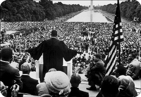
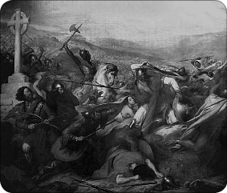

Bir hayal kurdu, Amerikan vicdanı uyandı.
Martin Luther King: “Bir hayalim var!”
28 Ağustos 1963
“Bir hayalim var; bir gün bu ulus ayağa kalkacak ve
sorgusuz sualsiz kabullendiğimiz tüm insanların eşit
yaratıldığı gerçeğini tam anlamıyla sonuna
kadar hayata geçirecek!”
Martin Luther King
Dr. Martin Luther King, Washington D.C.’deki Lincoln Anıtı önünde toplanmış 250 bin siyah Amerikalıya İş ve Özgürlük temalı bir konuşma yaptığında, Amerika’daki medeni haklar hareketi doruk noktasına ulaşmıştı. Zengin ya da fakir, beyaz ya da siyah, her türlü insan, Afrika kökenli Amerikalılar için eşit oy hakkı ve fırsat eşitliği için başkentte omuz omuza gelmişti. Bütün bu kalabalık ırk ayrımının kaldırılması için haykırıyordu. Bu barışçıl toplantı, başkentin gördüğü en büyük toplumsal hareketti. King son konuşmacı olarak kürsüdeki yerini almıştı. Büyük özgürleştirici Abraham Lincoln’ün heykeli hemen arkasında yükseliyordu. Rahiplikten gelen belagat becerisini maharetle kullanan King, “Siyah adam halen özgür değil!” diyor, coşkulu kalabalığı aşka getiriyordu. Kalabalığa “Daha önümüzde uzun bir mücadele var, bunun üzerine şiddetin gölgesini düşürmeden yolumuza devam etmeliyiz” diyordu. Önceden hazırlanmış metnin sonlarına yaklaşıyordu. Kendinden öncekiler gibi konuşması 7 dakikayla sınırlıydı. Ama birden ne olduysa kağıdı bir kenara bıraktı ve o tarihe geçen konuşmasına başladı. Konuşmuyor, destan yazıyordu adeta. Kendisini dinleyen kalabalığa “Mississippi’ye dönün, Alabama’ya dönün, Güney Carolina’ya dönün, Georgia’ya dönün, Louisiana’ya dönün, kuzey eyaletlerinin varoşlarına dönün ve aklınızdan çıkarmayın. Bu durum bir şekilde değişebilir ve değişecek. Ümitsizlik vadisinde kaybolmayın!” diyordu. Hitabı bittiğinde, Amerikan tarihindeki, Lincoln’ün 1863’te Gettysburg’de yaptığı konuşmadan sonraki en iyi konuşmaya imza atmış olacaktı.

“Bir hayalim var” diyerek ümit dağıtıyor, yeri geldiğinde şu cümlelerle kararlılığını sergiliyordu: “1963 yılı bir son değil, yalnızca bir başlangıçtır. ‘Zencilerin biraz hava atıp rahatlamaya ihtiyaçları var, bunlar hemen sakinleşirler’ diye düşünenler şunu iyi bilsinler ki, eğer önceki tutumlarına yeniden dönecek olurlarsa, sarsıcı bir uyanışla karşılaşacaklardır. Zencilerin vatandaşlık hakları verilmediği sürece, Amerika’da rahat ve huzur kalmayacaktır. Ta ki adaletin aydınlığına kavuşuncaya kadar, isyan fırtınaları ulusumuzun temellerini sarsmaya devam edecektir”. Durmuyordu King, tarihe geçecek bir özgürlük manifestosu yazıyordu:
Bir hayalim var benim!…
Gün gelecek, bir zamanlar köle olanların evlatlarıyla yine bir zamanlar köle sahibi olanların evlatları, Georgia’nın kızıl tepelerinde birlikte kardeşlik sofrasına oturabilecekler…
Bir hayalim var benim…
Gün gelecek, Mississippi eyaleti bile, adaletsizliğin ve baskıların ateşiyle bunalmış olan o eyalet bile, bir özgürlük ve adalet vahasına dönüşecek…
Aslında King, “Bir hayalim var” kalıbını daha önce yaptığı konuşmalarda da kullanmıştı ama hiçbiri o sıcak Ağustos gününde kullandığı kadar güçlü bir şekilde dökülmemişti dudaklarından. Alabama’daki otobüslerdeki ırk ayrımcılığına karşı başlattığı mücadeleyle ilk kez sivrilen King’in son durağı Washington olmadı. Artık nerede haksızlık varsa, orada King vardı. Vietnam Savaşı’na karşı sesini yükseltti. Yetmedi, Amerika’daki fakirliğe karşı savaş açtı. Fakat büyük bir iştahla adaletsizliklerle savaşanların başına gelenler onun da başına geldi. 1968’de uğradığı bir suikastla hayatını kaybetti. Üstelik geride Gandhi’den aldığı ve daha da yükseğe diktiği şanlı bir sivil direniş bayrağı bırakarak...
NEYİ DEĞİŞTİRDİ?
King, temel insan haklarını Amerikan geleneğinin en yüksek idealleriyle eşitleyen bu konuşmasıyla ülkedeki birçok kişinin ilk kez ırk eşitliğinin ne kadar önemli olduğunu görmesini sağladı. Konuşmasında sık sık ‘Amerikan Rüyası’ kavramına atıfta bulunarak, yeri geldiğinde kelimelerin en korkunç silahtan bile daha etkili olabileceğini gösterdi. Washington’daki bu büyük konuşmadan kısa bir süre sonra medeni haklar hareketi en büyük iki meyvesini verecekti. 1964’te Medeni Haklar Kanunu’yla işyerlerinde, okullarda ve kamuya açık yerlerde ırk ayrımcılığı yasaklandı. Ardından anayasada 24. değişiklik yapıldı ve güney eyaletlerindeki siyah Amerikalıların oy vermesinin önündeki en büyük engel olan seçmen vergisi, Oy Hakkı Kanunu’yla kaldırıldı.
Akılda kalanlar
- King’in tarihe geçen bu konuşmasını yaptığı gösteri, siyahlar için istenilen tüm hakları kapsamamasından dolayı Malcolm X tarafından ‘Washington’daki saçmalık’ olarak isimlendirilmişti.
- Mahatma Gandhi’yi kendine örnek alan King, insan hakları ve siyahlar ile beyazlar arasında eşitliğin en büyük savunucularından biri oldu.
- Irklara dönük önyargıyı kırmakta başarılı olduğu ve şiddet içermeyen tutumu nedeniyle 1964’te Nobel Barış Ödülü’ne layık görüldü.
- Time dergisinin ‘100 yılın en önemli kişileri’ listesinde 6. sırada yer aldı.
- Ölümünden sonra ABD başkanı Lyndon B. Johnson ulusal yas ilan etti. Cenazesine 300 bin kişi katıldı.
Aynı günlerde Türkiye’de...
Bir başbakan ve iki bakanı asan askerî darbenin üzerinden üç yıl geçmişti. Ülke, tarihinde fazlasıyla bulunan ‘kayıp yıllarından’ birini daha yaşıyordu. King’in Amerikan vicdanına seslendiği gün Türkiye’de hükümet krizi patlak vermiş ve Cumhurbaşkanı Cemal Gürsel, Çankaya’da başta CHP lideri Başbakan İsmet İnönü olmak üzere diğer parti yetkililerini toplamış, “Ne olursa olsun koalisyonu bozmayın, yola devam” demişti. En az bunun kadar gazeteleri, özellikle de kadın okuyucuları meşgul eden bir diğer konuysa, İran şahının eski karısı Süreyya’nın İstanbul ziyaretiydi. Gazeteler ‘imparatoriçe’ haberlerinden geçilmiyordu. İlginçtir, yazar Ernest Hemingway’in av arkadaşının Türkiye’ye gelmesi bile olay oluyordu o günlerde. Gazetelerimiz adamın nerede kaç hayvan vurduğunun hikayesini ballandıra ballandıra sayfalara yayıyordu. Yine aynı günlerde Almanya, Türkiye’ye 18 yılda geri ödenmek üzere 40 milyon dolar kredi açmış, iki Alman kızın Müslüman olması Milliyet’in ilk sayfasında kendisine yer bulmuştu. 200’den fazla filmde ‘kötü adamı’ oynayan Ahmet Tarık Tekçe’nin hayatıyla ilgili büyükçe bir haber de dikkat çekiyordu. Habere göre bir zamanlar nüfus memuru olan Tekçe, liseyi 18 yılda bitirmişti. İnanması zor ama yine o günlerde Bakanlar Kurulu, ‘trafik kazalarında ölenlerin sayısının artması üzerine’ trafik meselesini ele almaya karar vermişti. Tam 43 yıl önce...
‘Prag Baharı’ bir anda kışa döndü
Ruslar Çekoslovakya’yı işgal etti
21 Ağustos 1968
“Sovyetlerin yardımıyla Çekoslovakya iç savaştan
kurtuldu. Sovyetlerle ittifak haricinde bağımsız ve
sosyalist bir Çekoslovakya’nın geleceği yoktur.”
Çekoslovak hükümet kitapçığından
(1975)
Sovyet Lideri Leonid Brejnev her yaz olduğu gibi yine Kırım Yarımadası’ndaki bir numaralı devlet daçasına gidiyordu. Günlerden Ağustos 13, sene 1968’di. Rus lider zor bir kararla karşı karşıyaydı. Yoldaşlar sisteme başkaldırdığı için tankları ve askerleri yollasın mı, yoksa onlara bir şans daha mı versindi? İşte bütün mesele buydu.
Prag’daki Komünist Parti, bahar ayında ‘demokratik sosyalizm’ ilan etmiş, Varşova Paktı ülke liderlerini öfkelendirmişti. Başta Başbakan Alexander Dubcek olmak üzere bu akımın taraftarları, Komünist düzene geçişin devrim yoluyla olacağını kabul etmekle birlikte, bu devrim hareketinin demokratik yollarla da yapılabileceğini ve demokratik olmayan yollardan Komünizme geçişin mümkün olmayacağını savunmaya başlamışlardı. Bir tür liberal sosyalizm istiyorlardı. İsteyen istediğini söyler, düşünür ve istediğini söylemek için gösteri yapabilirdi. İşte bu özgürlükçü akım tarihe ‘Prag Baharı’ olarak geçecekti.
Ülkede epeydir esen özgürlük rüzgarının serinliğini hissetmeye başlayan Çek vatandaşları, o karanlık günün sabahında sokaklarda cirit atan Sovyet tanklarını şaşkınlıkla karışık korkuyla izlerken, erken sevindiklerinin de farkına varıyorlardı…
Reformcu Dubcek, Stalinist Antonin Novotny’yi Çekoslavak Komünist Partisi’nin başından alaşağı ettiğinde Moskova’dakiler bunu parti içi bir ayak kaydırma operasyonu olarak değerlendirmişlerdi. Sonuçta başbakan, ‘bazı aykırı’ düşünceleri olsa da, çocukluğunun ve gençliğinin büyük bir bölümünü Sovyetler Birliği’nde geçirmişti. ‘Yoldan çıkması’ pek olası görünmüyordu. Lakin Kremlin’dekilerin Dubcek’in kendi yoluna gitmek istediğini fark etmesi uzun sürmeyecekti. Sovyet Merkez Komitesi, komünist blokun diğer ülkelerine geçtiği mesajda şu tespite yer veriyordu: Çekoslovakya ‘burjuva cumhuriyetine’ dönmenin eşiğinde.
Kısa sürede Moskova’yla Prag arasındaki tansiyon yükseldi. Çek yoldaşlarla ağız dalaşına girilmediği gün yoktu. Etrafındakiler demir yumruğun inmesi için bastırmasına rağmen Brejnev, son ana dek itidal çağrısında bulunmaktan yanaydı. Dubcek’in ‘işçilerin başında’ iyi göründüğüne inanıyordu. Sosyalist karşıtı hareketlerin engellenmesi için siyasi yöntemlerin denenmesinden taraftı. 13 Ağustos’ta Brejnev, Yalta’dan Dubçek’i aradı. ‘Sasha’ diye hitap ettiği Çekoslovak liderden, önde gelen üç reformisti kovmasını istedi. Bununla da kalmamış, medyaya karşı sertleşmesini de istemişti. Dubcek sessizce dinledi ve “Gerekiyorsa istifa edeyim” dedi. Brejnev konuşma boyunca iyi polis-kötü polis rolleri arasında gidip geldi. Partiden gelen baskılara daha fazla dayanamayacağının sinyallerini veriyor, “Tatsız önlemlere başvurmak istemiyorum” diyordu. Kremlin’deki kurt komünistlerin kanaati kesindi. Sosyalist sistemin temellerinin sarsıldığına iman etmişlerdi. Merkeze başkaldıran bu isyankar reformcuların tepesine binilmeliydi. Sonunda istedikleri oldu. 21 Ağustos sabahı saat 4’te, Sovyet özel timleri parti genel merkezini bastı. KGB ajanları Dubcek’i tutukladı ve Moskova’ya götürdü. Drama da başladı. Komünist blokun NATO’su olarak kabul edilen Varşova Paktı’nın beş üye ülkesi, Moskova’nın çağrısıyla Çekoslovakya’yı işgal etti. Başkent Prag’da binlerce kişi Dubcek’e destek için sokaklara dökülmüş, işgalci Kızıl Ordu’ya karşı gösteri yapıyordu. Çatışmalarda onlarca insan hayatını kaybetmiş, bu işgal sadece Batı’yı değil, aynı zamanda komünizme sevdalı birçok solcuyu da şok etmişti. O gün sayısı 200 bini bulan işgal ordusu, belki de sosyalizmin çehresini değiştirebilecek potansiyele sahip demokrasi ve özgürlük çiçeklerini acımasızca ezip geçiyordu...
NEYİ DEĞİŞTİRDİ?
Prag Baharı, işgalin hayal kırıklığına uğrattığı Batılı solcuların Markist-Leninist görüşlerle arasına mesafe koymasına neden oldu. Batılı komünist partilerde Avrupa merkezli komünist düşüncenin kök salmasına kapı araladı. Bunlar Moskova’yla aralarına mesafe koydu ve zaman içinde çözüldüler. Doğu Bloku’nun üyeleri olan Romanya ve Yugoslavya da işgalin ardından Moskova’yı ikinci plana iterek kendi meşreplerine uygun bir sosyalizm yönünde ilerlemeye başladı. Prag Baharı, daha sonraları birçok komünist ülkedeki gençlik hareketlerine ilham kaynağı oldu. 1987’de Sovyet lider Mihail Gorbaçov, “glasnost ve perestroika” olarak tanımladığı reform hareketleri için Dubcek’in 68’de gündeme getirdiği ‘İnsan yüzlü Sosyalizm’ fikrinden ilham aldığını söyleyecekti.
Akılda kalanlar
- 1956’da Macaristan’da olduğu gibi Batı bu olaya hiçbir müdahalede bulunmadı. Sovyetler’in Üçüncü Dünya Savaşı pahasına da olsa işgal emri verdiği söyleniyordu. Dahası ABD bir seçim kampanyası döneminin ortasındaydı ve başı Vietnam’da yeterince dertteydi.
- Sovyetler işgal için, benzer vakalarda da yapacakları gibi, işgal edilen ülkedeki hükümetin “karşı devrimci güçlerle” savaşmak için yardım istediği iddiasını kullanmışlardı.
- Kesin sayı hiçbir zaman bilinmese de işgal sırasında 100’ün üzerinde kişinin öldüğü sanılıyor.
- Komünistlerin iktidarı Kadife Devrim’in ardından 1989’da sona erdi. Prag’a muzaffer bir dönüş yapan Dubcek, yeni yönetimin başkanı oldu.
- Sovyet askerleri, 1968’de girdikleri ülkeden ancak 1991’de ayrıldı.
- Çekoslovakya 1993’te ‘Kadife Boşanma’ sürecini tamamlayıp ayrılarak iki bağımsız cumhuriyet, Çek Cumhuriyeti ve Slovakya haline geldi.
Aynı günlerde Türkiye’de...
Sovyet tanklarının Prag sokaklarına daldığı gün, İstanbul polisi ‘Çil Burhan’ lakaplı bir çete reisini yakalıyor ve bu sayede uzun zamandır haraca kestiği sebze hali esnafı rahat bir nefes alıyordu. Aynı gün İzmir Fuarı açılışında bir konuşma yapan Ticaret Bakanı Ahmet Türkel, ihracat seferberliği çağrısında bulunmuş ve Arap ülkelerinin Türkiye’nin kalkınmasına katkıda bulunmaya hazır olduğunu müjdelemişti. Bu müjdeyi ileriki yıllarda da sık sık alacaktık... Doğu gezisini sürdüren Başbakan Demirel’se, “Cumhuriyetin en büyük başarısı milletin iradesinin hakim kılınmış olmasıdır” gibi klişe ifadelerle süslediği konuşmalar yapıyor, ‘halkın dilinden’ konuşarak, halkı ‘büyülemeye’ devam ediyordu. Ve yine ordunun “Atatürkçülüğe aykırı bazı davranışların” arttığına dair rahatsızlığını dile getirdiği bir mini muhtıra, o günlerin sıcak gündem maddelerinden biriydi. Hayatsa tabii ki bir yandan devam ediyordu. Tarabya’daki Viski A Gogo isimli klüp ‘genç neslin sevgilisi’ Ajda Pekkan’ın her akşam sahne alacağını müjdelemiş ve İtalya’nın ünlü şarkıcısı Tony Dallara’yı kıvançla sunacağını gazete ilanlarıyla açıklamıştı. Siyah beyaz anıların renkli yaşandığı günlerdi...
“Houston... Eagle indi.”
İnsanoğlu Ay’a ilk adımını attı
21 Temmuz 1969
“Ay’ı incelemeye gittik ama aslında dünyayı keşfettik”
Eugene Cernan
(Apollo 17 komutanı, Ay’da yürüyen son insan)
Amerikalı astronot Neil Armstrong, GMT saatine göre 02:56’da “Sea Of Tranquility” (Sessizlikler Denizi) adı verilen eski bir nehir yatağının üzerine konan uzay aracı Eagle’ın (kartal) yere değmesinden altı saat sonra Ay yüzeyine adım atmaya hazırlanıyordu. İşte o an tüm dünya nefesini tutmuş, onun ağzından dökülecek cümleyi bekliyordu. Adım attı ve o tarihî cümle geldi: “Bu benim için küçük fakat insanlık için büyük bir adım.”
Armstrong, daha önce de 20:17’de Ay’a indiklerini şu cümlelerle rapor etmişti: “Houston, Tranquility Üssü konuşuyor. Eagle indi.” Dünya dışındaki bir gök cismi üzerinde yürüyen ilk insan olarak tarihe geçen astronot, Ay yüzeyini toz haline getirilmiş kömür olarak tanımlıyordu.
“Barış İçin Geldik”
Bu tarihî anlar Eagle’a yerleştirilen ve Armstrong tarafından çalıştırılan kamera tarafından dünyada nefesini tutmuş milyarlarca insana ulaşıyordu. Armstrong, Ay’daki ilk dakikalarını görevin aniden iptal edilmesi ihtimaline karşı fotoğraf çekerek ve toprak örneği alarak geçirdi. GMT saatine göre 03:15’te Edwin “Buzz” Aldrin de kendisine katıldı ve iki astronot saat 03:41’de Amerikan bayrağını dikmeden önce örnekler toplayarak, yüzeyde zıplamak da dâhil bazı deneyler gerçekleştirdi. İki astronot ayrıca üzerinde ABD Başkanı Richard Nixon’un imzası bulunan ve “Bugün Dünya gezegeninden insanlar M.S. 1969 Temmuz ayında Ay’a ilk adımını attı. Tüm insanlık için barış adına buradayız.” yazılı bir plakayı çıkardılar. Taşınabilir bir kamerayla görüntü çeken astronotlar, Başkan Nixon’dan bir de mesaj aldılar. Beyaz Saray’dan astronotlarla telefon bağlantısı gerçekleştiren Nixon, “Bu kesinlikle şimdiye kadar yapılmış en tarihî telefon konuşması” diyecekti. İnsanlık Apollo 11 ile yeni bir çığır açmıştı.
Ay’da yürüyen ikinci insan olan Edwin Buzz Aldrin’in, Neil Armstrong tarafından çekilen bu pozu, tarihin en meşhur karesi olacaktı. Yıllar sonra kendisiyle röportaj yaptığımda, “Neler yapmaktan hoşlanıyorsunuz?” şeklindeki soruma karşılık “Ben Ay’da yürümüş insanım, bana artık dünyada ne zevk verebilir ki?” demişti.
NEYİ DEĞİŞTİRDİ?
Apollo projesi insanoğlunun tarihindeki tartışmasız en büyük atılımdı. Sadece tarih yazmakla kalmadı, aynı zamanda o dönem Soğuk Savaş rakibi olan Amerika ile Rusya arasındaki uzay yarışının da kesin galibini belirlemiş oldu. Bu olayın ardından Ruslar uzay yarışından çekilirken, Amerika artan yatırımlarıyla uzay çalışmalarına devam etti. Apollo projesinin en önemli yanıysa zihinlerde yarattığı devrim olmuştu. ABD, akıl almazı yapmış ve Ay’a insan indirmişti. O, artık tartışmasız süper güçtü. Ay’da insan yürütmesiyle başlayan teknolojik atılım, bugün Amerika’nın dünya liderliğini sürdürmesinin başlıca sebebi olmaya devam ediyor.
Akılda kalanlar
- Üç astronot, döndükten sonra 21 gün bir karantinada tutuldular. Amaç dünya dışı bakterilerin dünyadakilere bulaşmasını engellemekti. Sonradan bu uygulamadan vazgeçildi.
- Moskova Radyosu gelişmeyi 10:30’daki yayınında resmî bir şekilde, çok sıradan bir olay gibi duyurmuştu.
- Apollo 11’in ardından 10 astronot daha, 6 değişik seferle Ay’a gitti. Son sefer Apollo 17’yle Aralık 1972’de yapıldı. Planlanan Apollo 18 ve 20 seferleri, uzay mekiğine bütçe ayırmak için iptal edildi.
- Tüm Apollo projesi için günümüz parasıyla 170 milyar dolara yakın para harcandı! Yine tüm projede yer alan bilim adamı ve teknisyenlerin sayısı 30 bini geçiyordu. Ay projesi, Amerika’nın bilimsel alanda liderliği ele geçirip rakiplerine fark atmasının baş aktörü oldu.
- Mikrodalga fırından uçuş bilgisayarlarına, yakıt hücresinden dijital fotoğraf makinesine (evet, daha o zamandan planlanmıştı!) varıncaya dek onlarca icat, Apollo projesinin ürünü olarak ortaya çıktı.
- Ay’a ayak basılması o günlerin imkânlarıyla 500 milyon insan tarafından canlı izlendi. Bu rekor 2000’li yıllara dek kırılamayacaktı.
Aynı günlerde Türkiye’de...
Türkiye o günlerde tabiri caizse ‘Eller Ay’a biz yaya’ deyiminin hakkını veriyordu. Ülke Demirelli yıllarını yaşıyor, istikrarsızlık kol geziyordu. Başbakan Demirel, Amerikalıların Ay’da hoplayıp zıplamasından 9 gün önce iş isteyenlere “İşiniz vardı da biz mi elinizden aldık” diyecek, Ay’a ayak basılmasından 3 gün öncede “Birbirimizi yemeyelim. Birbirimizi yiyerek karnımızı doyuramayız” şeklindeki demecini patlatacaktı. Ve yine dünya bu büyük adımı konuşmaya devam ederken Türkiye’de gündem, 28 Temmuz’da Samsun Cezaevi’nde yaşanan ayaklanmaydı.
Petrol muslukları kapandı, Batı neye uğradığını şaşırdı
OPEC Petrol Ambargosu
15 Ekim 1973
‘Tarihte ilk kez sanayileşmiş ülkeler, sanayi öncesi
devletlerin baskısına boyun eğmek zorunda kalıyor.’
Uluslararası Stratejik Araştırmalar Enstitüsü
(1973)
Petrol İhraç Eden Ülkeler Birliği (OPEC), 1973’teki Yom Kippur Savaşı’nda İsrail’e askerî destek veren Amerika başta olmak üzere bir dizi Batılı devlete petrol ihracını kestiğinde dünya şok olmuş, hayat durma noktasına gelmişti.
Çoğunluğu Arap olan bu ülkeler, İsraille olan savaşta ellerindeki en büyük silahı kullanmaya karar vermiş ve İsrail 1967’deki savaşta işgal ettiği topraklardan çekilmediği sürece petrol ihracatını her ay yüzde 5 oranında azaltacaklarını açıklamışlardı. Bu Batı dünyasına yöneltilebilecek en büyük tehditti. ‘Petrol yoksa hayat da yoktu.’ Bu kadar basitti. OPEC, Aralık ayında söz konusu ülkelere tam kapsamlı ambargo uygulamaya başladı. Enerji için ithal petrole oksijen kadar ihtiyaç duyan bu ülkeler büyük bir krize girdi.
Ekim 1973’te Mısır ve Suriye (ki her ikisi de OPEC üyesi değildi) İsrail’e karşı ortak bir saldırı başlattığında, OPEC bakanları Viyana’da toplantı halindeydi. İlk etapta neye uğradığını şaşıran İsrail, kısa zamanda toparlandı ve özellikle Amerika’nın havadan yaptığı ikmal ve Hollanda ve Danimarka’dan gelen askerî yardımla durumu lehine çevirdi. OPEC, petrol fiyatını arttırarak İsrail’i ve müttefiklerini köşeye sıkıştırmaya karar verdi. İsrail tahmin edildiği üzere hiçbir yerden geri çekilmedi ve petrol fiyatı yüzde 70 oranında yükseldi. İsrail oralı olmadı. OPEC’in Tahran Konferansı’nda petrolün varil fiyatı yüzde 130 oranında arttırıldı ve Amerika, Hollanda ve Danimarka’ya topyekün petrol ambargosu kararı alındı. Petrol üretenler bir şekilde ‘Batı’nın fişini’ çekmişti. Bir anda dört katına çıkan petrol fiyatı Amerika ve Avrupa’da enerji krizine ve gaz kesintilerine yol açtı. Batılılar petrolü karneyle alır olmuştu. Dönemin Amerikan Dışişleri Bakanı Henry Kissinger’ın İsrail ile Suriye arasında anlaşma sağlamasının ardından Amerika’yı hedef alan ambargo Mart 1974’te kaldırıldı. Bununla birlikte petrolün fiyatı yükseklerde seyretmeye devam etti. OPEC, 1970’lerde birkaç kez daha üretimi kıstı. 1980’e gelindiğinde ham petrolün fiyatı, 1973’tekinin on katına çıkmıştı! Lakin OPEC’in etkisi giderek azaldı. Petrol ambargosuyla beklemediği bir şamar yiyen Batı gözünü açmış; nükleer ve termik santrallerle, alternatif enerji kaynaklarına yönelmişti. Bu sayede hem Amerika’da hem de OPEC üyesi olmayan diğer ülkelerde geniş ve verimli yeni petrol sahaları keşfedildi. Böylelikle ilk etapta istediğini alan OPEC, uzun vadede kaybeden taraf oldu. Zira ‘petrole dayalı düzen’ bir kez sarsılmış ve alternatifler ortaya çıkmıştı. Zamanla OPEC içindeki birlik, özellikle üretimi arttıran Suudi Arabistan’dan dolayı bozulmuş, petrol gelirleri azalmıştı. 1981’de OPEC ülkelerinin petrol üretim miktarı, diğer ülkeler tarafından geçilecekti. Vurduğu ilk şamarla ses getiren OPEC, bir daha hiçbir zaman 1973’teki etkinliğine ulaşamayacaktı.
Petrol üreticisi ülkeler, petrolün ne kadar büyük bir silah olduğunu fark edince, bunu kullanmakta tereddüt etmediler. İsrail yanlısı sanayileşmiş Batılı ülkelerin oksijen kadar ihtiyaç duyduğu petrolü kestiler. Bu ülkelerde uzun benzin kuyrukları oluştu. Öyle ki Amerika’da tasarruf amacıyla otobanlardaki hız sınırı bile düşürülmek zorunda kalındı...
NEYİ DEĞİŞTİRDİ?
OPEC ambargosu Batı’yı derin uykusundan uyandırdı. ‘Ya bir gün petrol olmazsa?’ sorusu zihinlerde bomba gibi patladı. Özellikle nükleer enerji alanındaki yatırımlar arttı, rüzgar ve güneş gibi alternatif enerji kaynaklarına dönük araştırmalar başladı. Başta Amerika’da olmak üzere, az yakıt tüketen araba teknolojisi öncelik kazandı. Ambargo siyasi ittifakları da derinden sarstı. Amerika ile Avrupa’nın bazı ülkeleri, İsrail konusunda fikir ayrılığına düştüğü gibi, AET (o zamanki AB) üyeleri de farklı kamplara ayrıldı. Arap yanlısı tutum alan bazı topluluk üyeleri ambargo kapsamından çıkarıldı. Krizden büyük ders çıkaran Batı Avrupa ve Japonya, İsrail’e açıktan destek verdikleri dış siyaset eğilimlerini Arap yanlısı olacak şekilde değiştirdi. Japonya bununla da kalmayıp, ekonomisini petrole bağlı sanayiden elektroniğe kaydırma kararı aldı. Özetle ambargoyla kıymeti anlaşılan petrol, Ortadoğu ülkelerini bir süreliğine uluslararası siyasette önemli bir oyuncu yaparken, bir tepki olarak Batı’nın bölgeye olan ilgisini ve müdahalelerini de arttırmıştı.
Akılda kalanlar
- OPEC 1960’da Suudi Arabistan, İran, Irak, Kuveyt, Venezuella tarafından, petrol fiyatını belirlemek ve Amerikalı ve Hollandalı petrol şirketlerinin baskılarına direnmek amacıyla kuruldu. İlerleyen yıllarda buna diğer Arap ülkeleri ve petrol üreten 3. dünya ülkeleri de katıldı. İlk on yılda fiyat belirlemede pek etkin olamadılar ama 70’lerden itibaren, özellikle Amerika’daki üretimin azalması üzerine sesleri daha çok çıkar oldu.
- Ambargo boyunca Amerika’da plakaları tek numarayla biten araç sahipleri ancak ayın tek günlerinde, çift numaralı plakalı araçlarsa çift günlerde benzin alabildi.
- Yine Amerika’da petrol tasarrufu için otobanlarda hız sınırı getirilmiş, gün ışığından daha fazla yararlanma uygulaması başlamıştı.
- Ambargo sonucu yükselen petrol fiyatları, petrol ihraç eden ülkelerin kasasını doldurdu. 1974 yılında dünyadaki en zengin 15 şirketin 7’si petrol şirketiydi.
- Ambargoyla yıllarca Batılı devletlerin kontrolündeki petrol gelirleri Ortadoğu ülkelerine akmaya başladı. Bu gelirlerin büyük bir kısmı silahlanmaya gitti.
- New York Borsası ambargo sonucu 97 milyar dolar değer kaybetti.
- Hollanda tamamen ambargo altındayken, ABD’ye askerî üslerini operasyon için kullandırmayan İngiltere ve Fransa petrolünü kesintisiz şekilde almaya devam etti.
Aynı günlerde Türkiye’de...
1973 genel seçimleri ülkenin tek gündemiydi. 14 Ekim’de yapılan seçimlerden Bülent Ecevit liderliğindeki CHP birinci parti olarak çıkarken, Süleyman Demirel’in Adalet Partisi ikincilikle yetiniyordu. 16 Ekim’de gazetelere konuşan Ecevit, “Hükümet kurarken taviz vermem, koalisyon ihtimal dışı değil” derken, İstanbullular, ’Gizli Savaş’ isimli 3. sınıf bir casus filmi için sinemaların önünde kuyruk oluyordu. Milliyet’in yaptığı ankette Fenerbahçe’nin Türkiye’nin en çok taraftara sahip olan takımı olduğu anlaşılmıştı. ‘Parti kursa, oy veririz’ diyordu bazı taraftarlar. Ülke 1971 muhtırasının yaralarını sarmaya çalışıyordu...
İki cuntayı devirip, üç ülkeyi derinden sarsan savaş
Türkiye Kıbrıs’a asker çıkarıyor
20 Temmuz 1974
“Biz aslında savaş için değil, barış için, yalnız Türklere
değil, Rumlara da barış getirmek için Ada’ya gidiyoruz.
Türkiye’nin Kıbrıs’ta barış, kardeşlik ve özgürlük için
giriştiği harekât, bu sabah erken saatlerde başlamıştır…”
Bülent Ecevit
(Başbakan/1974)
Kıbrıs… Türkiye’nin yavru vatanı… Kimilerine göreyse sırtındaki kambur… Tabii bu tartışılır. Tartışılmayacak tek şey, kambur ya da yavru ne olursa olsun, Kıbrıs’ı çıkmamak üzere gündemimize sokanın Kıbrıs Barış Harekatı olduğu gerçeği… Şimdi gelin, Türkiye Cumhuriyeti’nin bu en karışık dış sorununu anlamak için uzun bir yolculuğa çıkalım...
Osmanlı İmparatorluğu 1571’de Kıbrıs’ı aldı. 1877’de Osmanlı-Rus Savaşı patladı. İngiltere, Kıbrıs’ın yönetimini geçici olarak üstlenmek kaydıyla Osmanlı’ya yardım etti. 1914’te Osmanlı’nın İngiltere’nin karşısında Birinci Dünya Savaşı’na girmesi üzerine İngiltere 5 Kasım 1914’te Kıbrıs’ı ilhak etti. Bunun ardından Kıbrıs, Rum çetecilerin bağımsızlık ve ardından da Yunanistan’la birleşme için İngilizlerle çatışmaya başlayacağı 1950’li yılların ortasına dek derin bir uykuya daldı...
Sömürgecilik çağı kapanıyordu ve dünyanın en büyük sömürge imparatorluğunun sahibi olan İngilizler, 1950’lerin sonlarına doğru Akdeniz’deki en büyük sömürgeleri Kıbrıs’tan çekilme zamanı geldiğine karar vermişlerdi. Tıpkı Filistin’de olduğu gibi, Kıbrıs’ta da kendilerinden kurtulmak isteyen bağımsızlık yanlısı çetelerle boğuşmaktan bıkmışlardı. Adadaki Türklerden dolayı Türkiye’nin, Rumlardan dolayı Yunanistan’ın ve adanın fiilî sahibi olması nedeniyle İngiltere’nin bir araya gelip bir çözüm bulmasına karar verildi. Sonuç olarak, tarafların Londra ve Zürih’teki görüşmeleriyle şekillenen Londra-Zürih Anlaşmaları sonucu, Rumların çoğunlukta Türklerinse azınlıkta olduğu Kıbrıs Cumhuriyeti 1960’da tarih sahnesine çıktı. İlk devlet başkanı, Kıbrıs Rumlarının lideri Başpiskopos Makarios, yardımcısıysa Kıbrıs Türklerinin lideri Doktor Fazıl Küçük olmuştu. İngiltere, adada birkaç kalıcı askeri üs kurarak ortadan çekildi. Her üç ülke de söz konusu anlaşmalara göre garantörlük sıfatını kazandı. Diğer bir deyişle, antlaşmalara aykırı bir durum olması durumunda müdahale edebileceklerdi…
Kıbrıs’ta her zaman adanın Yunanistan’a bağlanmasını (Enosis) isteyen milliyetçi bir damar olmuştu. Bu damarın harekete geçmesiyle 1960’ların başından itibaren Rumlarla Türkler arasındaki gerginlik çatışmaya dönüştü. 1963’te Rumların iki Türk’ü öldürmesiyle ilk kan döküldü. Rum tarafı silahlanmaya başladı. Türk tarafı da 1950’lerin sonundan itibaren Türk Mukavemet Teşkilatı adı altında kendini müdafa yoluna gitti. Teşkilatın başındaki isim, ilerleyen yıllarda Kıbrıs Türkleri ve Kıbrıs Sorunu’yla özdeşlecek biriydi: Rauf Denktaş.
Kendilerini hedef alan saldırılar üzerine Türkler Kıbrıs Cumhuriyeti’nden çekildi. Başbakan İsmet İnönü, 2 Haziran 1964’te Türkiye’nin Kıbrıs’a müdahale edeceğini açıkladı. Bir anda çarşı karıştı. Zira devir Soğuk Savaş devriydi ve hiçbir gelişme Amerika-Rusya denkleminin dışında değerlendirilemezdi. Amerika topa girdi. Başkan Lyndon Johnson, İsmet İnönü’ye Türk tarihine ‘Johnson Mektubu’ olarak girecek ağır bir mesaj yolladı. Johnson, kabaca “İki NATO ülkesinin (Türkiye-Yunanistan) savaşmasını kabul edemeyiz. Böyle olursa Sovyetler size saldırabilir, o zaman da biz sizi korur muyuz, bilemem. Ola ki saldırdınız, Amerikan silahlarını kesinlikle kullanamazsınız!” diyor, özetle aba altından sopa gösteriyordu. Mektup Türkiye’deki hamasi damarı kabartıp, İsmet Paşa’ya tarihe geçen “Yeni bir dünya kurulur, Türkiye de orada yerini alır” sözlerini söyletse de, istediği sonucu almıştı. Türkiye adaya müdahale edemedi.
İrili ufaklı toplumsal çatışmalarla geçen yılların ardından 1967’de kriz bir kez daha tırmandı. Zira uzun zamandır zayıf koalisyon hükümetleriyle yönetilen ve istikrarsızlığın kol gezdiği komşu Yunanistan’da bu durumu fırsat bilen bir grup sağcı albay, solcu hükümete karşı darbe yapıp yönetime el koymuştu. Cunta, daha ilk günden itibaren Enosis’i gerçekleştirme niyetinde olduğunu saklamadı. Tek farkla; bunu silahla değil, diplomasi yoluyla, tatlı tatlı, Türkiye’yi ikna ederek yapacaklardı. Başbakan Demirel, Enosis’i ima eden her türlü teklifi elinin tersiyle itti.
Kasım 1967’de silahlı Rum çetelerinin Türk köylerine yönelik imha hareketlerine girişmesi, tansiyonu yeniden yükseltti. Bu arada Kıbrıs doğumlu Yunan Albay Georgios Grivas, yıllar sonra adaya dönmüştü. Rum Millî Muhafız Kuvvetleri’ni ve çetecileri Türklere karşı örgütleme işini üstlendiği gibi, Yunanistan tarafından adaya gönderilen Yunan birliği de kendisine bağlanmıştı. İngiliz sömürge yönetimine karşı bağımsızlık ve ardından da adanın Yunanistan’a bağlanması için mücadele eden EOKA’nın (Kıbrıs Savaşçıları Millî Cephesi) üst düzey yöneticilerinden olan Grivas, Yunanistan’da neredeyse ulusal kahramandı. Böylesi kritik bir dönemde adaya dönmüş olması hayra alamet değildi. Yunanlar Enosis konusunda ciddi görünüyordu.
Hem Türk köylerine saldırı hem de Grivas faktörü Türkiye’yi harekete geçirdi. İskenderun’da büyük bir çıkarma birliği hazırlandı. Türk donanması da İskenderun’da toplandı. Hükümet 17 Kasım’da adaya çıkarma yapma kararını dünyaya ilan etti. Tetiği çekmemek için şartlarını ileri sürdü: “Grivas’ı adadan uzaklaştırın ve 1964’ten beri yığılmış bulunan 12 bin kişilik Yunan askerini adadan çekin!”
Türkiye’nin tavizsiz duruşu sonuç verdi. Amerika ve BM’nin devreye girmesiyle Yunanistan geri adım attı; Grivas ve askerler Yunanistan’a çekildi. Krizin geçici olarak sönmesinin ardından müzakere maratonu yine başladı. Diplomasi trafiği, adadaki tüm manzarayı değiştirecek o güne dek devam edecekti.
Takvimler 1974 yılını gösterirken cunta idaresindeki Yunanistan kör topal sivil idareye geçmeye çalışıyordu. Ülkedeki monarşiyi tasviye eden ve yeni rejimi pekiştirmek isteyen cunta, kamuoyunu fişeklemek için bir kumar oynadı. Kıbrıs’taki milliyetçilere destek vererek darbe yaptırdı. Zira eski bir Enosis taraftarı olan ve ancak bu ideolojisinden vazgeçtiğini ve bağımsız Kıbrıs fikrini benimsediğini deklare ettikten sonra devlet başkanlığına yeşil ışık yakılan Makarios, Atina’daki albayların maceracı fikirlerine mesafeli duruyordu.
Enosis’i lanetleyen Makarios’u deviren Nikos Sampson liderliğindeki darbeciler, Yunanistan’la birleşmek için düğmeye bastı. Sampson da eski EOKA’cılardandı. Hem Yunanistan’daki hem de adadaki darbeciler kumar oynamış, rest çekmişlerdi ama birisi bu resti görecekti: Türkiye.
Kıbrıs’taki toplumlararası çatışmaları sona erdirmek için uzun zamandır devam eden görüşmeler sonuç vermediği gibi, bir de üstüne üstlük Enosisçilerin darbe yapması Türkiye’nin sabrını taşırmıştı.
Başbakan Bülent Ecevit, sorunu görüşmek üzere bulunduğu Londra’dan düğmeye bastı. Koalisyon ortağı ve Başbakan Yardımcısı Necmettin Erbakan saldırı kararını iletti ve 20 Temmuz 1974 sabahı binlerce Türk komandosu gökyüzünden Kıbrıs’a yağmaya başladı. Her üç ülkeyi de derinden sarsacak Kıbrıs Barış Harekatı böylece başlamıştı...
Kıbrıs Barış Harekatı, harekat sırasında Kocatepe muhribi dost ateşi sonucu Türk jetleri tarafından batırılsa ve 54 Türk denizcisi şehit olsa da, Türk Ordusu’nun ezici zaferiyle sonuçlanmıştı. Lakin harekat sonrası gelişmeler, Türkiye’yi uzun süreli bir sorun yumağıyla baş başa bırakacaktı.
NEYİ DEĞİŞTİRDİ?
Türk tarafı, Nikos Sampson liderliğindeki darbe hükümeti devrilene dek operasyona son vermeyeceğini ilan etmişti. Sadece Kıbrıs’taki değil, Yunanistan’daki darbeciler de devrildi. Bir bakıma Türk harekatı, hem Kıbrıs’ı hem de Yunanistan’ı darbecilerden kurtarmış, her iki tarafın da demokrasiye yürümesinin yolunu açmıştı!
Bundan dolayı harekatın başında Türkiye’nin garantör sıfatıyla adaya asker çıkarması dünya kamuoyunun büyük bir kısmı tarafından sempatiyle karşılandı. Makarios bile, adadan kaçmak zorunda kaldıktan sonra BM’de yaptığı konuşmada, kendisine karşı yapılan darbeyi ‘Yunanistan’ın adayı işgali’ olarak nitelemişti. Amerikan Dışişleri Bakanı Henry Kissinger’ın girişimleriyle adanın geleceği için görüşmeler başlaması koşuluyla taraflar 23 Temmuz’da ateşkes ilan etti. Aynı gün Yunanistan’da sivil Karamanlis hükümeti görevi devraldı. Rum kesiminde de Glafcos Klerides, Makarios’un yokluğunda başkanlığı üstlendi. Türk, Yunan ve İngiliz dışişleri bakanları 25 Temmuz’da Cenevre’de çözüm için bir araya geldi. 27 Temmuz’da kesin ateşkes imzalandı. 30 Temmuz’da taraflar ‘Türk askerinin adadan ancak ve ancak tüm tarafların kabul edeceği adil ve kalıcı bir çözüm bulunması koşuluyla çekileceğini’ kabul ederek, I. Cenevre Konferansı’nı tamamladı. 8 Ağustos’ta taraflar ikinci kez Cenevre’de toplandı. 9 Ağustos’ta Türk tarafı, yeni bir anayasa yapılması, federasyona gidilmesi ve Türklere güvence verilmesi taleplerinde bulundu. Yunanistan’sa 1960 Anayasası ile kurulan düzene dönülmesini istiyordu. Türkiye’nin talepleri, harekat öncesi ‘Kıbrıs Cumhuriyeti’nin bütünlüğü ve bağımsızlığının korunması’ şeklindeki çizgisinden sapma olarak değerlendirilmeye başlandı. Rum ve Yunan tarafı, Türk tarafının 13 Ağustos’ta sunduğu çift kontrollü idare ve federal sistemi içeren iki ayrı planı incelemek için 36-48 saat süre istedi. Türkiye Rumların zamana oynadığını ve adadaki askerlerinin can güvenliğini öne sürerek, hemen cevap verilmesinde ısrarcı oldu. İngiliz ve Amerikalılar Türklerin bu ani cevap ısrarının mantıksız olduğunu söyledi. Beşli görüşmeler çöktü. Bunun üzerine Türkiye ikinci harekat için düğmeye bastı. Cenevre’de müzakereleri yürüten Dışişleri Bakanı Turan Güneş’in “Ayşe tatile çıksın” şeklindeki o meşhur şifreli mesajıyla Türk ordusu 14 Ağustos sabahından itibaren ada üzerinde tekrar ilerlemeye başladı. İkinci harekatı sonrasında ortaya çıkan tabloya göre Kıbrıs ikiye bölünmüştü. Adanın Lefke-Lefkoşe-Magosa hattının kuzeyindeki yüzde 38’lik bir kesimi Türklerin kontrolüne geçti. İşte dünya kamuoyunun Türkiye’nin yanından karşısına geçmesi de bu ikinci operasyon sonucu gerçekleşti. Türkiye bir anda ‘garantör’ pozisyonundan ‘işgalci’ konumuna düşmüştü. Dünya kamuoyunun büyük bir bölümü ve BM, birinci harekatı garantörlük ve çözüm arama istikametinde değerlendirse de, ikincisini toprak kazanımı ve yeni bir düzen empoze etme gayreti olarak yorumlayacaktı. O andan itibaren tarih adeta dondu. İkinci harekatın ardından oluşan tablo, adanın değişmez gerçeği haline geldi ve durum tam anlamıyla kilitlendi. 1975’te Türk tarafı kendi yoluna gitmeye karar verdi ve Kıbrıs Türk Federe Devleti’nin kurulduğunu ilan etti. Rauf Denktaş federe devletin lideri oldu. Bundan sekiz yıl sonra federe devletin Kuzey Kıbrıs Türk Cumhuriyeti (KKTC) adıyla bağımsızlığını ilan etmesiyle, Kıbrıs Sorunu daha da içinden çıkılmaz bir hale geldi. O günden bu yana bu devleti Türkiye’den başka tanıyan kimse olmadı…
Tüm bu gelişmeler yaşanırken merkezi New York olan ve onlarca yıla yayılan uzun soluklu müzakere trafiği hiç hız kesmedi. Kıbrıs Sorunu, adeta çözüm üretememe konusunda Filistin Sorunu’yla yarışacaktı. Arpa boyu yol alınamasa da bu görüşmeler Birleşmiş Milletler’in adayı tekrar birleştirmeyi hedefleyen Annan Planı’nın 2004’te hem Türk hem de Rum kesiminde referanduma sunulmasına dek devam etti. Yıllarca işi yokuşa sürmekle itham edilen Türk tarafı plana evet derken, Rumlar ezici bir çoğunlukla hayır dedi ve adadaki bölünme resmen mühürlenmiş oldu. Bununla da bitmedi; aynı yıl AB, Rum tarafını, Kıbrıs Cumhuriyeti kimliği ve tüm adayı temsil ettiği kabulüyle AB’ye tam üye yaptı. Üstelik bunca yılın sonunda ortaya şöylesi acayip bir durum çıktı: Kuzey Kıbrıs Türk Cumhuriyeti adıyla kimsenin tanımadığı bir ülke var. Dış dünyadan izole edilmiş şekilde yaşıyor. Ambargo altında… Kıbrıs politikası, Türk hükümetlerinin hem iç hem de dış siyasetlerinin üzerinde demoklesin kılıcı gibi sallanıp duruyor.
BM, Rumlar, Avrupa Birliği ve Amerika, Türkiye’nin Kıbrıs’taki varlığını, bazen dobra dobra bazense kibar şekilde, ‘işgalci güç’ olarak tanımlıyor. Buna mukabil Türkiye, adadaki varlığını Londra-Zürih antlaşmalarıyla izah ediyor. Buna karşın bu çevreler Türkiye’nin ikinci harekata girişerek ‘sorun çözme’ sınırını ihlal edip toprak kazanmaya giriştiğini ve bu durumun otomatikman söz konusu garantörlük anlaşmalarını devre dışı bıraktığını savunuyor. Türkiye’yse resmî olarak Güney Kıbrıs Rum Yönetimi’ni tanımıyor. AB’yse ‘Resmen AB üyesi bir ülkeyi nasıl tanımazsın’ diyerek, Türkiye’nin AB ile üyelik müzakerelerinde zorluk çıkarıyor.
Özetle, neredeyse 50 yıllık mazisi olan, Türkiye’nin adaya asker çıkarmasıyla zirve yapan ve bugün Türkiye, Yunanistan, Amerika, İngiltere, BM, AB, Kıbrıs Rum Kesimi ve KKTC’nin bir parçası olduğu Kıbrıs Sorunu, dünyanın en kadim siyasi meselelerinden biri olmaya devam ediyor...
Akılda kalanlar
- Kıbrıs Barış Harekatı’nın bilançosu 13 Ocak 1975’te kamuoyuna açıklandı. Buna göre 38 subay, 36 astsubay ve 409 er şehit olmuştu. Yunan-Rum tarafının da benzer sayıda kaybı olduğu sanılıyor. Buna karşın taraflar birbirlerinin kayıp sayısını yüksek göstermeye gayret ediyor.
- “Ayşe Tatile Çıksın”, Turan Güneş ile Ecevit arasında kararlaştırılan ve anlaşmanın mümkün olmadığı anlamına gelen parolaydı. ‘Ayşe’, Turan Güneş’in kızının adıydı.
- Resmî belgelere göre; 1963-1974 arasında gerek Türk gerekse Rum tarafında işlenen faili meçhul cinayetlere kurban gidenlerin ve cesetleri arananların toplam sayısı 1842. Bunlardan 1340’ı Kıbrıslı Rum, 502’si de Kıbrıslı Türk. Kayıplar konusu halen Kıbrıs müzakerelerinin en kritik parçalarından biri olmayı sürdürüyor.
- Harekat sonucu adadaki demografi altüst oldu. 160 bin Kıbrıslı Rum güneye, 50 bin dolayındaki Türk de kuzeye kaçmak zorunda kaldı. Geride bıraktıkları malların mülkiyet sorunu, şu an Türkiye-Yunanistan-Kıbrıs ilişkilerinde gündem oluşturmaya devam ediyor.
- Costas Grivas, Türk çıkartmasından önce, 1974 Şubatı’nda öldü. Makarios’u devirerek bir hafta kadar Kıbrıs devlet başkanlığını üstlenen Sampson, Türk harekatından sonra gözden düştü. Darbecilik suçundan 6 yıl Yunanistan’da hapis yattı. Hayatının büyük bir kısmını Fransa’da geçirdikten sonra 2001’de Kıbrıs’ta öldü.
- Kıbrıs Cumhuriyeti’nin ilk Devlet Başkanı Makarios, EOKA’cıların darbesinden sonra kaçtığı İngiltere’de bir süre kaldıktan sonra tekrar adaya döndü ve iki tarafı birleştirme çabalarına devam etti. 1975’te öldü.
- Yunan-Rum dünyasının dünya siyasetine kazandırdığı en başarılı liderlerden olan Glafcos Clerides, iki kez (1974’te kısa bir süre ve 1993-2003 arasında) devlet başkanlığı görevini yürüttü. Kıbrıs’ı AB üyesi yapınca büyük prestij kazandı ama Annan Planı’na verdiği destekle gözden düştü.
- Kıbrıs’a asker çıkarma kararını vererek halk arasında ‘Kıbrıs Fatihi’ olarak anılmaya başlanan Ecevit, 2000’li yıllara dek aktif siyaset yaptı ve 2006 yılında vefat etti.
- 1983-2005 yılları arasında KKTC Cumhurbaşkanlığı yapan Rauf Denktaş, kariyerinin büyük bir bölümünde iki toplumlu çözümü savundu ve Annan Planı’na karşı çıktı. KKTC’nin ya bağımsız olması ya da Türkiye’ye bağlanması gerektiğini savunan Denktaş, halen Kıbrıs ve Türkiye’de yaşamını sürdürüyor.
- Albaylar cuntasına gelince... Tüm sorumluları 1975’te tutuklanarak, vatana ihanet ve ayaklanma suçlarıyla yargılandı. Bir kısmı idam cezası alsa da, cezaların hepsi ömür boyu hapse çevrildi. Bir kısmı hapiste öldü. Hayatta kalanlarıysa halen hapiste ölmeyi bekliyor.
Dünyanın en güçlü adamı çaresizce köşeye sıkıştı
Watergate Skandalı Nixon’ı istifa ettiriyor
8 Ağustos 1974
“Hepimizin bir şekilde rol aldığı bir Amerikan trajedisi.”
ABD Başkanı Gerald R. Ford
Amerikan halkı nefesini tutmuş, televizyonlarının başına geçmişti. Epeydir ülke gündemini esir alan ve Amerikan başkanını hukuk sistemiyle köşe kapmaca oynamaya iten Watergate Skandalı zirve noktasına ulaşmıştı. Başkan Nixon canlı yayına çıktı ve istifa ettiğini açıkladı. Skandaldaki rolünün netleşmesi üzerine hakkında başlatılan azil sürecinden dolayı nihayet hem halktan hem de kongreden gelen baskılara boyun eğmiş ve Beyaz Saray’dan ayrılmaya razı olmuştu. Tarihte ilk kez bir Amerikan başkanı istifa ediyordu.
“Böyle yaparak…” dedi Nixon, Oval Ofis’ten yapılan yayında, “Amerika’da acilen ihtiyaç duyulan iyileşme sürecinin başlamasını sağlayacağımı ümit ediyorum.” Amerika’nın 37. başkanı bir sonraki gün istifasını verdi. Ailesiyle Beyaz Saray’ın bahçesinde kendisini bekleyen helikoptere binmeden evvel elini gayet artistik bir şekilde kaldırarak zafer işareti çaktı. Gizemli ve bir o kadar da alaycı bir bakış fırlatmayı da ihmal etmemişti. Helikopter Washington Anıtı üzerinde süzülürken bir sonraki başkan Gerald Ford yemin etmekle meşguldü. Yeminin ardından yaptığı ilk açıklamada, “Değerli vatandaşlarım uzun süredir devam eden ulusal kâbusumuz sona erdi” diyecek ve yetkisini kullanarak Nixon’ı görev başındayken işlediği her türlü suçtan dolayı affettiğini açıklayacaktı. Dediğine göre böyle yaparak Watergate’ten dolayı parçalanmış ulusal bilinci tekrar toparlamak istemişti.
Peki, bu noktaya nasıl gelinmişti? 17 Haziran 1972’de, aralarında Nixon’ı yeniden seçtirme komitesinin güvenlik koordinatörünün de bulunduğu beş kişi, Washington DC’deki Watergate binasında bulunan Demokrat Parti ofisine yasadışı yollardan girmek ve telefon dinlemesi yapmak suçlamasıyla tutuklanmıştı. Bir süre sonra iki Beyaz Saray görevlisinin daha işin içinde olduğu anlaşıldı. Nixon yönetimi ısrarla olayla ilişkisi olmadığını söylüyordu. Lakin ülkede gazeteciler vardı. Meydan boş değildi. Washington Post’un bu olayı takip etmeleriyle dünya çapında şöhrete kavuşacak olan muhabirleri Carl Bernstein ve Bob Woodward, olayın sanıldığından da yüksek mevkilere uzandığını ortaya çıkartıp meydanı salladı.
Mayıs 1973’te senato da skandalı deşmeye başladı. Bir hafta sonra Harvard’dan hukuk profesörü Archibald Cox, Watergate savcısı olarak işbaşı yaptı. Senato oturumları esnasında Beyaz Saray eski hukuk danışmanı John Dean, Watergate’teki ‘Ofis ziyaretinin’, Beyaz Saray danışmanları John Ehrlichman ve H.R. Haldeman’ın bilgisi dâhilinde, eski başsavcı John Mitchell tarafından onaylandığına dair ifade verdi. Ama asıl bombayı Başkan Nixon’ın olan bitenden haberdar olduğunu söyleyerek patlattı. Amerikalılar ve tabii ki tüm dünya olan biteni bir cinayet soruşturması filmini izler gibi heyecanla takip ediyordu. Bu arada Cox ve adamları, Nixon’ın adamları tarafından siyasi şantaj yapıldığına, binlerce kişinin telefonlarının usulsüz şekilde dinlenildiğine ve Cumhuriyetçi Parti’ye bağış yapılması karşılığında siyasi rüşvetler verildiğine dair kuvvetli deliller bulmuşlardı. Skandalın başından itibaren havaya bakıp ıslık çalan Nixon terlemeye başladı.
Temmuz ayında senatodaki oturumlar esnasında, skandalla ilgili olarak Nixon’la adamları arasında yapılan telefon konuşmalarının dökümünden ibaret olan ve Watergate kayıtları olarak bilinen bantların varlığı kabul edildi. Uzun süreli inkâr işe yaramamıştı. Cox, mahkeme emriyle bantların yollanmasını istedi. Üç ay gecikmeyle bantlar geldi ama kuşa çevrilmiş olarak. Cox, bantların tamamının gönderilmesini isteyince Nixon onu görevden aldı. Bu bardağı taşıran son damla ve aynı zamanda suçun da kabulü oluyordu. Cox’un yerine gelen özel savcı Leon Jaworski, suçlamaları Mitchell ve Dean’in de aralarında bulunduğu düşük rütbeli Beyaz Saray çalışanlarına yıkmaya çalıştı. Ama iş işten geçmiş, Nixon yaptıklarıyla kendi ayağına kurşun sıkmıştı. Halkın güvenini hızla kaybetti. 1974 Temmuz ayının sonunda kongre, adalete engel olma, başkanlık yetkilerini kötüye kullanma ve azil sürecini engellemeye çalışma suçlamalarıyla Nixon’ın azledilmesi için düğmeye bastı. 30 Temmuz’da Yüksek Mahkeme’nin de baskısıyla Nixon nihayet bantları yolladı. 5 Ağustos’ta bantların dökümü yayımlandı. Buna göre konuşmaların birinde Nixon açık açık Haldeman’a Watergate soruşturmasının durdurulması için FBI’ın devreye sokulması emrini veriyordu. Nihayet takke düşmüş, kel görünmüştü. Nixon, üç gün sonra istifa etti. ABD başkanı dahi olsa adaletten kaçamamıştı...
NEYİ DEĞİŞTİRDİ?
Seçim kampanyalarının finansmanına sıkı düzenlemeler getirildi. Kilit konumdaki kamu görevlilerinin maddi durumları ile ilgili beyan zorunluluğunun sınırları genişletildi. Watergate’in ardından medya, politikacıların faaliyetlerinin haberleştirilmesinde daha saldırgan bir tutum takınmaya başladı. Daha önce olsa iki satırla geçiştirilecek haberler, manşetlere taşınır oldu.
Skandala ismini veren ‘Watergate’ de, bir terim olarak, benzer gelişmeleri tanımlamak, kıyaslamak ya da hadisenin ciddiyetini vurgulamak için politik literatüre yerleşti.
Akılda kalanlar
- Başkan Nixon’ın yalan söylemesini affetmeyen seçmen, istifanın hemen ardından gerçekleşen seçimlerde Cumhuriyetçi Parti’yi dümdüz etti.
- Skandalı ortaya çıkaran ve Nixon’ı istifa etmek zorunda bırakan Carl Bernstein ve Bob Woodword, bu haberleriyle Pulitzer kazanıp efsane olurken, Washington Post da Amerika’nın en itibarlı gazetesi haline geldi.
- Bernstein ve Woodword, kendilerine tüyo veren kaynağın ismini hayatta olduğu sürece açıklamayacaklarını söylemişti. 2005’te ‘Derin Gırtlak’ olarak anılan kaynağın Amerikan Federal Soruşturma Bürosu FBI’ın eski başkan yardımcılarından Mark Felt olduğu ortaya çıktı. Felt kendi kendini deşifre etti.
- Woodward ve Bernstein’ın Watergate dosyası, 1974’te ‘All The President’s Men’ (Başkan’ın Bütün Adamları) ismiyle kitap, 1976’da da aynı isimle film oldu. Gazetecileri Robert Redford ve Dustin Hoffman canlandırdı.
Aynı günlerde Türkiye’de…
Türkiye, o günlerde Cumhuriyet’in ilanından sonraki ilk savaşına; Kıbrıs Barış Harekatı’na kilitlenmişti. 20 Temmuz’da başlayan harekat olanca hızıyla devam ediyor, Girne’nin batısında kalan Karava ve Lapta’da Türk askerleriyle Rum birlikleri arasında şiddetli çarpışmalar yaşanıyordu. Diplomatik görüşmeler olanca hızıyla devam ediyordu. Türk tarafı Cenevre’deki görüşmelerinde ‘iki ayrı yönetim’ tezini savunuyordu. Başbakan Ecevit’e göre, “Geçirdiğimiz bunca tecrübelerden sonra başka türlü bizim Kıbrıs Türklerini güvence altında sayma olanağımız yok”tu. Aynı günlerde Maliye Bakanı Deniz Baykal, İslam Kalkınma Bankası’nın kurulmasıyla ilgili çalışmalara katılmak üzere Cidde’ye gitmişti.
Amerika ilk kez yenilgiyi tadıyor
Saygon düşüyor, Vietnam Savaşı bitiyor
30 Nisan 1975
“Savaş kaybeden ilk Amerikan başkanı olmayacağım”
Richard Nixon
(Ekim 1969)
Vietnam Barış Antlaşması’nın imzalanmasından iki ay sonra, son Amerikan muharip birliği, Kuzey Vietnam’da tutulan Amerikalı savaş esirlerinin de serbest bırakılmasıyla Vietnam’dan ayrıldı. Amerika’nın sekiz yıllık Vietnam Savaşı macerası sona ermişti. Yenilmez Amerikan ordusunun burnunun sürtüldüğü o gün, Güney Vietnam’ın başkenti Saygon’daki binlerce Amerikan yanlısı Güney Vietnamlı ve Amerikalı personel, bir an evvel kendilerini tahliye etmeye çalışan Amerikan helikopterlerine kapağı atmak için birbirini çiğniyordu…

Vietnam ormanları Amerikan askerlerine mezar olmuştu. Geride kalanlar arkalarına bakmadan bulabildikleri ne varsa ülkeden kaçmaya çalışırken, Amerika uzun sürecek bir sendromla; Vietnam Sendromu’yla tanışıyordu...
Dünyanın ideolojik ve kısmen de fiziki olarak komünist Sovyetlerle kapitalist Amerika arasında paylaşıldığı yıllardı. 1961’de, neredeyse 20 yıldır süren dolaylı askerî yardımların ardından Amerikan Başkanı John F. Kennedy, güneyin pasif rejimini komünist Kuzey Vietnam’a karşı cesaretlendirmek için ilk büyük Amerikan askerî personel grubunu yollamıştı. Amerikan yönetiminin komünizmin Güney Asya’da yayılmasına tahammülü yoktu. Ortaya attıkları Domino Teorisi gereği, Güney Vietnam’ın düşmesiyle tüm Güney Asya’nın kızılların eline geçeceğine inanıyorlardı. Üç yıl sonra, Güney Vietnam hükümetinin elinden bir şey gelmediğini fark eden dönemin Amerikan Başkanı Lyndon B. Johnson, Kuzey Vietnam devriye botlarının Tonkin Körfezi’nde seyretmekte olan Amerikan savaş gemisi ‘Maddox’a ateş açmış olmalarını gerekçe göstererek, Kuzey Vietnam’a dönük sınırlı hava bombardımanına yeşil ışık yaktı. Kongre de kara birliklerinin kullanılmasını onaylamıştı. Böylelikle Amerika Vietnam’da sıcak savaşa girmiş oldu. 1965’te artan Kuzey Vietnam saldırıları Başkan Johnson’ı iki seçenekle baş başa bıraktı: Ya daha çok saldıracaklar ya da geri çekileceklerdi. Johnson ilkini seçti. Bölgedeki asker sayısı bir anda 300 bini geçerken, Amerikan hava kuvvetleri Kuzey Vietnam’a yönelik tarihin en büyük hava bombardımanını başlattı. Takip eden birkaç yıl içinde Amerika, bölgedeki savaşa gırtlağına kadar batarken, hem askerî kayıpları dayanılmaz ölçülerde arttı, hem de My Lai’deki sivil katliamı gibi savaş suçlarına bulaştı. Sonuçta Amerikan kamuoyu bu savaşa karşı tavır aldı. 1968’de komünistlerin Tet Offensive saldırısı, Amerikalıların savaşı çabucak bitirme hevesini kursaklarında bırakırken, Amerikan kamuoyunu Beyaz Saray’a karşı daha da biledi. Buna karşılık Başkan Johnson ikinci kez aday olmayacağını açıkladı ve halkın savaştan dolayı ikiye bölünmesinin sorumluluğunu üstlenerek barış görüşmelerini başlattı. 1969 baharında Amerika’daki savaş karşıtı gösteriler ayyuka çıkmış, Amerika’nın Vietnam’daki askerî varlığı 550 bin kişiyi bulmuştu. Başkan Richard Nixon, geri çekilme işlemini başlatsa da bombardımanı arttırdı. Amerikan birliklerinin çekilmesi 1970’lerde de devam etti. Buna karşın Başkan Nixon hava ve kara operasyonlarını Kamboçya ve Laos içlerine doğru genişletti. Bu ülkelerden Vietnam’a gelen desteği kesmek istediğini söylüyordu. İşe yaramayan bu girişimler savaş karşıtlarını öfkelendirmekle kalacaktı. Nihayetinde 1973 Ocak’ında taraflar Paris’te savaşı bitiren antlaşmaya imza attılar. Amerika’nın Vietnam macerası sona ermişti. Ya da en azından herkes öyle sanıyordu. Nitekim komünistler antlaşma şartlarını delik deşik etmekte gecikmedi. 1974 başlarında savaş daha da şiddetli halde yeniden patlak verdi. Yıl sonuna kadar 80 bin dolayında Güney Vietnamlı hayatını kaybetmişti. Komünist Kuzeyliler, ortalığı hallaç pamuğu gibi atıyordu. Üstün hava gücüne sahip Amerikan ordusu, Vietnam ormanlarında Kuzeyli savaşçılara (Vietkong) diş geçiremiyordu. Dünyanın süper gücü, Ay’a adam indiren Amerika, adeta Kuzey Vietnamlıların kum torbası olmuştu.
30 Nisan 1975’te halen Güney Vietnam’da bulunan son Amerikalılar da, başkent Saygon komünistlerin eline geçtiği saatlerde havadan tahliye edildiler. Tahliye ne demek, arkalarına bakmadan kaçmışlardı adeta! Dünya kamuoyu birbirini ezerek helikopterlere binmeye çalışan Amerikalıların çaresizliğine şahit oluyordu. Kuzey Vietnamlı Komutan Bui Tin, aynı gün Güneylilerin teslim bayrağını çekmesini kabulünde şöyle diyecekti: “Korkmanızı gerektirecek bir durum yok. Vietnamlılar için kazanan ya da kaybeden söz konusu değil. Tek kaybeden Amerikalılar.”
NEYİ DEĞİŞTİRDİ?
Saygon’un düştüğü haberi, “Kan dökülmesini önlemek için iktidarı devrediyoruz” diyen Güney Vietnam Devlet Başkanı General Duong Van Minh tarafından ilan edilmişti. Kuzey Vietnam ordusunun Saygon’a girmesiyle şehrin adı değiştirildi ve birkaç yıl önce ölen devrimci lider Ho Chi Minh’in adı verildi. Her iki Vietnam günümüzde de süren komünist tek parti rejimi altında birleşti.
Kurulduğundan bu yana sürekli savaş halinde olan Amerika, her ne kadar kendisi bunu böyle yorumlamasa da, ilk kez bir savaşta yeniliyordu. Bu durum Amerikan ortak bilincinde derin bir yara açtı; Amerikalılar, en azından I. Körfez Savaşı’na dek süren ve ‘kara savaşlarından çekinme’ şeklinde özetlenebilecek bir ruh haline girdi. Bu durum tarihe Vietnam Sendromu olarak geçti. Bu savaşın ardından Amerikan dış politikası, ulusların kendi kaderlerine kendilerinin karar vermesi düşüncesi istikametinde şekillendi; müdahalecilik fikri cazibesini kaybetti. Bunda Vietnam’ın TV’lerden izlenebilen ilk savaş olmasının da payı büyüktü. Medyanın kamu deneticiliği yönü bu savaşın ardından daha da güçlendi. Amerikalı gazetecilerin Amerikalı askerlerin işlediği savaş suçlarını ortaya çıkarması basının saygınlığını arttırırken, ‘savaşın kutsallığı’ şeklindeki ön kabulü de sorgulatır oldu. Pasifist hareketler hız kazandı. Vietnam gazileri, Amerikan toplumu tarafından dışlandı. Topluma intibak edemeyen bu askerler sosyal bir yara olarak hayatın tam göbeğine yerleşti. Amerikan başkanlarının yurt dışına asker yollaması, kongrenin onayına bağlandı. Savaş Amerikan ekonomisini enkaza çevirdi. Enflasyon yükseldi, yeni vergiler salındı.
Akılda kalanlar
- Vietnam Savaşı’nda 1,5 milyon dolayında Vietnamlı ve 58 bin 178 Amerikan askeri hayatını kaybetti.
- Başkan Johnson 1965’te Komünist Kuzeylilere “Yenilmeyeceğiz, saçma sapan bir anlaşma doğrultusunda gizli ya da açık hiçbir şekilde geri çekilmeyeceğiz” demişti. 10 yıl sonra Amerika bunların hepsini yapmak zorunda kaldı.
- Saygon’un düştüğü gün ‘Operation Frequent Wind’ adı verilen bir operasyonla şehirde bulunan bin Amerikalı ve 7 bin Amerikan yanlısı Vietnamlı, helikopterlerle 18 saat içinde açıktaki uçak gemilerine taşındı. Bu tarihteki en büyük helikopter tahliyesi oldu.
- Vietnam 11 yılla Amerikan tarihinin en uzun savaşı oldu. Buna rağmen Amerika, Vietnam’a ‘resmen’ savaş ilan etmemişti.
- Savaşın Amerika’ya maliyeti 200 milyar dolar olarak hesaplandı.
- Vietnam Savaşı tarihin en büyük hava bombardımanlarından birine sahne oldu. Amerika bu ülkeye 7 milyon ton bomba attı. Bu, İkinci Dünya Savaşı’nda yaptığı toplam bombardımandan 3,5 kat daha fazlaydı!
- Askerlik yapmamak için Kanada’ya kaçanların sayısı 72 bin dolayındaydı.
Aynı günlerde Türkiye’de...
Kıbrıs Barış Harekâtı’nın üzerinden bir yıl geçmişti ve Kıbrıs tüm ağırlığıyla Türkiye’nin gündemine oturmuştu. Kıbrıslı Türk ve Rum liderler bitmek tükenmek bilmeyecek müzakerelerin birinde Viyana’da bir araya geliyordu. Ve yine aynı günlerde CHP lideri Bülent Ecevit Türkiye’de “Sağ tehlikenin büyüdüğünü” öne sürüyor, ülkede sanıldığı gibi ‘dine bağlılıktan’ kaynaklanan bir tehlike bulunmadığını, buna mukabil ‘militan sağcılığın’ tehdit olduğunu söylüyordu. Başbakan Süleyman Demirel’in cevabı gecikmeyecekti: “Ecevit anarşinin takipçisi oldu.” Liderler, 12 Eylül darbesine giden süreçte böyle atışadursun, terör ortalıkta kol geziyordu. İstanbul Üniversitesi’nde çıkan olaylarda 6 öğrenci tabancayla yaralanmıştı. Vietnam’ın düşmesiyle ilgili haberler Türk medyasının manşetlerini süslerken, 4 ilde daha sıkıyönetim 1 ay daha uzatılıyordu…
Amerika Ortadoğu’daki bekçisi İran’ı kaybediyor
Ayetullah Humeyni İran’a döndü
1 Şubat 1979
“İmam Humeyni ve İran halkı büyük bir tarihî işe imza attı.
Batılı ve Müslüman olmayan biri olarak, bugünün
dünyasında böylesi ruhani bir devrime imza atmanın
neredeyse bir mucize olduğuna inanıyorum.”
Kanadalı bilim adamı Robert Kalson
İran’ın ruhani lideri Ayetullah Humeyni, 14 yıllık sürgünün ardından 1 Şubat 1979’da İran’a muzaffer bir dönüş yaptı. Başkent Tahran sokaklarında 5 milyona yakın kişi, Şii imamın dönüşüne şahitlik edebilmek için sıraya dizilmişti. Heyecan doruktaydı. 78 yaşındaki din adamı, ülkeyi hızlı bir şekilde, tabiri caizse döverek Batılılaştırmayı hedefleyen reformlara olan muhalefetinden dolayı Şah Rıza Pehlevi tarafından 1963 yılında hapse atılmış ve ertesi yıl Türkiye üzerinden Irak’a sürgüne gönderilmişti. Sürgündeki son birkaç ayını, Ocak ayında İran Şahı’nı kaçmaya zorlayacak devrimi koordine ettiği Fransa’da, Paris yakınlarında geçirdi.
Ayetullah, Air France uçağının penceresinden kendisini alanda karşılamaya gelen 500 bin kişiyi gördüğünde gözleri dolmuştu. 50 bin kişilik polis gücü, ruhani rehberleri olarak gördükleri kişinin bir bakışını yakalamak için olduğu yerde dalgalanan kalabalığın kontrolünü bir anda kaybetti. Eller, selamlamak ve minnettarlıklarını göstermek için havaya kalkarken; Ayetullah Humeyni mavi-gri renkli Chevrolet aracıyla insan selinin arasından yavaş yavaş ilerliyordu. Şenlik daha yeni başlamıştı. Şah’ın totaliter rejiminden illallah diyen kalabalık, sevinçten delirmiş gibiydi. Tünelin ucunda ışık görünmüştü. Coşku seli, Humeyni’nin 250 bin kişiye seslendiği ve bir bakıma Şahlık rejiminin ipini çektiği, kentin 12 mil güneyindeki Şehitler Mezarlığı’na kadar sürdü. Humeyni, görevde olan Başbakan Şahpur Bahtiyar’ın hükümetine açıkça savaş ilan etmişti.
Uzun süren sürgün çilesi nihayet bitmişti. 20. yüzyılın en önemli dinî-siyasi liderlerinden olan Ayetullah Humeyni, kendisini son sürgün durağı Paris’ten getiren uçağın merdivenlerinden inmeye başladığında, İran ve tüm bölge için tarihte yeni bir sayfa açılıyordu.
“Bu insanlar Şah’ın ya da başka bir rejimin düzenini geri getirmeye çalışıyorlar. Yumruklarımla bu hükümetin ağzına vuracağım. Şu andan itibaren hükümeti görevlendirecek kişi benim.” diye sesleniyordu bir işaretiyle ölüme koşmaya hazır görünen milyonlara. Bahtiyar’sa şöyle cevap veriyordu: “Bu tür konuşmalar konusunda endişelenmeyin. Bu Humeyni’dir. Konuşma özgürlüğü vardır; ama hareket etme özgürlüğü yoktur”. Ama yanıldığını anlaması uzun sürmeyecekti...
Humeyni’ye bağlı devrimci birlikler güçlerini artırdıkça, hükümete karşı silahlı direniş daha da şiddetlendi. Bahtiyar iki hafta sonra başbakanlıktan istifa etti ve yerine Ayetullah’ın seçtiği Mehdi Bezirgan geçti. Humeyni, yeni rejimini bir maestro gibi Kum’daki ilahiyat fakültesinden yönlendiriyordu. Ve 1979 Nisanı’nın başında İran İslam Cumhuriyeti’nin kurulduğunu ilan etti. Artık o diyarlarda hiçbir şey eskisi gibi olmayacaktı...
NEYİ DEĞİŞTİRDİ?
Humeyni’nin İran’a dönüp Amerika’nın bölgedeki bir numaralı müttefiki olan Pehlevi rejimini devirmesiyle birlikte ülkenin bölgedeki tüm parametreleri değişti. Diğer bir deyişle, Amerika’nın Ortadoğu’daki istasyonu İran’ın yerini, Amerikan çıkarlarına düşman İran almıştı. Batı bloku, dünyanın enerji deposu olan bölgedeki bu değişiklikten dolayı şok olmuştu. Saddam’ı bir şekilde İran’ın üzerine sürdüler. 8 yıl devam eden İran-Irak Savaşı her iki ülkeyi de tarumar etti. Humeyni’nin sürgünden döndüğü günden bu yana devam eden ve sıklıkla İsrail’in de bir parçası olduğu Amerika/Batı-İran husumeti, dünyanın kalbi Ortadoğu’daki tansiyonu sürekli yüksek tutuyor.
Akılda kalanlar
- Humeyni, 4 Kasım 1979’da Tahran’daki Amerikan elçiliğinin öğrenciler tarafından basılmasını açıkça destekledi. Bu olayla iki ülke arasındaki düşmanlık tavan yaptı.
- İran Şahı, ülkesinden kaçtıktan sonra sürekli ülke değiştirdi. Hiçbir yerde doğru düzgün barınamadı ve Temmuz 1980’de Mısır’da öldü.
- Ayetullah Humeyni Haziran 1989’da hayatını kaybetti.
- Devrimin ardından Paris’e kaçan Bahtiyar, 1991’de dairesinde bıçaklanmış olarak bulundu.
Aynı günlerde Türkiye’de...
İran Humeyni’yle çalkalanırken, Türkiye 12 Eylül 1980 darbesine doğru koşar adım gidiyordu. Humeyni’nin Tahran’a ayak bastığı gün, Türkiye yakın tarihin en sarsıcı siyasi cinayetlerinden biriyle çalkalanacaktı. Milliyet Gazetesi Genel Yayın Yönetmeni Abdi İpekçi, suikasta kurban gitmişti. 25 Haziran’da yakalanan saldırgan Mehmet Ali Ağca, 1980’de ölüm cezasına çarptırılacak, ardından hapisten kaçarak bu kez Roma’da Papa’ya suikast düzenleyecekti.
30 yıllık düşmanlık sona eriyor, Arap dünyası karışıyor
Mısır İsrail’le barışıyor
26 Mart 1979
“Ne imzalarsa imzalasınlar,
sahte barışlar uzun soluklu olmaz.”
Filistin lideri Yaser Arafat
Beyaz Saray’da düzenlenen törende Mısır Devlet Başkanı Enver Sedat ve İsrail Başbakanı Menaham Begin el sıkışıp tarihî barış antlaşmasını imzaladığında, iki ülke arasında 30 yıldır süren düşmanlığı da rafa kaldırıyorlardı. Bu tarihten iki yıl önce, bir Arap liderinden hiç beklenmeyecek bir jestle Sedat, Kudüs’e gitmiş ve yıllardır savaştıkları bu Yahudi komşularıyla barışın kapısını tıklatmıştı. Sedat’ın hem Begin’le görüştüğü hem de İsrail parlamentosunda konuşma yaptığı bu ziyaret, Arap dünyasında öfkeyle karşılandı. Mısır’ın bölgedeki geleneksel müttefiklerinin ağır eleştirilerine rağmen Sedat, İsrail’le barışa kararlıydı. 1978 Eylülü’nde iki lider bu kez Amerika’da, Başkan Jimmy Carter’ın nezaretinde barışı konuştukları Camp David’de bir araya geldiler. Camp David Mutabakatı, İsrail’le Arap komşularından biri arasında imzalanan ilk barış anlaşmalarından birine zemin hazırlayacaktı. 26 Mart 1979’da, Washington’da resmî barış anlaşması imzalandı. Bu başarılarından dolayı Sedat ve Begin, 1978 Nobel Barış Ödülü’nü paylaştı.
Başkan Carter’ın liderliğinde İsrail ve Mısır’ı barıştıran antlaşmaya imza atan Sedat ve Begin, aslında soğuk bir barışa imza atmıştı. İki ülke halkları arasındaki, en hafif tabiriyle soğukluk, hiçbir zaman gündemden kalkmadı.
İsrail kurulduğu 1948’den bu yana Arap komşularıyla olan sorunlarını birebir görüşmeler aracılığıyla çözme yolunu benimsemişti. Enver Sedat, Mısır’ı görüşme masasına oturtana dek hiçbir Arap ülkesi İsrail’le görüşmeye yanaşmamıştı. Arap ülkeleri, özellikle de Filistinliler, Sedat’ın barışa yanaşmasını, kendilerini İsrail karşısında zayıf düşürdüğü ve pazarlık güçlerini azalttığı gerekçesiyle ‘arkadan bıçaklanma’ olarak yorumladı. Mısır olmaksızın birleşik Arap cephesinin hiçbir inandırıcılığı kalmıyordu. Arap dünyasında giderek izole edilen Mısır lideri, kendi ülkesinde de öfkenin odağına oturmuştu. Mısır Arap Ligi’nden çıkarıldı. Ve 6 Ekim 1981’de radikal gruplar Kahire’deki bir geçit töreni esnasında Sedat’a suikast düzenledi. Barış süreci durmadı. Yoluna Sedat’sız devam etti. Amerikan dış politikasının ağır toplarından Henry Kissinger’in dediği gibi “Suriyesiz barış, Mısırsız savaş olmaz”dı. Ama Mısır barışmayı tercih etmişti.
NEYİ DEĞİŞTİRDİ?
Anlaşmayla her iki ülke aralarındaki her türlü silahlı ihtilafa son vermeyi ve Sina Yarımadası’nı silahtan arındırmayı kabul etti. İsrail, her türlü alt yapıdan, askerî tesislerinden ve Sina petrol sahalarından vazgeçerek 1967 öncesi sınırlarına geri çekildi. Sürekli olarak Sina kaynaklı saldırıların yanı sıra deniz ablukasına da maruz kalan İsrail, sadece kendisiyle ilişkilerini normalleştiren Mısır’a nazaran daha büyük ekonomik ve stratejik tavizler vermiş oldu. İki ülke arasında daimi bir sınır çizgisi kabul edildi. Başta diplomatik olmak üzere her türlü alanda işbirliğine gidildi. Sedat suikasta kurban gitse de, anlaşmanın imzalanmasından itibaren Mısır taahhütlerini yerine getirdi. Mısır-İsrail barışı neredeyse tüm Arap ülkeleri tarafından lanetlendi ve 1991’deki Madrid Konferansı’na kadar Arap-İsrail ihtilafını çözmeye dönük bir adım atılmadı. Antlaşmanın ilginç bir özelliği de vardı. Mısır dört kez İsrail’e saldıran ve her seferinde de yenilen taraf olmuştu. İsrail’se dört kez saldırıya uğrayan ama kazanan… Bu antlaşmayla İsrail, saldırgandan kazandığı her şeyi geri iade etmişti. Bu uluslararası antlaşmalar tarihi açısından bir ilkti.
Akılda kalanlar
- Enver Sedat, İsrail parlamentosu Knesset’te yaptığı konuşmada adalete dayanan kalıcı bir barışa vurgu yapmış, İsrail’den işgal ettiği topraklardan çıkmasını, bölgedeki her devletin güvenli sınırlarda barış içinde yaşama hakkının kabul edilmesini istemiş ve Arap-İsrail sorununun temeli olan Filistinli Arapların kendi vatanlarına sahip olmaları gerektiğinin altını çizmişti.
- Mısır İsrail’le 1982’de resmen diplomatik ilişki kurdu.
- Barışın ardından Mısır Ortadoğu’da yalnızlaşırken, Amerikan düşmanlığı ve Sovyetlerin prestiji arttı. Buna karşılık Amerika ve Avrupa geniş ekonomik ve askerî yardımlarla Enver Sedat’ı destekledi. Amerika, 1978’den 2000 yılına dek Mısır ordusuna 38 milyar dolar yardım yaptı.
- İsrail, Mısır’la barış imzalarken, Amerika ile de başka bir anlaşma yaptı. Buna göre bu barış antlaşmasının ihlali veya İsrail’in bir saldırıya uğraması halinde, ABD İsrail’e yardım için gerekli diplomatik, ekonomik ve askerî tedbirleri almayı kabul etti.
- Şubat 1979’da İran’da Şah Rıza Pehlevi’nin devrilerek yerine Humeyni liderliğinde Şii İslami rejimin kurulması, Sünni olan Arap dünyasını endişelendirdi. Bu durum İsrail-Mısır Antlaşması’nın da hızlanmasına yol açtı.
- Sedat’ın yerini alan Hüsnü Mübarek barış sürecini günümüze kadar devam ettirdi. Mısır, Amerika’nın önemli müttefiki olarak kalmakla birlikte, Arap ülkeleriyle bozulan ilişkileri düzeltme yoluna da gitti. Bu çabalar sayesinde 1984’te İslam Konferansı’na, 1989’da Arap Birliği’ne yeniden girdi.
- Mübarek, halk ayaklanmasıyla görevi bırakmak zorunda kalacağı 11 Şubat 2011’e dek Mısır’ı aralıksız 30 yıl yönetecekti.
- Amerika, Mısır-İsrail barışının domino etkisiyle diğer Arap ülkelerini de masaya oturtacağına inanıyordu. Oysaki tam tersi oldu. Mısır, bariz bir şekilde yalnız kaldı. İsrail güney sınırını güvene almıştı ama kendisine dönük düşmanlık daha da arttı.
- Bununla birlikte Mısır’ı yıllar sonra Ürdün izledi. 26 Ekim 1994’te Beyaz Saray’da imzalanan bir başka barış antlaşmasıyla Ürdün ve İsrail ilişkilerini normalleştirdi.
Aynı günlerde Türkiye’de...
Türkiye 12 Eylül ihtilalinden bir yıl öncesinin sıcak gündemini yaşıyordu. O zamanlar muhalefette olan Adalet Partisi lideri Süleyman Demirel, Washington’da tarihî imzaların atıldığı saatlerde, Bursa ve civarında yaptığı konuşmada hükümeti bombalıyor, “Ülke bu hale düştüyse, onu bu hükümet düşürdü” diyordu. Hükümete Türkiye gerçeklerini hatırlatmadan da edemiyordu: “Maliye bakanları bürokrasiyi aşamazlar, çünkü önlerinde asılmış iki maliye bakanı örneği vardır.” Başbakan Ecevit’se, dış dünyaya çatıyordu: “Gelişmiş ülkeler bizim halimizden anlamazlar, sadece doğal kaynaklarımızla ilgileniyorlar.” Bunun yanı sıra terör yine dörtnala koşuyordu. O gün 7 kişi öldürülmüş, birçok yerde şu ya da bu görüşten yüzlerce insan gözaltına alınmıştı. İstanbul’da sekiz bin oto lastiğinin ele geçirilmesi, Alman Die Welt gazetesinin Ecevit’i eleştirmesi, Karadeniz Ekici Tütün Piyasası’nın 87 liradan açılması, Bakırköy’deki hastaneden kaçıp Topkapı’ya kadar pijamalarıyla yürüyen akıl hastaları ve Türkiye-Almanya millî maçı öncesinde Türklerin en formda futbolcusunun Fatih Terim, Almanlarınsa Rummenige olması, o günün gazetelerine haber olan diğer konulardı...
Sovyetler Birliği’nde sona giden yolda devasa bir adım
Sovyetler Afganistan’ı işgal etti
24 Aralık 1979
“Hangisi daha önemli? Sovyet İmparatorluğu’nun çökmesi
mi yoksa birkaç kendini bilmez radikal İslamcı mı?”
Amerikan dış politikasının beyinlerinden
Zbigniew Brzezinski
(Mücahitlere verilen desteğin radikal dincilerin elini
güçlendirdiği iddiasını cevaplarken)
Gece yarısının en karanlık anında Sovyet Kızıl Ordusu’na bağlı birlikler Afganistan’ın başkenti Kabil’e girdi. 280 uçak ve 25 bin askerle bu zavallı Orta Asya ülkesinin üzerine kabus gibi çöktüler. Birkaç gün içinde Kabil’i avuçlarına almışlardı. Sovyet Gizli Servisi KGB’ye bağlı özel timler, Devlet Başkanlığı Sarayı’nı basıp Devlet Başkanı Hafizullah Amin’i öldürdü. Afgan ordusunun Amin’e bağlı birlikleri devasa Kızıl Ordu karşısında fazla direnemedi.
Ruslar 27 Aralık’ta kendilerine yakın Marksist Babra Karmal’ı, Afganistan’da kurdukları kukla rejimin başına geçirdiler. Aynı gün Rus birlikleri kuzeyden ülkeye giriş yaptı. Afganistan işgal edilmiş, Ruslar ‘sıcak denizlere inme’ politikası gereği bir adım daha atmıştı. Lakin işler istedikleri gibi gitmeyecekti. Asıl direniş şimdi başlıyordu. Ateist ya da Hıristiyan olan Rusların Afganistan’ı ele geçirmesini İslam’a hakaret olarak gören ve ‘Mücahitler’ olarak ün yapacak Müslüman direnişçiler, Ruslara kök söktürmeye başladı. İslam dünyasının da açık ya da gizli desteğini alarak ‘Allahsız Ruslara’ karşı cihad başlattılar. Ama arkalarında büyük bir destekçileri vardı: Ne pahasına olursa olsun ‘Kızıl Şeytan’a nefes aldırmamaya kararlı Amerika!
Afgan mücahitler, Amerika’nın sağladığı silah desteğiyle Sovyet işgalcilere kök söktürmüş, Afgan dağları Rus uçak ve helikopterlerine mezar olmuştu.
Gerilla taktikleriyle Afgan dağlarında zorla cepheye sürülmüş Rus askerlerine kan kusturan mücahitler, Amerika’dan aldıkları gelişmiş stinger füzeleriyle Rus uçak ve helikopterlerine göz açtırmıyordu.
Fakat Sovyetlerin Afgan bataklığına gırtlağına kadar battıkları bir anda Moskova’da iktidar değişti. ‘Afganistan’ı alın!’ emrini veren Brejnev gitti, reform yanlısı Gorbaçov geldi. Afgan macerasına son vermezlerse sistemin tamamen çökeceğini gören Gorbaçov’un emriyle, aşağılanmış ve perişan durumdaki Rus birlikleri 1988’de çekilmeye başladı. 1989’da geride tek bir Rus askeri bile kalmamıştı. Amerikalıların sevdiği tabirle Afganistan Rusların Vietnamı olmuştu.
NEYİ DEĞİŞTİRDİ?
Afganistan’ın işgali, İkinci Dünya Savaşı’nın ardından Doğu Bloku sınırları dışındaki ilk Rus askerî operasyonuydu. Soğuk Savaş’ın iki rakibi Amerika ile Rusya arasındaki yumuşama döneminin (détente) sonu oldu. Amerika, SALT II olarak bilinen stratejik silahların azaltılması antlaşmasını rafa kaldırdığı gibi, yeniden silahlanmaya başladı. İşgal sonucu Sovyetler hem mali açıdan iflas etti, hem de dünyanın gözünde rezil oldu. Başarısız Afganistan macerası komünist sistemin yaylarını gevşetti ve sistem 1991’de tamamen çöktü. Afganistan’daki işgalin ardından oluşan boşluk, mücahit grupları arasında patlak veren iç savaşla doldu. İstikrarsızlık, bölgeye habis bir ur gibi yerleşti. İç savaşa son veren radikal dinci Taliban yönetimi, El Kaide terör örgütünü doğurdu. El Kaide de 11 Eylül saldırılarına imza atarak hem bölgeyi hem de tüm dünyayı ateşe attı.
Akılda kalanlar
- Rusların Afganistan’a ilgisi, daha Çar zamanında İngilizlerle Orta Asya’nın hakimiyetini ele geçirmek için giriştikleri ‘Büyük Oyun’ zamanında başlamıştı.
- On yıl süren Afganistan işgalinde 15 bin Rus askeri öldü. Afganların askerî kaybıysa 75-90 bin civarındaydı. Bir milyon Afgan sivil de işgal sırasında hayatını kaybetti.
- Afgan mücahitleri işgal boyunca 333 Rus helikopteri ve 120 kadar Rus savaş uçağı düşürdü.
- 11 Eylül saldırılarının mimarı El Kaide’nin lideri, 2001’den itibaren ABD’nin bir numaralı düşmanı Usame Bin Ladin, bizzat Amerikan gizli servisi CIA tarafından eğitilmiş ve Sovyetlere karşı savaşması için desteklenmiş mücahit komutanlarından biriydi.
Aynı günlerde Türkiye’de...
Soğuk Savaş’ın büyük cephelerinden Afganistan’ın Rus işgaline uğradığı gün, aynı savaşın küçük cephelerinden biri olan Türkiye’de terör başını almış gidiyordu. Memleketin gençleri, sağ-sol davasıyla birbirini gırtlaklıyor, ülke 12 Eylül ihtilaline doğru koşar adım ilerliyordu. 24 Aralık’ta, Kahramanmaraş olaylarının yıldönümünde birçok ilde öğrenciler gösteri yapmış, 3 kişi hayatını kaybetmiş ve ülke genelinde 5 bin kişi göz altına alınmıştı! Bir önceki gün de 8 kişi farklı illerdeki olaylarda hayatını kaybetmişti. İçlerinden bir işçi temsilcisinin öldürülmesi üzerine Cibali Tütün Fabrikası’nın 4 bin 400 işçisi, can güvenlikleri olmadığı gerekçesiyle direnişe geçiyordu. 26 Aralık’ta Başbakan Demirel’i ziyaret eden Milliyetçi Hareket Partisi lideri Alparslan Türkeş can güvenliği istiyordu. “Kahramanmaraş bahanesiyle ülkücü katliamına girişildi” demişti. Daha sonradan ihtilalin lideri olacak Evren Paşa’nın tabiriyle “şartlar olgunlaşıyordu.” Aynı günlerin bir diğer gündemi de Ankara-Samsun seferini yaparken düşen ve 39 kişiye mezar olan Trabzon uçağıydı. Tüm o karanlık günlerde iç açıcı bir haber yok muydu, diye soracak olursanız, evet, vardı: Zeki Ökten’in yönettiği ‘’Sürü’’ filmi, Belçika Kraliyet Film Arşivi Uluslararası Seçkin Filmler Yarışması’nda büyük ödülün sahibi olmuştu...
Katoliklerin ruhani lideri Vatikan’da saldırıya uğradı
Mehmet Ali Ağca Papa’yı vurdu
13 Mayıs 1981
“Ben dört tane imparatorluğu kullandım; Sovyet
İmparatorluğu’nu kullandımhedef tahtası olarak,
Amerikan İmparatorluğu’nu kullandım, Amerikan
İmparatorluğu da işte Kremlin’i vurdu bu masallarla,
Avrupa İmparatorluğu’nu kullandım, işte onlar da soğuk
savaşta propaganda masallarında benim maşam oldular,
sonra Vatikan İmparatorluğu’nu kullandım, bunlar da
tabii CIA’i ve Beyaz Saray’ı ikna ettiler,
Kremlin’i suçladılar.”
Mehmet Ali Ağca
(2010’da TRT Haber’de Kozmik Oda programında)
St. Peter Meydanı olağanüstü günlerinden birini yaşıyordu. Binlerce kişi yine Papa’yı yakından görmek ve ruhani atmosferden payına düşeni almak için yerini almıştı. Meydanda biri daha vardı. Ama pek de ruhani duygular içerisinde olduğu söylenemezdi. Papa II. John Paul, her zamanki gibi halkı selamladığı arabası üzerinde göründü. Kalabalık arasında ilerlemeye başladığında sevinç çığlıklarının doğurduğu coşkulu bir gürültü kapladı ortalığı. Lakin kısa sürede sevinç çığlıkları yerini korku dolu feryatlara bırakacaktı. Zira Papa’nın beyaz kaftanı üzerinde bir anda kırmızı halkalar belirmişti! Katolik dünyasının lideri gayriihtiyari eliyle kırmızı lekeleri kapamaya çalışırken sendelemeye başladı. Göz açıp kapayıncaya dek üzerine çullanan korumaları etten bir duvar ördü. Papa vurulmuştu!
Ağca’nın, daha sonra hapiste baş başa görüştüğü Papa II. John Paul’u vurması, hem Türk hem de İtalyan yakın tarihinin en büyük muammalarından biri oldu. Yıllar sonra hapisten çıkan Ağca, suikastın arkasında Vatikan olduğunu iddia edecekti.
Meydanda çıkan arbedenin ardından kara kuru gençten bir adam silahıyla birlikte derdest edildi. Adamın kimliği özellikle Türk kamuoyunu şok edecekti. 12 Eylül ihtilali öncesinde Milliyet Gazetesi Genel Yayın Yönetmeni Abdi İpekçi’yi vurduğu için tutuklu bulunduğu askerî hapishaneden kaçan Mehmet Ali Ağca, bu kez Roma’da ortaya çıkmıştı. Dünya, Papa’ya suikasta yeltenen bu Türk’ü konuşuyordu.
Suikast esnasında iki de turisti yaralayan Ağca, sorgusunda kralı öldürmek için İngiltere’ye gitmek istediğini ama daha sonradan sadece kraliçe olduğunu öğrenince, ‘Türkler kadın vurmaz’ düsturu gereği vazgeçtiğini söyleyecekti. Filistinlilerle bağlantısı olduğu iddiasıysa bizzat Filistinliler tarafından yalanlanmıştı. Aslında yaptığı basitti. Gerçek failleri saklamak için hedef saptırıyordu.
20 temmuz 1981’de duruşması başlayınca hukuki bir kumar oynamaya başladı Ağca. Eylemi Vatikan’da gerçekleştirdiği için İtalya’nın kendisini yargılama hakkı olmadığını savundu. Vatikan’da yargılanmazsa açlık grevine başlayacağını söylese de, İtalyan makamları bu komediyi uzatmak istemedi. İki gün sonra suçlu bulundu ve ömür boyu hapse mahkum edildi. Birçokları bu kadar önemli bir davanın apar topar karara bağlanmasına şaşırmış, İtalyanların bir komplo planını gözlerden kaçırmak için böyle yaptığını savunmuştu. İtalyan makamlarının da olayla ilgili şüpheleri vardı ama bunu oldukça medyatik olacağı kesin bir dava sürecinde dile getirmek istemiyorlardı. Daha çok Ağca’yla KGB güdümündeki Bulgar Gizli Servisi arasında bir ilişki olduğundan şüpheleniyorlardı. Zira devir Soğuk Savaş devriydi ve Polonya doğumlu Papa, Sovyetler’in güdümündeki Polonya’daki demokrasi yanlısı hareketlere açıktan destek veriyordu. Papa’nın 1979’daki Polonya ziyareti Kremlin’dekileri endişelendirmiş ve Papa’yı Doğu Avrupa’daki hakimiyetleri açısından tehdit olarak görmüşlerdi. Tabii bunların hepsi, akla ilk gelen makul senaryolardı ve birçokları gibi havada asılı kaldı. Zira Ağca, hiçbir zaman konuşmadı!
Bununla birlikte Ağca’nın bazı Bulgar ajanlarıyla, Polonyalı işçi lideri Lech Walesa’nın öldürülmesini konuşmak için Roma’da buluştuğuna, lakin Papa suikastı için kendisine 1.25 milyon dolar önerilince yeni hedefine yöneldiğine dair kuvvetli bulgulara rastlanmıştı. Ağca sık sık konuşmasına rağmen, Mesih olduğunu iddia etmesi gibi uçuklukları haricinde, son zamanlara kadar bugüne dek gerçekleştirdiği eylemlerle ilgili dişe dokunur hiçbir şey söylememişti. Ta ki 2010 yılının Kasımı’na dek... TRT Haber’de yayınlanan Kozmik Oda programında gazeteci Rıdvan Memi’nin sorularını cevaplayan ve yazdığı kitabı tanıtan Ağca, Papa suikastini Vatikan hükümetinin planladığını öne sürmüştü! Oluşturulan senaryo çerçevesinde suikastın Sovyetler Birliği’nin yıkılmasına hizmet ettiğini belirten Ağca, Papa suikastının arkasındaki gücü de şu sözlerle açıklıyordu: “Papa suikastının ardında kesinlikle Vatikan hükümeti var. Vatikan hükümeti Papa suikastına karar verdi, planladı, organize etti, ‘Papa’yı vur’ emri kesinlikle Vatikan Başbakanı Kardinal Agustino Cozeroli’den geldi. Papa’yı vurduran adam en yakınındaki adam Cozeroli, Vatikan’ın ikinci adamı ama bakın bu şahsi mesele değil. Papa suikastı Vatikan devletinin işidir, Vatikan hükümetinin bir devlet politikası olarak uygulanmıştır.”
Doğru ya da yanlış, Allah bilir. Lakin belki de Ağca’nın geldiği noktayla ilgili en güzel yorumu, 2010’da hapisten çıkmasının ardından kendisiyle ilgili bir haber yayımlayan İngiliz Sunday Times gazetesi yapmıştı: “Mesih Ağca, Papa suikastını paraya çevirmek istiyor.”
NEYİ DEĞİŞTİRDİ?
Papa suikastı, dünyayı sarsmasına çok fena sarstı ama dünya üzerinde bilinen dengelere fazla etki etmedi. Papa suikastının en gözde şüphelisi olan Ruslar, tarihin akışını değiştiremedi, Sovyetler yıkıldı. Suikastı planlayanlar bilinmiyor. Tetikçisi Ağca’nın ve hatta aynı gün ikinci tetikçi olarak meydanda olduğu iddia edilen eski ülkücülerden Oral Çelik’in de, şu ana dek yaptıkları medyatik şovlar dışında pek bir şey bilmedikleri belli oluyor. Üstelik çıkardıkları kitaplar ve demeçlerle, İtalyan gizli servislerinden kardinallere, Fransız gizli servisinden Amerika’ya dek onlarca fail gösterip zihinleri daha da bulandırıyorlar.
Akılda kalanlar
- Mehmet Ali Ağca tutuklu bulunduğu askerî hapishaneden önde gelen ülkücü liderlerinden Abdullah Çatlı’nın yardımıyla kaçmıştı. Reuters haber ajansına göreyse, Ağca’ya kaçması için güvenlik teşkilatları içindeki sempatizanları yardım etmişti.
- Papa vurulduktan sonra Ağca’yı affettiğini açıkladı ve Hıristiyanları onun için dua etmeye çağırdı.
- Papa 1983’te Mehmet Ali Ağca’yı hücresinde ziyaret etti ve baş başa görüştüler. Bunun yanı sıra Ağca’nın ailesiyle de dostluk kurdu.
- 2000 yılında İtalya’dan Türkiye’ye iade edilen Ağca, Türkiye’de işlediği suçlardan dolayı da 10 yıl hapis yattı.
- İtalya kadın dergisi “Diva e Donna”, kendisiyle yaptığı bir söyleşinin ardından, Ağca’nın 2007’de Katolik olduğunu iddia etti.
- Ağca 2006’da hapishaneden Papa II. Ratzinger’e mektup yazarak Türkiye ziyaretini iptal etmesini istemiş ve hayatının tehlikede olduğunu öne sürmüştü. Ratzinger’in gezisi olaysız sona erdi.
Aynı günlerde Türkiye’de...
Evren Paşa’nın ürünü 80 darbesinin ülkeyi cenderede tuttuğu günlerdi. Doğal olarak da ülke gündemi, günün dengelerine ve daha çok ihtilalci paşaların arzularına göre belirleniyordu. Siyasilerin yargılanması en sıcak meseleydi. Ülkücülerin lideri Alparslan Türkeş, Türk milletini toplu kıyıma götürmekle suçlanıyordu. Suikasttan bir gün önce İstanbul Üniversitesi, Atatürk Devrimleri II. Uluslararası Sempozyumu’na evsahipliği yapıyor; Vali Nevzat Ayaz “Atatürk uygarlığa dönük araştırıcı zekasıyla Türk toplumunun hastalıklarını tıpkı bir sistem analisti gibi çözümlemiş...” şeklindeki tespitlerle süslediği bir konuşma yapıyor, darbe sonrasının kesintisiz Atatürkçülük programında kendisine düşen rolü oynuyordu. Devlet Başkanı Evren’se “Aynı kadrolar 12 Eylül’den sonra hainlerin hakkından geldi” diyerek mahkemelerin süratle işlemesinden duyduğu memnuniyeti getiriyordu. Hainlerse tabii ki Soğuk Savaş’ın sinsi hesapları gereği birbirlerine düşürülmüş memleket evlatları ve ülkenin seçilmiş siyasetçilerinden başkası değildi. Bu arada Ağca’nın tetiği çekmesinden birkaç gün önce İsveç’te Kürtçe alfabe basılmış olması, Türkiye’deki diğer bir ‘büyük’ haberdi. Buna göre ‘bölücüler’ ‘olmayan’ bir dilin alfabesini yapmış, kaçak yollardan Türkiye’ye sokmaya çalışıyorlardı. E tabii, Kürt demenin bile yasak olduğu buhranlı günlerdi. Boğaz kenarında çoğu kaçak olan gazinoların yıkılmasına da o günlerde başlanmıştı. Gazeteler bu gelişmeyi ‘Boğaz kıyıları halkın yararına açılıyor’ başlığıyla duyuracaktı...
Ülkeyi ayağa kaldırmak isterken parçalanmasına giden kapıyı açtı
Gorbaçov Sovyetler Birliği’nin dümenini ele aldı
11 Mart 1985
“Glasnost olmaksızın demokratikleşme, siyasi yaratıcılık
ve kitlelerin yönetime katılımı söz konusu olamaz,
olamayacak da.”
Gorbaçov
(Reform günlerinde)
O gün Sovyet rejiminin kalbi olan Kremlin’de hararetli bir koşuşturmaca vardı. Artık ipler yeni patronun eline geçmişti: Mihail Gorbaçov, Konstantin Çernenko’nun ölümünün ardından yeni Sovyet lideri olarak sahneye çıkıyordu. 73 yaşındaki Çernenko, uzun süren bir hastalığın ardından hayatını kaybetmişti. Sabah radyolarını açan halk, kasvetli bir müzikle karşılaşınca, yolunda gitmeyen bir şeyler olduğunu hissetmekte gecikmedi. Çok geçmeden de liderin öldüğü ilan edildi. Çernenko, partinin zirvesinde ancak 13 ay kalabilmişti. Göreve ilk geldiğinde zaten berbat durumda olan sağlığı, akciğer ve karaciğerlerindeki sorunlarla daha da kötüleşmiş, onların tetiklediği kalp kriziyle hayatı son bulmuştu. Son iki yıl içerisinde hayatını kaybeden üçüncü Sovyet lideriydi. Leonid Brejnev, 18 yıl görevde kaldıktan sonra 1982’de 75 yaşındayken hayatını kaybetmiş, halefi Yuri Andrapov’sa görevi devraldıktan 18 ay sonra 69 yaşındayken onu izlemişti.
Sovyetler Birliği Komünist Partisi’nin en genç genel sekreteri, yani devlet başkanı olan Mihail Gorbaçov, tarihte eşine az rastlanır bir reform temposuyla ülkesini dönüştürmeye çalışacak, Amerikalı meslektaşı Ronald Reagan’la sık sık bulaşarak Soğuk Savaş’ın buzlarını eritecekti...
Gorbaçov, 1971’de partiye girmesinden itibaren sıkı çalıştı, göze girdi. Dönemin lideri Brejnev’in en büyük destekçilerindi. Eski genel sekreterlerden; korkutucu Sovyet Gizli Servisi KGB’nin daha da korkutucu başkanlarından Yuri Andropov’un öğrencisi olarak parti basamaklarını hızla çıktı. Aslına bakılırsa Andropov’dan sonra ibre Gorbaçov’dan yana görünüyordu ama partinin eski tüfekleri, bu genç adamın aklından geçenlerden şüphelendikleri için, kendileri gibi ihtiyarlar sınıfından Çernenko’yu süper gücün başına oturtacaklardı. Ama nihayetinde su akıp yolunu bulmuştu.
54 yaşındaki Gorbaçov’un Sovyet Komünist Partisi’nin en genç genel sekreteri olarak atanmasındaki hız herkesi şaşırtmıştı. Parti adeta değişimin bir an evvel başlamasını ister gibiydi. Yeni genel sekreterin yapacaklarıysa daha çok şaşırtacaktı...
Canlı ve esnek tutumuna rağmen yeni Sovyet lideri halen katı, Ortodoks Marksist ve kendisini hiçbir şekilde liberal göstermeyen bir isimdi.
Bununla birlikte yaptığı devir teslim konuşması, gelecekteki değişiklikler konusunda ipucu veriyordu. Silahların yayılmasını durdurmayı ve dünyadaki nükleer silah stoklarının azaltılmasını istediğinden bahsetmişti. İlginçtir, 2008’de ABD başkanı olan Obama da benzer şeyleri söyleyecekti. İngilizlerin Demir Leydi lakaplı başbakanı Margaret Thatcher, “Gorbaçov’u sevdim, birlikte çalışabiliriz” demekten kendisini alamamıştı...
NEYİ DEĞİŞTİRDİ?
Gorbaçov, göreve gelmesini takip eden altı yıl içinde ülkeyi ve rejimi baştan aşağı silkeledi. Sovyetler Birliği’nin dış politikası ve sosyal yaşamında radikal değişikliklerin kapısını açtı. İçeride siyasi baskıyı gevşetti ve yerlerde sürünen ekonomiyi ayağa kaldırmak için reformlara girişti. Dışarıda bir numaralı düşmanları ABD ile ilişkileri normalleştirmeye başladı. 1987’de Başkan Ronald Reagan’la Avrupa’daki orta menzilli füzelerin azaltılmasını öngören antlaşmaya imza attı. Bunu diğer antlaşmalar takip etti. Gorbaçov, adeta 70 yıllık köhne sistemi bir anda soğuk suyun altına sokmuştu. Lakin acele işe şeytan karışırdı. Sovyetler’de yaşanan değişimin hızı, köhne devlet çarklarının kaldıramayacağı seviyeye gelmişti. 1980’lerin sonlarına doğru Sovyetler parçalanmaya başladı. Doğu Avrupa’daki uydu devletler kontrolden çıktı. Bazı Sovyet Cumhuriyetleri bağımsızlık için düğmeye bastı. Berlin Duvarı yıkıldı; üzerlerindeki Sovyet gölgesinin kalkmasıyla iki Almanya birleşti (Evet, genç okurlarımız hatırlamayabilir. 1990’a dek biri demokratik, diğeri komünist olmak üzere iki Almanya vardı). İhtiraslı sovyet liderinin bir anda pazar ekonomisine geçilmesi için devreye soktuğu reformları sistem hazmedemedi ve zaten ayakta zor duran Sovyet ekonomisi iki seksen bir doksan yere serildi. Hem içeride hem de Sovyetler Birliği’nin gizli egemenliğindeki Doğu Avrupa’da işler raydan çıkmıştı. Ülkenin ellerinden gittiğini fark eden radikal komünistlerin darbe girişiminden halefi Boris Yeltsin’in halkı ayaklandırmasıyla kurtulan Gorbaçov, 1991 Aralık’ında istifa etti. Ama fitilini istemeden de olsa ateşlediği bomba patlayacaktı. Aynı yıl Sovyetler Birliği resmen ortadan kalktı. Reform için yola çıkan devrimci lider, günün sonunda ülkesini tarih sahnesinden indiren gelişmeleri tetikleyen isim olmuştu.
Akılda kalanlar
- Gorbaçov’un şeffaflık politikalarını tanımlamak için kullandığı ‘glasnost’ ve siyasi reformlarını tarif etmek için kullandığı ‘Perestroika’ kelimeleri o günlerin en kalıcı mirası oldu.
- Gorbaçov’a yapılan darbe esnasında tankın üzerine çıkarak halkı darbecilere karşı direnmeye çağıran Boris Yeltsin, Gorbaçov sonrası döneme damgasını vurdu.
- Halen Yeşil Haç (Green Cross) isimli bir vakfa başkanlık eden Gorbaçov, kimyasal ve biyolojik silahların temizlenmesi için çalışıyor.
Aynı günlerde Türkiye’de...
Sovyetler ve dünya Kremlin’in yeni patronunu selamlarken, Türkiye Özal iktidarının hararetli tartışmalarıyla meşguldü. Odalar Birliği Başkanı Mehmet Yazar, Özal’ın ekonomi politikalarını yerden yere vururken, basın tarafından ‘Özal’a alternatif isim’ olarak lanse ediliyordu. Yazar’a göre Özal, enflasyonla mücadele adına büyümeyi unutmuş, işsizliği patlatmıştı.
Gazeteci yazar Hüseyin Üzmez, o günlerde de gündemdeydi. Özal’a atıfta bulunarak, “En büyük Özal deyip insanları putlaştırmayalım.” diyor, her dönemde yağcıların olacağını söylüyordu. Ve tabii ki o günlerin tartışmasız baş aktörü Cumhurbaşkanı Kenan Evren yine gündemin baş köşesindeydi. Moskova’nın büyük değişimlere gebe olduğu günlerde Kabataş Lisesi’ni ‘denetleyen’ Evren, çatalsız yemek servisi yapıldığını görünce, “Fazla bulaşık olmasın diye mi böyle yapıyorsunuz?” diyerek yetkilileri haşlıyordu. Aynı günlerde Uluslararası Para Fonu (IMF) Türkiye’den tasarruf yapmasını ve lüzumsuz yere memur almamasını istiyordu. “TV’de banka reklamları yayınlansın mı, yayınlanmasın mı?” sorusu da o günlerin bir başka tartışma konusuydu.
Kontrolsüz güç açığa çıktı, dünya karıştı
Çernobil Nükleer Santrali’nde patlama
26 Nisan 1986
“İlk kez kontrol dışına çıkmış nükleer enerjinin gerçek
yüzüyle karşı karşıya kalmış bulunuyoruz.”
Mihail Gorbaçov
(SSCB Başkanı)
Sovyet şehri Kiev yakınlarındaki Çernobil Nükleer Santrali’nin 4 numaralı reaktöründeki ekip, bir sonraki gün yapılacak tehlikeli bir test için hazırlık yapıyordu. Elektrik destek ünitesi devreden çıktığında türbinlerin ne kadar daha dönmeye ve güç üretmeye devam edeceğini ölçeceklerdi. Tehlikeli bir testti; ama daha önce de yapmışlardı. Hazırlığın bir parçası olarak, otomatik güvenlik kapama mekanizması da dâhil olmak üzere, bazı kritik kontrol sistemlerini devre dışı bırakmışlardı. 26 Nisan sabahı saat 01.00’de, soğutucu su akışı azalmaya ve güç artmaya başladı. Saat 01.23’te sorumlu operatör, düşük güç seviyesindeki reaktörü kapamak için harekete geçti, ama geç kalmıştı. Daha önceki hatalarla ortaya çıkan domino etkisi, inanılmaz bir güç artışına neden oldu. Peş peşe meydana gelen buhar patlamaları, içinde nükleer enerjiyi hapseden bin tonluk koruyucu kalkanı tuzla buz etti. Sınırsız ve kontrolsüz güç gün ışığına çıkmıştı!
Çernobil Nükleer Santrali’nin 4 numaralı reaktörü, zincirleme hatalar sonucu patlayıp fotoğrafta görüldüğü üzere kocaman bir mağaraya dönüştüğünde, Sovyetler Birliği’nde hiç kimse ne büyük bir felaketle karşı karşıya olduğunu bilmiyordu. On binlerce temizlik işçisi, kısa zamanda öleceklerini bilmeden sızıntıyı kontrol altına almak için canla başla çalışmıştı.
Ortaya çıkan amansız yangını söndürmek tam 9 gün sürdü. Helikopterlerle reaktörün üzerine 5 bin ton kum, borak, kil ve kalsiyum atıldı. Ortaya çıkan radyasyon o kadar yoğundu ki (Binlerce kilometre uzaktaki İsveç’te bile radyasyon artışı gözlemlenebilmişti!), söndürme çalışmalarında yer alan pilotların ve itfaiyecilerin hepsi birkaç gün içinde öldü. Sovyet rejimi, o nöbet esnasında çalışan herkesi tutukladı. Hatta korunağın erimesini engellemek için zincirleme reaksiyonu durdurmayı deneyen görevli bile 14 yıl hapse mahkûm oldu. Ama buna gerek kalmayacak, adam zaten 3 hafta içinde, diğer yüzlercesi gibi, aşırı radyasyondan ölecekti. Kremlin yönetimi, benzer kaotik vakalarda olduğu gibi hemen karartmaya gitti. Hiçbir şey olmamışçasına Kiev’de halk 1 Mayıs gösterilerine katılmaya zorlandı. Sovyet halkı hariç, neredeyse tüm dünya kötü bir şeyler olduğunu fark etmişti. Sovyet vatandaşları olan biteni ancak 7 Mayıs’ta öğrenebilecekti. Durumun giderek sarpa sardığını fark eden dönemin Sovyet lideri Gorbaçov, nihayet kazayı resmen dünyaya ilan etmek zorunda kaldı.
NEYİ DEĞİŞTİRDİ?
Çernobil, 1979’da Amerika’daki Three-Mile Island Nükleer Santrali’ndeki kazadan sonra dünyanın şahit olduğu en büyük nükleer yıkım ve ilk büyük endüstri felaketi olma özelliğini koruyor. Bununla birlikte, bu büyük kaza, nükleer enerji kullanımında radikal değişikliklere yol açmazken, eski model nükleer santralların tasviyesini hızlandırdı ve yenilerindeki güvenlik önlemleri de arttırıldı.
Akılda kalanlar
- Kazanın olduğu ilk yıl 650 bin dolayında insan, bölgedeki nükleer temizlik çalışmalarında görev yaptı.
- Çernobil’in faturası ağır oldu. 30 kişi ilk patlamada, 15 bin yardım görevlisi ise ilerleyen yıllarda öldü. Bunun yanı sıra 50 bin yardım görevlisi sakat kaldı. 5 milyon kişi radyasyona maruz kaldı. 52 bin kişi Çernobil ve civarını terk etti.
- Kaza sonucu yayılan radyasyon, Çernobil ve çevresinde 48 bin yıl kadar daha kalacak! İnsanların bölgede tekrar yaşamaya başlaması için 300 yıl kadar bir süre geçmesi gerekiyor.
- Çernobil bu kazadan sonra bile, 14 yıl kadar daha elektrik üretmeye devam etti. Ancak 2000 yılında tamamen kapatıldı.
- Reaktör ve etrafındaki yerleşim bölgesinin bulunduğu 30 kilometre karelik alan, halen dış dünyadan tecrit edilmiş durumda.
- Çernobil faciası sonrası radyoaktif madde taşıyan bulutlar, Avrupa ülkelerinin yanı sıra Türkiye’ye de ulaştı. Kazanın Türkiye Atom Enerjisi Kurumu (TAEK) ve devlet eliyle ‘hasıraltı edildiği’ söylenen etkileri, bugün bile sıcak bir tartışma konusu olmayı sürdürüyor.
- Çernobil’den yayılan radyasyon, bölge ülkelerinde olduğu gibi Türkiye’de de endişeye yol açmıştı. Özellikle Karadeniz’deki çaylara radyasyon bulaşmış olmasından korkuluyordu. Bunun üzerine dönemin Sanayi ve Ticaret Bakanı Cahit Aral, TV’ye çıkarak canlı yayında çay içti. Aral, “Dininize, imanınıza inandığınız gibi biliniz ki, Türkiye’de kesinlikle böyle bir tehlike mevcut değildir” diyordu. Dönemin Başbakanı Turgut Özal “Radyoaktif çay daha lezzetlidir” diyerek basına poz verirken, Cumhurbaşkanı Kenan Evren de koroya katılmıştı: Radyasyon kemiklere yararlıdır.
Aynı günlerde Türkiye’de...
Başbakan Turgut Özal’ın en formda olduğu günleri yaşıyorduk. Birbiri ardında yaptığı reformlarla Türkiye’yi o günlerde dışa açmaya çalışan Özal, Çernobil’in patladığı günün sabahında Isparta’da Kıbrıs meselesinden dolayı Yunanistan’a, Türk soydaşlar meselesinden dolayı da Bulgaristan’a meydan okuyordu. Özal, “Yunanlar bir türlü uslanmıyor. Kıbrıs’ta sorun var... Kıbrıs, Türk toprağıydı. Kıbrıs meselesinde artık bir noktaya ya geliriz ya geliriz. Biz hesap adamıyız. Yoksa hesabı değiştiririz.” sözleriyle Papandreu’ya çatarken, “Gelip masaya otursunlar, bu meseleyi çözelim, kaçmaya gerek yok” sözleriyle de Bulgarları haşlıyordu. Aynı günlerde CHP lideri Ecevit’se, “Ortadoğu’da bağımsız bir Filistin devleti kurulmadıkça, bölgedeki çalkantılar durulmaz” şeklinde, halen bile güncelliğini koruyan bir demeç veriyordu.
Çin ordusu özgürlük isteyenlerin üzerine yürüyor
Tiananmen Meydanı’nda katliam
4 Haziran 1989
“Diğerleri kaçarken o; orada, meydanda tek başına
tankların karşısına dikildi. Orada aslında hepimizin
özgürlüğü için dikiliyordu. Ama şimdi ona ne
olduğu hiçbirimizin umrunda değil.”
0Jimmy Carter
(ABD eski başkanı)
Doksanların sonuna doğru Sovyetler ve uydu devletlerinde esen özgürlük rüzgarları, Asya steplerinden süzülerek Çin’e ulaşmıştı. Ülkede daha çok özgürlük ve demokratik reform talep eden kitlelerin gösterisi yedinci haftasına girmişti ki, burnundan kıl aldırmayan Pekin yönetimi nihayet ses verdi. Lakin seslendiği, başkent Pekin’in en büyük meydanı Tiananmen’i işgal etmiş olan göstericiler değil, askerlerdi. Emir kesindi: Her ne pahasına olursa olsun meydanı temizleyin!
4 Haziran gecesi askerler meydanı resmen bastı. Tanklarıyla kalabalığı dağıttılar. Yüzlerce gösterici öğrenci acımasızca öldürüldü, kendisini tankların şerrinden kurtarabilenler, tutuklanmaktan kurtulamadı. Bunların bir çoğundan bir daha asla haber alınamayacaktı.
Tüm bu kanlı finale giden olaylar zinciri 15 Nisan’da, Komünist Parti’nin reform yanlısı liderlerinden Hu Yaobang’ın ölümünü anmak isteyen reform yanlısı 100 bin kadar öğrencinin, otoriter yönetimi protesto amacıyla meydanda toplanmasıyla başlamıştı. 22 Nisan’da Hu Yaobang için Tiananmen’de resmî bir anma merasimi düzenlendi. Öğrenci temsilcilerinden bir grup, Başbakan Li Peng’le görüşmek istedi. Hükümet bu talebi reddedince ülke genelindeki üniversitelerde boykot başladı. Demokratik reform çağrıları daha da şiddetlendi. Hükümetin ‘Her türlü toplu gösteriyi zor kullanarak dağıtacağız’ şeklindeki uyarısını yeteri kadar ciddiye almamış olacaklar ki, aralarında kırk üniversiteden çeşitli öğrencilerin bulunduğu bir grup, 27 Nisan’da Tiananmen Meydanı’na doğru yürümeye başladı. Onlara kısa zamanda işçiler, entelektüeller ve memurlar da katıldı. Mayıs ortasına gelindiğinde Başkan Mao’nun 1949’da Çin Halk Cumhuriyeti’nin kuruluşunu ilan ettiği meydandaki kalabalığın sayısı bir milyonu aşmıştı. Nitekim 20 Mayıs’ta Pekin’de sıkı yönetim ilan edildi. Tanklar ve askerî birlikler meydana yığıldı. Buna karşın, biraz da Sovyetler ve Doğu Avrupa’da yaşananlardan cesaret almış olan büyük kalabalık, ordunun yolunu kesti. 23 Mayıs’a gelindiğinde ordu birlikleri Pekin’in dış mahallelerine çekilmek zorunda kalmıştı. Durumun kontrolden çıktığını fark eden Pekin yönetimi, diğer komünist yönetimler gibi havlu atmadı. Havluyla göstericileri boğmaya kalktı ve emri verdi: Dağıtın hepsini!
Tiananmen Olayları’ndan akarak insanlığın ortak hafızasına kazınan o meşhur kare… Tanklara göğsünü siper eden ve özgürlükleri budamaya gelen bu çelik canavarların önünden ısrarla çekilmeyen özgürlük aşığı bir genç...
Meydanın kanla yıkanmasını takip eden haftalarda çok sayıda muhalif idam edildi. Hükümetteki sıkı yönetim yanlılarının eli daha da güçlendi ve rejim eskisinden daha da çok sertleşti. Yaşananlar uluslararası camiayı öfkelendirmiş, başta ABD olmak üzere, diğer devletlerin uyguladığı ambargoyla Çin ekonomisi düşüşe geçmişti.
Buna mukabil Çin’in bir süre sonra birkaç yüz muhalif tutukluyu serbest bırakmasıyla birlikte ticari ilişkiler yeniden başladı ve ardından da Çin ekonomisi şaha kalktı! Şu an Tiananmen Meydanı’nda yaşananları kimse hatırlamak istemiyor gibi. Çin’in artan gücü ve dünya ekonomisinin belkemiği olması gerçeği karşısında, Tiananmen kurbanları unutulmaya terk edilmiş görünüyor.
NEYİ DEĞİŞTİRDİ?
Ne yazık ki bu katliam, hiçbir şeyi değiştirmedi. Çin rejimi daha da keskinleşti. Bu olayların ardından adeta nazire yaparcasına dış ticaretinde patlama yaptı ve 90’ların başından itibaren yaptığı çıkışla bugün itibariyle dünyanın en büyük ikinci ekonomisi oldu. Ekonomisi büyüdükçe liberalleşeceği sanılan siyasi yapısı daha da katılaştı.
Akılda kalanlar
- Tiananmen olaylarında kaç kişinin hayatını kaybettiği her zaman tartışma konusu oldu. Olaylarda Çin Komünist Partisi’ne (ÇKP) göre 23, CIA’e göre 400-600, Çin Kızılhaçı’na göre ise 2 bin 600 kişi hayatını kaybetmişti.
- Her büyük olayda olduğu gibi burada da ‘olay bildiğiniz gibi değil’ciler ortaya çıkmakta gecikmedi. Yıllar sonra yayımlanan değişik kitaplarda, o gün meydanda çok büyük bir katliam olmadığı, yaşananların Batı basını tarafından Çin yönetimini baskı altına almak için şişirildiği iddia edildi.
- Meydandaki tanklardan birinin önüne dikilerek ilerlemesini engellemeye çalışan öğrencinin görüntüsü, 20. yüzyılın en unutulmaz kareleri arasına girdi.
- Tiananmen olaylarının ardından görevden alınan eski ÇKP liderlerinden Cao Ziyang’a göre, eylemci öğrencilerin asıl niyeti rejimi yıkmak değil, bizzat rejimin yanlışlarını düzeltmekmiş.
Aynı günlerde Türkiye’de...
Erdal İnönü’nün başında bulunduğu SHP, bitmek bilmeyen kurultaylarından birini daha yapıyordu. Kurultay salonunu dolduran delegeler, üyeler ve daha bir sürü kişi; itiş kakış, önce partiyi, ardından da Türkiye’yi Özal iktidarından kurtarmak için ter döküyordu. Haberlere göre Genel Başkan Erdal İnönü, Genel Sekreteri Deniz Baykal’dan yana tavır almıştı. Milliyet-Konda işbirliğiyle yapılan ankete göre halkın yüzde 75’i seçim istiyordu. İnönü, tek rakibimiz DYP derken, Özal’ın ANAP’ının süratle kan kaybettiği gözleniyordu. Gündemdeki bir diğer konuysa, Türkiye’ye iltica eden bir Rus pilot tarafından Trabzon’a indirilen Mig 29 savaş uçağıydı. Türk uzmanlar, uçağı vidasına kadar söktüklerini ve Rusya’nın elindeki son teknolojilerle ilgili bilgiler edindiklerini açıklıyorlardı. O günlerde Soğuk Savaş’ın titreşimlerini yansıtan bir başka gelişmeyse, Bulgaristan’ın Türk asıllı vatandaşlarını sınır dışı etmesiydi. Türkiye’ye zorla gönderilen göçmenlerin sayısı 60 bini bulmuştu. Fransız Elle dergisinin haberiyse konuşulan bir diğer mevzuydu. Dergiye göre ‘Türkiye, Batı ile İran arasındaymış’ ve ‘Gericilik Türkiye’yi tehdit ediyor’muş...
Bir duvar yıkılıyor bir halk kucaklaşıyor
Berlin Duvarı tarih oluyor
9 Kasım 1989
“Duvarın zihinlerden kaldırılması, aynı işin bir yıkım
şirketi tarafından yapılmasından daha uzun sürecektir.”
Peter Schneider
(Alman yazar)
O gün tarihin donduğu, adeta atomlarına ayrıldıktan sonra tekrar birleşip bambaşka bir şeye dönüştüğü özel günlerden biriydi. Yüzlerindeki sevinci bastıran öfkenin güdümünde bir halk, ellerine geçirdikleri her şeyle bir duvarı dövüyordu. Betonda açılan her delik, sanki onlarca yıldır güneşi görmelerini engelleyen bulut kümesini dağıtıyordu. Eti kemikten ayıran bir sistemin tabutuna çivi çakarcasına, büyük bir coşkuyla vuruyorlardı duvara. Çıplak elleriyle vuranlar bile vardı; çünkü biliyorlardı ki artık vurma zamanı gelmişti...
Berlin Duvarı 1961’de Doğu Alman lider Walter Ulbricht’in emriyle inşa edilmişti. Amaç, doğudaki baskıcı rejimden canını kurtarmak isteyenlerin Batı Almanya’ya kaçmasını engellemekti. 1949’dan itibaren 2,5 milyon kişi soluğu Batı Almanya’da almıştı. 1961’den sonra hem duvar hem de iki Almanya arasında uzanan 1380 kilometrelik sınır boyunca inşa edilen gözetleme kuleleri, milyonlarca Doğu Almanı’nı ülke görünümündeki bir açık hava hapishanesinde yaşamaya mahkum etti. Kaçmaya çalışanlarsa sınır muhafızları tarafından acımasızca katledildi. Herkes duvarın hem içten hem de dışarıdan gelen baskıların neticesinde gün gelip çökeceğini biliyordu. Ama bu beklenen günün gelmesinde bir adamın rolü fazlasıyla belirleyici olmuştu: Mihail Gorbaçov.
Alman halkının aile, dost ve vatan sevgisini yıllar boyunca bir bıçak gibi ortadan ikiye kesen Berlin Duvarı, zamanın ruhuna direnememiş; özgürlük aşkı ve sevgi karşısında tuz buz olmuştu...
Ülkesini dağılmaktan kurtarmak ve yeniden yapılanma üzerine kurulu bir politikayla yönetmek isteyen Sovyetler Birliği’nin lideri Gorbaçov, Mayıs 1989’da Batı Almanya’ya düzenlediği ilk resmî ziyarette Başbakan Kohl’e, meşhur Brejnev Doktrini’nin terk edildiği haberini verdi: Moskova, artık uydu devletlerdeki siyasi gelişmelere askerî güç kullanarak müdahale etmeyecekti. Bu haber, Doğu Alman rejiminin boynuna yağlı ilmiği geçirecekti. Rus liderin “Biz artık bu oyunda yokuz” tadındaki açıklaması ses getirmekte gecikmedi. Önce Macaristan ‘demir perdeyi’ kaldırmaya karar verdi ve Avusturya sınırını açtı. Bunu diğer Doğu Bloku ülkelerindeki reform hareketleri izledi. Bu ülkelerde bulunan Doğu Alman vatandaşları, akın akın Batı Almanya’ya geçmeye başladı. Bu özgürlük rüzgârının esintisi kısa zamanda Doğu Alman sokaklarına ulaştı. Amansız bir gösteri dalgası baskıcı rejimin duvarlarını dövmeye başladı. 7 Ekim 1989’da Doğu Almanya 40. yıldönümünü kutladı; ancak kutlamalar rejim aleyhinde bir protesto gösterisine dönüştü. Kutlamaların onur konuğu olan Gorbaçov, Cumhuriyet Sarayı önünde “Gorbi, bize yardım et!” sloganları atan halk tarafından karşılandı. Bunu duyan Gorbaçov, “Kim geç kalırsa, bedelini hayatıyla öder” diyerek, bir bakıma olabileceklere işaret ediyordu.
Duvarın aşıldığı günün olağanüstü bir gün olacağı, Doğu Berlin Komünist Partisi sözcüsü Gunther Schabowski’nin Doğu Almanların batıya serbestçe seyahat edebileceklerini ilan etmesiyle belli olmuştu.
Geçiş noktalarına binlerce kişinin toplanması üzerine Doğu Alman yetkililer duvar boyunca uzanan kapıların açılması talimatını verdi. Niyetleri sadece kontrollü geçişlere izin vermekti ama bir kez ok yaydan çıkmıştı. Kendinden geçmiş kalabalıklar, duvarın diğer tarafındaki Batılı kardeşlerinin tezahüratları eşliğinde yıllardır kendilerini ayıran duvarın üzerine çıkmaya başladı. 45 kilometre boyunca uzanan duvarın üzerinde soluğu alan coşkulu ama bir o kadar da öfkeli Doğu Alman vatandaşları, ellerine geçirdikleri her şeyle duvarı parçalamaya çalışıyorlardı. Neredeyse 30 yıldır Doğu ve Batı Berlinlileri birbirinden ayıran betondan perde, tüm dünyanın coşkulu ve bir o kadar ümit dolu bakışları arasında yıkılıyordu. Artık yeni bir dünya doğuyordu...
NEYİ DEĞİŞTİRDİ?
Berlin, Avrupa’daki Soğuk Savaş’ı kendi başına özetleyen bir şehirdi. 1948 ablukası ile Soğuk Savaş bu şehirde başlamış ve duvarın 9 Kasım 1989’da yıkılmasıyla yine burada sona ermişti. Duvarın yıkılmasının ardından Doğu Almanya’da devrim niteliğinde gelişmeler yaşandı. Önce ülkenin sertlik yanlısı lideri, rejimin bekçisi Erich Honecker iktidarı kaybetti. Yeni lider Egon Krenz serbest demokratik seçimlerin yapılacağını ilan etti. Ama artık bunlar nafile çabalardı. Doğu’daki rejimin taşmasını engelleyen set bir kez yıkılmıştı. Zamanı geri çevirmek imkânsızdı. Doğu Almanya çatırdıyordu. 3 Ekim 1990’da iki Almanya tekrar birleşti. 1997’de Egon Krenz, Batı’ya kaçarken öldürülen Doğu Alman vatandaşlarının katledilmesindeki rolü nedeniyle 6,5 yıllık hücre cezasına çarptırıldı.
Akılda kalanlar
- Başlangıçta duvarın 12 kilometresi betondan, 137 kilometresi de dikenli telden oluşuyordu. Duvar boyunca 32’si Doğu-Batı Berlin sınırında olmak üzere toplam 302 gözlem kulesi vardı. Duvar, Ekim 1964’ten sonra tedricen daha güçlendirildi, iki kat büyüdü ve 1979–1980 yıllarında son halini aldı.
- Duvar, 97’si Doğu ve Batı Berlin arasında, 95’i Batı Berlin ve Doğu Almanya arasında kalan 192 caddeyi, 32 tren yolunu, 8 tren ve 4 metro hattını, 3 otoyolu ve birkaç göl ile birkaç nehri kesiyordu. Suyollarında botların üzerine kurulmuş kuleler ya da suyun altında parmaklıklar bulunuyordu.
- Duvarın resmî olarak yıkımına 13 Haziran 1990’da Bernauer Caddesi’nden başlandı. Yıldönümleri için 6 bölümünün muhafaza edilmesi dışında 30 Kasım günü tamamen ortadan kaldırıldı. Parçaları öğütülerek yol yapımında kullanıldı.
- Duvarı geçmeye çalışırken 192 kişi öldürüldü, 200 kişiyse yaralandı.
- Duvarı aşmak için, arabanın torpido gözüne bir şekilde girenlerden sörf tahtası içinde saklanarak kaçmaya çalışanlara, tünel kazanlardan sırıkla atlamayı deneyenlere varıncaya dek onlarca kişi özgürlük yolunda akıl almaz yöntemlere başvurdu. Ama en ilginci bir ailenin hafif kumaşlarla yaptıkları balonla Batı’ya geçmeleri olmuştu. Öyle ki bu olaydan sonra hafif naylon kumaşların satışı yasaklandı.
Aynı günlerde Türkiye’de...
O gün dünyada yeni bir dönem başlarken, Türkiye’de de bir dönem kapanıyordu. 12 Eylül darbesinin mimarı Kenan Evren’in cumhurbaşkanlığı görev süresi bitmiş, yerini Turgut Özal almıştı. Ülke sivilleşme yolunda dev bir adım atıyordu. Almanlar duvarı parçalarken Türkiye’nin gündemi Özal’ın halefinin kim olacağıydı. Gazetelerde fallar açılıyor, Mesut Yılmaz’dan Güneş Taner’e, Ekrem Pakdemirli’den Mehmet Keçeciler’e kadar bir sürü kişiye başbakanlık yakıştırılıyordu. Aynı günlerde muhalefet liderleri Demirel ve Erdal İnönü, cumhurbaşkanlığı devir teslim törenine katılmayacaklarını ve Özal’ın elini sıkmayacaklarını açıklayarak kendilerince ‘sıkı’ muhalefet yapıyorlardı. Aynı gün Ankara’da başörtülü öğrenciler, başörtüsü yasağını protesto yürüyüşü yapıyor, on kişi göz altına alınıyordu. Ve ertesi gün Özal, Çankaya’ya resmen çıktı ve beklenmedik bir ismi, Yıldırım Akbulut’u başbakan olarak tayin etti. Takip eden günler, Anavatan Partisi içindeki hiziplerin Akbulut’a, muhalefetinse Özal’ın cumhurbaşkanlığına dönük kısır muhalefetiyle geçip gidecekti...
Güney Afrika’nın ırkçı rejimi yere kapaklanıyor
Nelson Mandela nihayet özgür
11 Şubat 1990
“Ben beyazların tahakkümüne karşı savaştım, siyahların
tahakkümüne karşı savaştım, demokratik ve özgür toplum
fikrini öğütledim, bunun için ve bunu başarmak için
yaşadım; bunun için ölmeye de hazırım.”
Nelson Mandela
Açık kahverengi takım elbise giyen adam, eşinin elini sıkı sıkıya kavramıştı. Kendisini bekleyen coşkulu kalabalığa gülümsedi. Mütevazı bir yüz ifadesiyle yumruğunu havaya kaldırdı. Bu yumruk için 27 yıl beklemişti...
Güney Afrika’daki ırk ayrımcılığını bitirme hedefiyle ortaya çıkan hareketin lideri olan Nelson Mandela, 27 yıl önce girdiği hapisten 11 Şubat 1990’da çıktığında, Afrika’nın güneyindeki tarih de yeniden yazılmaya başlıyordu. 1944’te henüz genç bir avukatken siyah hakları savunucusu Afrika Ulusal Kongresi’ne katılan Mandela kısa zamanda sivrilmişti. 1950’lerde önemli bir figür olarak sıyrıldığı partide, Gandhi’den ilham alarak, ırk ayrımcılığına ve beyazların üstünlüğüne dayanan sisteme şiddet içermeyen yollarla başkaldırılması gerektiğini savunmaya başladı. Lakin ırkçı beyaz yönetim, böylesi naif gösterilere bile pabuç bırakmaya niyetli değildi. Siyah göstericilerin bir olayda katledilmesi üzerine Mandela ve arkadaşları kongrenin silahlı kolunu kurdular.
Gökyüzünün rengini dahi unutacak kadar uzun bir süre hücrede kalmış ama asla pes etmemişti. Yıllar sonra özgür bir adam olarak ilk adımlarını attığında, gururla yumruğunu havaya kaldırmış ve “İşimiz daha yeni başlıyor” demişti...
“Sadece beyazları temsil eden ve onlardan oluşan parlamentonun kararlarına uymak zorunda değiliz” diyorlardı. Artık faşist ırkçı ve beyaz azınlık idaresine karşı gerilla mücadelesi vereceklerdi. Yakayı ele vermeleri uzun sürmedi. Irkçı rejim, bir dizi uyduruk suçlamayla Mandela ve arkadaşlarını 1964’te ömür boyu hapse mahkûm etti.
Mandela 27 yıllık mahkûmiyet hayatının 18 yılını Robben Adası’ndaki berbat bir hapishanenin berbat bir hücresinde geçirdi. Yatak bile verilmemişti bu idealist adama. Ağır işlerde çalışıyor ve altı ayda bir sadece bir mektup yazmasına ve almasına izin veriliyordu. Ve yine yılda bir kez bir ziyaretçiyle sadece 30 dakika görüşmesine izin veriliyordu. Normal şartlar altında insanın kolaylıkla delirebileceği bir ortamda, iradesini arkadaş edinen bu insan hakları savunucusu adam direndi. Hatta öyle bir direndi ki, bir şekilde direniş hareketini hücresinden yürütmeyi bile başardı. Nihayetinde pes eden idare, hem Robben Adası’ndaki koşulları iyileştirmek hem de Mandela’yı ev hapsine nakletmek zorunda kaldı.
Güney Afrika Devlet Başkanı olan de Klerk 1989’da ırkçı rejimin son durağa geldiğini fark ederek sistemin vidalarını gevşetmeye koyuldu. Bunda uluslararası toplumun ülkesine uyguladığı yaptırımların ve tabiri caizse Güney Afrika rejimine lanetli muamelesi yapmasının da payı büyüktü. De Klerk kongrenin yasağını kaldırdı, idamları askıya aldı ve 1990 Şubatı’nda Mandela’nın serbest bırakılması emrini verdi. 11 Şubat 1990’da, uzun bir aradan sonra ilk kez özgür bir insan olarak yürüyen bu çilekeş ama bir o kadar da büyük insan hakları savunucusu, kendisini karşılayanlara itidal tavsiye ediyor ve intikam peşinde olmadığını haykırıyordu. Mesajı gayet netti: “Şimdi mücadeleyi tüm cephelerde yoğunlaştırma zamanı. Şimdi gevşemek, gelecek nesillerin asla affetmeyeceği bir hata olacaktır.”
NEYİ DEĞİŞTİRDİ?
Mandela hapisten çıkar çıkmaz Afrika Ulusal Kongresi’nin başına geçerek azınlık iktidarıyla, ayrımcı rejimin sona erdirilmesi için görüşmelere başladı. Amaç çok kültürlü bir rejimin kurulmasıydı. Kuruldu da. 1993’te Mandela ve Klerk, Nobel Barış Ödülü’nü paylaştı. Bundan bir yıl sonra Afrika Ulusal Kongresi ülkedeki ilk serbest seçimleri kazandı ve Mandela devlet başkanı seçildi. Dünya üzerindeki son ırkçı rejim de tarihe karışıp gitti.
Akılda kalanlar
- Güney Afrika’daki ırkçı rejimi tarif etmek için kullanılan ‘apartheid’ kelimesi, Hollanda dilinde ‘ayrımcılık’ manasına geliyor. Güney Afrika’daki ırkçı rejimin köklerini, ülkeyi uzun zaman yöneten Hollandalılar atmıştı.
- Irkçılıktan vazgeçmediği için Güney Afrika Cumhuriyeti 1961’de İngiliz Uluslar Topluluğu’ndan çıkartıldı. Birleşmiş Milletler’in çağrısı üzerine Güney Afrika’nın ekonomisini çökerten ve yaptırımlar şeklinde somutlaşan dış baskılar, rejimi pes ettiği noktaya kadar rahat bırakmadı.
- Beyaz azınlığın hâkimiyetine dayalı utanç rejimi, 1948’den 1994’e kadar devam etti.
- 1950 tarihinde çıkarılan ve Güney Afrika vatandaşlarını Bantu (bütün zenciler), Renkliler (melezler) ve Beyazlar şeklinde üçe ayıran Nüfus Kayıt Yasası 1991’de kaldırıldı.
- Güney Afrika’daki ilk siyahi avukat olan Mandela, hapisten çıktıktan sonra Türkiye’nin kendisine vermek istediği Atatürk Barış Ödülü’nü almayı reddetti. Gerekçe olarak Türkiye’deki yoğun insan hakları ihlallerini göstermişti.
Aynı günlerde Türkiye’de...
Güney Afrika’nın özgürlük ve eşitlik istikametinde dev bir adım attığı günde, Türkiye de el yordamıyla demokratikleşmeye çalışıyordu. Gündemde meşhur 141, 142 ve 163. maddeler vardı. Solcuların ve muhafazakârların ensesinde uzunca bir süre boza pişiren maddelerin kaldırılması tartışılıyor, Anavatan Partisi’nin ‘muhafazakâr’ bakanı Mehmet Keçeciler bu maddelerin kaldırılması yerine yumuşatılmasından yana olduğunu söylüyordu. O günlerde parti içi iktidar mücadelesi de devam ediyordu. Dışişleri Bakanı Mesut Yılmaz liderliğindeki bir grup, Başbakan Yıldırım Akbulut’a karşı gizli açık bir mücadele veriyordu. Gündemde bir de felaket vardı. Yeniçeltek’de maden çökmüş ve 59 madenci hayatını kaybetmişti. O günün gazeteleri, aynı yerde 1965’te meydana gelen göçüğe atıfta bulunarak “25 yılda hiçbir şey değişmedi” başlığını kullanmıştı. Cumhurbaşkanı Özal’ın eşi Semra Özal’sa, Fransızların first leydisi Bayan Mitterand’ın Kürt meselesine olan ilgisini protesto etmek için Muhteşem Süleyman sergisinin açılışı için son dakikada Paris’e gitmekten vazgeçmişti...
Ortadoğu’da tarihin yeniden yazılmaya başlandığı gün
Saddam Hüseyin Kuveyt’i işgal ediyor
2 Ağustos 1990
“Ne ben, ne de başkaları Iraklıların Kuveyt’i işgal
edeceğini düşünmüştük. Kuveytliler, Suudiler ve
Batı’daki her analist yanıldı. Bu beni affettirmez ama
şimdi her şeyin gayet açık olduğunu iddia edenlerin
o zamanlar sesi çıkmıyordu.”
ABD’nin Irak Büyükelçisi April Glaspie
(Saddam’ı Kuveyt’i alması için kışkırttığı
iddialarına cevap veriyor)
Saat sabahın ikisinde Irak birlikleri Kuveyt’e girdi. Kuveytliler ne olup bittiğini bile anlamaya fırsat bulamadı. Canını kurtarabilenler Suudi Arabistan’a kaçtı. Kuveyt Emiri ülkeyi terk etme konusunda herkesten önce davrandı ve ailesiyle birlikte o da Suudi Arabistan’a sığındı. Birkaç saat içinde Iraklılar başkent Kuwait City’yi ele geçirdi. Saddam keyifliydi. Geçici bir hükümet kuruldu.
Kuveyt’e el koyan Irak bir anda dünya petrol rezervlerinin yüzde 20’sinin üzerine oturmuş, Basra Körfezi kıyısında toprak sahibi olmuştu. Ama kimsenin petrolleri Saddam’a yedirmeye niyeti yoktu. Birleşmiş Milletler aynı gün toplandı. Mesaj netti: Ya Kuveyt’ten çıkarsın ya da çıkartırız! 9 Ağustos’ta Amerikalılar, Çöl Kalkanı Operasyonu adı altında Suudileri Saddam’ın olası şerrinden korumak adına Körfez’e doğru yola çıktı. Bu arada Saddam da boş durmamış, Kuveyt’teki asker sayısını 300 bine çıkarmıştı. BM, Irak’a Kuveyt’ten çekilmesi için 15 Ocak 1991’e dek süre verdi. Aksi takdirde sopa geliyordu. Saddam reddetti. Osmanlı zamanındaki haritayı öne sürerek Kuveyt’in artık Irak’ın bir eyaleti olduğunu söyledi. Bu esnada Körfez’de, Amerika liderliğinde toplanan çok uluslu gücün asker sayısı 700 bini bulmuştu. Saddam gene de çekilmedi. Çok uluslu güç, 16 Ocak 1991’de, saat sabah 4.30’ta Irak’a karşı harekete geçti. Saddam’ın Laik Arap İmparatorluğu hayali namlunun ucundaydı. Kendi tabiriyle ‘Savaşların Anası’ başlamıştı...
Saddam, Kuveyt’ten çıkarılmasına çıkarılmıştı ama adeta ‘Bana olmadı, size de yar etmem buraları!” dercesine, geri çekilen Irak ordusuna ülkedeki tüm petrol kuyularının ateşe verilmesi emrini vermişti...
NEYİ DEĞİŞTİRDİ?
Soğuk Savaş’ın bitiminden hemen sonraya rastlayan Birinci Körfez Savaşı, Amerika’nın yeni dünya düzenindeki tartışmasız patronluğunu perçinledi. Eski rakibi Rusya, gönülsüz de olsa eski müttefiği Irak’ın ezilmesine göz yummak zorunda kaldı. Saddam mağlup edilip Kuveyt kurtarılsa da, Amerika Körfez bölgesinden çıkmadı. Bölge ülkelerinde daimi üsler kurup dünyanın bu en önemli stratejik noktasına oturdu. Bu durum İkinci Körfez Savaşı’na dek devam edecekti. Amerika bu savaştaki ezici başarısıyla, Vietnam Savaşı’ndaki hezimetin ardından girdiği Vietnam Sendromu’ndan da çıkmış oldu. Saddam’ın Kuveyt’i işgaliyle başlayan savaş, Arap ülkeleri arasındaki dayanışmayı parçaladı. Bazı Arap ülkelerinin açıktan Saddam rejimine cephe alması, Arap Birliği düşüncesini tarihin çöp sepetine atmış oldu. Bölgede Şii İran’ın etkinliği arttı. İşgalde ve sonrasında Saddam’a destek veren Filistin yönetimi, Irak’ın yenilmesinin ardından dışlandı. Amerika’nın başta kutsal topraklar olmak üzere, Arap Yarımadası’na yerleşmiş olması, bölgedeki radikal akımları güçlendirdi. Türkiye’nin kriz boyunca Saddam karşıtı blokta yer alması ve savaşa, asker yollama haricinde aktif destek vermesi, Türkiye’nin Soğuk Savaş sonrası dönemdeki değerini arttırdı.
Akılda kalanlar
- Irak’ın Kuveyt’e olan ilgisi 1990’la sınırlı değildi. 1932 ve 1961’de de niyetini belli etmiş, hatta Temmuz 1961’de ilhak etmeye kalksa da İngiltere’nin devreye girmesiyle geri adım atmıştı.
- Saddam, işgal öncesinde Kuveyt’in kendilerine ait petrolü çaldığını iddia etmiş ve üretimi yüksek tutarak petrol fiyatlarının düşmesine neden olmak suretiyle Irak’ı zarara uğrattığını ileri sürmüştü. Ayrıca bu ülkeye olan 50-80 milyar dolar civarındaki borçlarının da silinmesini istemişti. Kuveyt’in cevabı tabii ki ‘hayır’ olmuştu.
- 24 Şubat’ta Suudi Arabistan’ın kuzeydoğusundan Kuveyt içlerine ve Irak’ın güneyine doğru geniş çaplı bir müttefik kara saldırısı başladı. Müttefikler 100 saat içinde Irak birliklerinin direnişini kırarak Kuveyt’i geri aldı.
- Savaş sırasında kendisine karşı cephe alan Arap ülkelerini safına çekmek isteyen Saddam, İsrail’e karşı birkaç başarısız füze saldırısında bulunsa da, Irak liderinin niyetini sezen Amerika’nın baskısı ve el altından verdiği teşvikler sonucu İsrail, Irak’a karşılık vermedi.
- ABD’nin Bağdat’taki büyekelçisi April Glaspie’nin 25 Temmuz 1990’da Saddam’la yaptığı görüşmede Araplar arasındaki sorunlara karışmak istemediğini söylemesi, 2 gün sonra da Bağdat’tan ayrılması ve Amerikan yönetiminin Irak’ın Kuveyt sınırına asker yığdığını bilmesine rağmen ciddi bir uyarıda bulunmaması, ABD’nin bilinçli olarak işgale yeşil ışık yaktığı şeklindeki değerlendirmelere yol açtı.
- Kuveyt’ten çıkarsalar da Amerikalılar Saddam rejimini, sonrasında ortaya çıkabilecek kaosu düşünerek devirmedi. Yarım kalan bu hesabı, Birinci Körfez Savaşı’nda başkan olan Baba George Bush’un oğlu George W. Bush, 2003’teki İkinci Körfez Savaşı’nın ardından kapatacaktı.
Aynı günlerde Türkiye’de...
Saddam’ın Kuveyt’i gözüne kestirdiği günlerde Türkiye’de Yıldırım Akbulut başbakan, Turgut Özal cumhurbaşkanıydı. İşgalden bir gün önce Türkiye yine kendi arkaik gündemiyle meşguldu: İstanbul’da kahreden susuzluk, 7. Cumhurbaşkanı Kenan Evren’i hedef alan suikast iddiaları, PKK ile çatışma, YAŞ kararıyla ordudan ihraç edilen subaylar gazete manşetlerini süslüyordu. Kuveyt’in işgaliyle Türkiye’de de bir anda hararet yükseldi. Zaten birkaç gün öncesinde Akbulut, Saddam’ı Bağdat’ta ziyaret etmiş, Irak lideri kendisine “Varşova Paktı dağıldı. NATO da yakında dağılır. O zaman sizi kim koruyacak?” diyerek aba altından sopa göstermişti. Daha sonraları Akbulut, “Çok bozuldum ama gereken cevabı verdim” diyecekti. Soğuk Savaş sonrasının bu ilk büyük krizinde, yeni dünya düzeninde kendine iyi bir yer kapmak isteyen Türkiye, özellikle Turgut Özal’in liderliğinde Irak meselesinde fazlasıyla aktif bir tutum takındı. Bu süreçte daha kontrollü bir siyasetten yana olan Başbakan Yıldırım Akbulut, Dışişleri Bakanı Ali Bozer ve Genelkurmay Başkanı Necip Torumtay, Özal’a karşı çıktı. Özal’ı macera aramakla suçlayan Dışişleri Bakanı Ali Bozer, Millî Savunma Bakanı Safa Giray ve Genelkurmay Başkanı Necip Torumtay istifa etti. Türkiye, asker gönderme haricinde çok uluslu güce her türlü desteği verdi. Özal’a kalsa asker de gönderecek ve o konjonktürde Musul ile Kerkük’ü tekrar Türkiye’nin kontrolüne sokacaktı. Ama Irak’la birlikte savaştan en zararlı çıkan ülke Türkiye oldu. Irak’a uygulanan ambargodan dolayı 100 milyar dolar kayba uğradı. Türkiye’ye aktif desteğinden dolayı vaad edilen krediler bile doğru dürüst ödenmedi. Savaşta Amerikalılara destek verdiği için Saddam’ın cezalandırmak istediği Kürtler Türkiye’ye kaçtı. Savaşın ardından Irak’ın kuzeyinin Irak Hava Kuvvetleri’ne kapatılmasıyla bu bölgede oluşan boşluğu Kürtler ve PKK doldurdu. Türkiye özellikle 1990’lar boyunca Kuzey Irak kaynaklı terör saldırılarıyla boğuşmak zorunda kaldı.
Filistin Özerk Yönetimi kuruluyor…
Arafat ve Rabin barış için ilk kez el sıkışıyor
13 Eylül 1993
Oslo’yu kabul etmekle hata ettiğinizi düşünüyor musunuz?
Hayır… Hayır. Allah’ın elçisi Muhammed de Hudeybiye Barış Antlaşması’nı imzalamış, Selahaddin Eyyubi de Richard’la barış yapmıştı…
Yaser Arafat
İsrail Başbakanı İzhak Rabin ve Filistin Kurtuluş Örgütü (FKÖ) lideri Yaser Arafat, Beyaz Saray’da kendilerini alkışlayan seçkin davetlilerin önünde el sıkışıyor, ekranları önüne geçmiş milyonlarca dünyalı da bu tarihî ana şahitlik ediyordu. İki ezelî düşmanın kamuoyu önünde ilk kez gerçekleştirdikleri tokalaşma, Araplar ve İsrailliler arasında imzalanan Barış İçin Prensipler Deklarasyonu’nun meyvesiydi. Yeminli düşmanların el sıkışması, uzun bir süredir Norveçlilerin arabuluculuğunda gerçekleştirilen gizli görüşmelerin sonucunda mümkün olabilmişti. İsrail-Mısır barışından sonra bir kez daha dünya kamuoyunun dikkati Ortadoğu’ya odaklanıyordu. Yoksa Ortadoğu gerçekten barışa kavuşuyor muydu?
Amerikan Başkanı Bill Clinton, iki lideri kalabalığa takdim etti. Clinton’ın yanında, görevde oldukları dönemde Ortadoğu’da barış için girişimlerde bulunan eski başkanlardan Jimmy Carter ve George Bush duruyordu. Clinton, “Cesaretin barışı elimizle dokunabileceğimiz kadar yakın. Ortadoğu’nun hemen her yerinde normal bir hayatın mucizevî sükûnetine dönük büyük bir açlık var. Önümüzde zorlu bir yol olduğunu biliyoruz. Her barışın kendi düşmanları vardır.” diyerek girizgâhı yaptı. Söz barışın taraflarındaydı. Ardından Rabin kalabalığa hitap etti: “Siz Filistinlilere karşı savaşmış olan bizler, bugün size net ve yüksek bir sesle, bu kadar kan ve gözyaşı yeter diyoruz.” Arafat muhatabını tamamladı: “Birlikte aldığımız bu zor karar, büyük cesaret isteyen bir iş.”
Ezelî düşmanlar ilk kez el sıkışıyor. Bu tokalaşma, bir süre sonra soldaki Rabin’in hayatına mal olacaktı. Filistin davasının sembol ismi Arafat’sa bağımsız bir Filistin göremeden göçüp gitmişti.
Bu tarihî tokalaşmayı bir dizi anlaşma ve bunların kısmen hayata geçirilmesi takip edecek, lakin bu yumuşama dönemi uzun soluklu olmayacaktı.
BBC muhabiri John Simpson, Arafat’ın bu tarihî anlaşmayla hayatını ortaya koyduğunu söylemişti, ama hayatını kaybeden bir başkası olacaktı…
NEYİ DEĞİŞTİRDİ?
Oslo Süreci olarak bilinen bu barış girişimi iki meyve verdi. İlki Beyaz Saray bahçesinde hayata geçen I. Oslo Mutabakatı oldu. Buna göre İsrail Hükümeti ile FKÖ arasında İsrail askerlerinin Gazze Şeridi ve Eriha’dan çekilmeleri ile başlayan beş yıllık bir geçiş dönemi olacak, Batı Şeria’nın büyük bir kesiminde yönetimin, savunma ve dış ilişkiler hariç Filistin otoritesine teslim edilmesi ile sonuçlanacak geçici bir dönem belirlenecekti. Bu mutabakatla İsrail FKÖ’yü Filistinlilerin resmî temsilcisi olarak tanıyor, barış karşılığında bazı topraklardan çekilmeyi kabul ediyor ve uzun vadede Filistinlilerin kendi yönetimlerini kurmalarını kabul edeceğini vaat ediyordu.
Bu, Filistinlilerle İsrailliler arasındaki ilk yüz yüze antlaşma olması açısından tarihî öneme sahipti. Filistinliler de böylelikle İsrail’in var olma ve güvenli sınırlar içinde yaşama hakkını kabul ediyordu. Bu, Ortadoğu’nun kanlı tarihinde devasa bir adımdı.
Beyaz Saray’da varılan mutabakatın ardından Mayıs 1994’teki Kahire Antlaşması geldi. Bu antlaşmayla İsrail, askerlerini Gazze Şeridi ve Eriha’dan çekmeyi, dış ilişkiler, iç güvenlik ve yerleşimler konuları hariç tüm sivil otoriteyi Filistinlilere devretmeyi ve Filistin polis gücünün kurulmasını kabul etti. Bunların büyük bir kısmı hayata geçirildi.
Kahire’den sonra 28 Eylül 1995’te 2. Oslo olarak da bilinen ‘Batı Şeria ve Gazze Şeridi Geçici Antlaşması’ yapıldı ve Filistin Otoritesi Batı Şeria’nın büyük şehirlerini de içine alacak şekilde genişletildi. Ve onu diğer irili ufaklı düzenlemeler takip etti. İsrail’de birbiri ardına gelen Benyamin Netanyahu, Ehud Barak ve Ariel Şaron hükümetleri, antlaşmaların hayata geçirilmesinde zorluklar çıkardı. Özellikle 2000 yılında Şaron’un Mescid-i Aksa’ya provokatif bir ziyaret gerçekleştirmesiyle bölgede işler iyice çığırından çıktı ve II. İntifada başladı. 2006’da gerçekleştirilen Filistin seçimlerinde Hamas’ın iktidara gelmesiyle barış süreci tamamen durdu. Oslo’dan itibaren kâğıt üzerinde birçok adım atılmış gibi görünmesine rağmen, değişmeyen bir şey vardı. Filistinliler, her ne kadar bazı topraklar üzerinde kendilerini ‘kısmen’ de olsa yönetmeye başlasa da, bir devletleri yoktu. Halen de yok…
Akılda kalanlar
- İzhak Rabin, 4 Kasım 1995’te antlaşmaya muhalif radikal bir Yahudi tarafından öldürüldü.
- Arafat, 1996’da Filistin Ulusal Otoritesi’nin Başkanı seçildi.
- Oslo Anlaşmaları’yla kolay konular gündeme alınırken, çözümü zor konular (ne zaman imzalanacağı belirsiz olan) nihai statü antlaşmalarına bırakıldı. Bazı Filistin topraklarında sivil idare kısmen Filistinlilere geçti.
- Yönetimi Filistinlilere devredilen bölgeler, ekonomik olarak İsrail’e bağımlı olmaya devam etti.
- Ünlü Filistinli düşünür Edward Said’e göre Oslo Süreci, Filistinlileri birbirinden ayrı ve kuşatma altındaki bölgelere ayırmak ve bu bölgeler arasına Yahudi yerleşimciler yerleştirmek suretiyle kurulacak olan Filistin devletinin toprak bütünlüğünü engellemek üzere tasarlanmıştı; gelişmeler onu doğruladı.
Aynı günlerde Türkiye’de…
‘Solda Birlik’ gayretlerinden biri daha gösteriliyordu. CHP Genel Başkanı Deniz Baykal, DYP-SHP koalisyonunun küçük ortağı SHP’nin Genel Başkanı Murat Karayalçın’a, “Hükümette kalın ama birleşelim” diyor, basının bir bölümü bu gelişmeyi her zaman olduğu gibi ‘Solda birlik rüzgârları’ başlığıyla coşku içinde sayfalarına taşıyordu. Bu rüzgâr ilerleyen yıllarda da çok esecek, gürleyecek ama bir türlü yağmur yağdıramayacaktı. Aynı günlerde Türkiye’nin karanlık geçmişinin acı meyveleri dalından düşmeye devam ediyordu. 12 Mart’ın Ankara Merkez Komutanı Faruk Çelebioğlu evinde öldürülmüştü. Cesedin üzerine Dev-Sol bayrağı bırakılmıştı. Ve tabii ki değişmeyen gündem PKK… Türk tankları ve topları, namlularını Ermenistan sınırına doğru çevirmişti. Dönemin yetkilileri bunun sebebini ‘Ermenistan’da yuvalanan PKK’lı militanlar’ şeklinde açıklıyordu…
Soykırım utancı bir kez daha Avrupa’nın alnına yazılıyor
Sırplar Srebrenica’da soykırım gerçekleştiriyor
11 Temmuz 1995
“Srebrenica, 1930’lardan bu yana Batı’nın en büyük
kolektif güvenlik başarısızlığı.”
Bill Clinton
(Eski ABD başkanı)
İkinci Dünya Savaşı’nın ardından Balkan ülkeleri Bosna Hersek, Sırbistan, Karadağ, Hırvatistan, Slovenya ve Makedonya, Yugoslav Federal Halk Cumhuriyeti’nin parçaları olmuştu. Dinler ve diller mozaiği Yugoslavya’yı uzun bir süre demir yumrukla yöneten Tito’nun 1980’de ölmesinin ardından bu cumhuriyetlerdeki milliyetçilik akımı derin uykusundan uyandı. Bu ‘milliyetinin aşırı farkında olma’ durumu, 80’lerin ortasında Sırbistan’da ortaya çıkan aşırı milliyetçi lider Slobodan Miloseviç’le hız kazandı. Miloseviç, Bosna ve Hırvatistan’daki Sırplarla onların Boşnak, Hırvat ve Arnavut komşuları arasındaki husumeti, kendi nefretiyle daha da perçinledi. Sovyetlerin dağılması lambadaki cini çıkardı. 1991’de Slovenya, Hırvatistan ve Makedonya, federasyondan bağımsızlıklarını ilan ettiler. Hemen ardından Hırvatistan’da patlak veren savaşta, Sırpların ağırlıkta olduğu Yugoslav ordusu, ayrılıkçı Sırpların Hırvat güçleriyle giriştiği çatışmalarda Sırplara destek verdi. Bosna’daysa Müslümanlar en büyük etnik grubu oluşturuyordu. 1990’da yapılan seçimlerde Müslümanlar, Sırplar ve Hırvatlar, nüfusa oranlarına göre mecliste koltuk sahibi oldu. Müslümanların çoğunlukta olmasından dolayı Aliya İzzetbegoviç liderliğinde hükümet kuruldu. Ülke içi ve dışındaki tansiyonun artması üzerine Bosna’daki Sırp azınlığın lideri Radovan Karadziç ve partisi, hükümetten çekilerek kendi meclislerini kurduklarını ilan ettiler. 3 Mart 1992’de, Karadziç’in partisinin Sırpların yoğun yaşadığı birçok bölgede boykot ettiği referandumun ardından Cumhurbaşkanı İzzetbegoviç, Bosna’nın bağımsızlığını ilan etti. Dram da işte o zaman başladı.
Bosna’da Boşnakları hedef alan soykırım girişimi tüm dünyada, özellikle de Yahudi Soykırımı’ndan sonra ‘bir daha asla’ şeklinde iddialı bir tutum takınan Avrupa için tam bir utanç kaynağı olmuştu...
Bosna’daki Sırpların derdi Bosna’nın bağımsızlığı falan değil, kendi yaşadıkları toprakların, Yugoslovya’nın en güçlü cumhuriyeti olan Sırbistan’ın bir parçası olmasıydı. Böylelikle Sırp milliyetçilerinin hayali olan ‘Büyük Sırbistan’a doğru bir adım atılacaktı. 1992 Mayısı’nın hemen başında, Amerika ve Avrupa Topluluğu’nun Bosna’nın bağımsızlığını tanımasının hemen ardından Bosnalı Sırplar, Sırpların denetimindeki Yugoslav ordusunun desteği ve Miloseviç’in yeşil ışık yakmasıyla, Bosna’nın başkenti Saraybosna’ya saldırdı. İlerleyen günlerde saldırı dalgası diğer Boşnak şehirlerine de ulaştı ve tarihe ‘etnik temizlik’ olarak geçecek nüfus arındırması başladı. Boşnaklar evlerinden yurtlarından sürüldü. Bazen Hırvat ordusunun da desteğini alarak Sırplara karşı koymaya çalışsalar da, Bosnalı Sırplar kısa zamanda ülkenin büyük bir kısmını ele geçirdi. Karadziç, ülkenin doğusunda Bosnalı Sırplara ait Bosna Sırp Cumhuriyeti’nin kurulduğunu ilan etti. Bu esnada ülkedeki Hırvat azınlığın büyük bir kısmı Hırvatistan’a kaçmıştı. Sırp milisleri ortalığı hallaç pamuğu gibi atarken, Avrupa ve Amerika olan bitene isim aramakla meşguldu. Bu bir savaş mı, yoksa iç savaş mı (tüm olan biten görüntüde Bosna’daki etnik gruplar arasında cereyan ettiği için) gevezelikleri Batılı başkentleri o kadar fazla meşgul ediyordu ki, yaşanan katliamlarla ilgilenmeye fırsat bulamıyorlardı. Sırpların ele geçirdikleri toprakları bırakmamasından dolayı barış girişimleri suya düşerken, BM ise müdahil olmamayı tercih ediyor, sadece insani yardımla yetiniyordu. O insani yardımın makyajı da Srebrenica’da yaşananlarla dökülecekti...
Bosna’daki iç savaşın en sıcak günleriydi. Bosnalı Sırp ordusu, 11 Temmuz 1995’te Hollandalı barış gücü askerlerini bölgeden çıkmaya zorlayarak, Birleşmiş Milletler’in Srebrenica’da ilan ettiği ‘güvenli bölge’nin kontrolünü ele geçirdi. 1500 kadar Sırp askeri, hafif silahlara sahip Hollanda askerlerinin yanından güle oynaya geçti.
Bosna Başbakanı Haris Silajdzic, aynı saatlerde NATO’yu tepki göstermemekle suçluyor ve Srebrenica halkının ‘ihanete uğradığını’ söylüyordu. Kısa zamanda ne kadar haklı olduğu anlaşılacaktı. Çoğunluğu Müslüman olan kent halkından 30 bin kadar mülteci kuzeye doğru kaçmaya başladı. Onlar kaçadursun, büyük güçler bitmek bilmeyen topu birbirlerine atma seanslarına aralıksız devam ediyordu. ABD, Birleşmiş Milletler’in ‘insani misyon’ gerçekleştirebilme kabiliyetini sorguluyor, Birleşmiş Milletler, çaresizce “Srebrenica’nın Bosnalı Sırp birliklerinin eline düştüğünü anlıyoruz” türünden saçma sapan açıklamalar yapıyordu. Binlerce Boşnak mülteci kuzeydeki Potocari kentine kaçmış, bu arada BM çatısı altında Boşnakları korumakla görevlendirilen Hollanda birliği de Potocari’ye çekilmişti. Kötü, hem de çok kötü bir şeyler olacağı hissediliyordu. Üstelik bu hengamede Sırplar, 30 kadar barış gücü askerini de esir almıştı. Sırp çeteciler, resmen tüm dünyaya kafa tutuyordu. NATO uçakları iki Sırp tankını vurmuştu ama karadan hiç kimse Sırplara bir şey yapamıyor, yapmıyordu. Hollanda Savunma Bakanı Joris Voorhoeve, “Sırplar, rehin tuttukları 30 Hollandalı askeri öldürmekle, Hollanda üslerini ve Srebrenica’yı yerle bir etmekle tehdit ettiler” diyerek BM görevinden alınmalarını talep ediyordu. Bu arada Bosna Sırp ordusunun komutanı General Ratko Mladiç, BM’ye, “teröristleri etkisiz hale getirmek için” söz konusu operasyonu yaptıklarını iddia ediyor, bir de üzerine (Boşnakları kastederek) bölgedeki ‘silahlı unsurları’ temizlemedikleri için BM’ye fırça atıyordu! Ama aynı zamanda ‘şefkatliydi’ de; sivillerin ve barış gücü askerlerinin Sırplardan korkmalarına gerek olmadığını söylemeyi ihmal etmemişti. Sırplar, ellerini kollarını sallayarak girdikleri şehirde, İkinci Dünya Savaşı’ndan sonraki en büyük soykırıma imza attı...
NEYİ DEĞİŞTİRDİ?
Birleşmiş Milletler 12 Ağustos 1995’te, Bosna’da 2 bin 700 Müslüman erkeğin makineli tüfeklerle öldürüldüğü ve toplu mezarlara gömüldüğüne dair iddiaları soruşturmaya başladı. Amerikan uçakları tarafından çekilen fotoğraflar, Srebrenica yakınlarında toplu mezarlar olduğunu gösteriyordu. Soruşturma sonucu sayıları 7 ila 8 bin arasında değişen Müslüman erkeklerin, Srebrenica’nın düşüşünün ardından katledildiği ortaya çıktı. Tanıklara göre Sırp komutan General Ratko Mladiç, Müslüman esirlere yaptığı konuşmada, ölen her bir Sırp için 1000 mülteciyi öldüreceğini söylemişti. Her ne kadar katliam sırasında uluslararası camia bir şey yapmasa da, olayın ardından failleri cezalandırmak için harekete geçti. Mayıs 1993’te BM Güvenlik Konseyi, Eski Yugoslavya İçin Savaş Suçları Mahkemesi kurdu. Bu, Nurmberg Duruşmaları’ndan bu yana soykırım yargılaması yapmak için kurulan ilk mahkeme oldu. Takip eden 20 yıl içerisinde mahkeme 120 kişi hakkında çeşitli cezalar verdi. 2002 yılındaki bir soruşturmada, askerleri soykırımı önlemede başarısız olduğu için çıkan tartışmalardan dolayı dönemin Hollanda hükümeti istifa etti. General Mladiç ve o dönemde Bosna Sırp Cumhuriyeti’nin Başkanı olan Radovan Karadziç’in, Savaş Suçları Mahkemesi’nde soykırım suçuyla yargılanmasına karar verildi. Karadziç, Temmuz 2008’de Belgrad’da yakalandı ve Lahey’de yargılanmaya devam ediyor. General Mladiç halen kayıp ve aranıyor. Tüm bu kepazeliklerin baş sorumlusu, Sırbistan’ın o zamanki lideri Slobodan Miloseviç’se Lahey’de yargılanırken hücresinde öldü. Bosnalı Sırp komutanlardan General Radislav Krstic, Srebrenica trajedisindeki rolünden dolayı soykırım suçuyla hapis cezasına çarptırıldı. Haziran 2004’te Sırplar ilk kez cinayetlerde bir rollerinin olduğunu kabul ettiler. Tüm bunların hepsi bir kenara, Srebrenica katliamı, Avrupa Birliği’nin askerî güçten yoksun siyasi bir cüce olduğunu tüm çıplaklığıyla gözler önüne serdi. Özellikle Başkan Clinton’ın gayretiyle Bosna Savaşı boyunca aktif bir siyaset izleyen Amerika, Balkanlar’daki Müslümanların hamisi rolüne soyundu ve İslam ülkeleri nezdindeki prestijini arttırdı.
Akılda kalanlar
- BM Hollanda Barış Gücü’nün koruması altında bulunan Srebrenica’da 8 bin Boşnak’ın öldürülmesi, Lahey’deki Uluslararası Savaş Suçları Mahkemesi tarafından resmen soykırım olarak nitelendirildi.
- Srebrenica katliamı ve ardından gelen Bosna’daki pazar yeri saldırısıyla Batı’nın sabrı ‘nihayet’ taştı. Ağustos 1995’te, Amerika’nın da bastırmasıyla, NATO güçleri Bosnalı Sırplara karşı havadan ve karadan 3 hafta sürecek bir saldırı başlattı.
- Ambargolarla soluğu kesilen Sırbistan nihayet Bosnalı Sırplara desteğini kesmek zorunda kaldı. 1995’te Amerika’da Dayton Barış Antlaşması imzalandı. Buna göre Bosna, Boşnak-Hırvat Federasyonu ve Bosna Sırp Cumhuriyeti olmak üzere federal bir yapıya büründü.
- Slobodan Miloseviç, Lahey’de yargılanırken, Srebrenica katliamının Fransız ajanları ve Bosnalı Müslümanlar tarafından ‘Bosna’ya müdahaleyi’ mümkün kılmak için uydurulduğunu iddia etti.
- Dayton Antlaşması’nın mimarı dönemin Amerikan Başkanı Bill Clinton, 2005’te o günlerle ilgili izlenimlerini anlatırken, dönemin Fransa Cumhurbaşkanı François Mitterrand’ın Sırplara çok fazla sempati duyduğunu ve Müslümanların idaresinde birleşmiş bir Bosna’ya sıcak bakmadığını söylemişti.
- Eski Yugoslavya Savaş Suçları Mahkemesi eski Başsavcısı Carla del Ponte, uluslararası toplumun Bosna’daki Srebrenica katliamıyla ilgili hazırlıkların yapıldığından haberdar olmasına rağmen engellemediğini söyledi.
- 2010’da, Srebrenica soykırımının 15. yıl anma törenlerine katılarak tarihî bir adım atan Sırbistan Devlet Başkanı Boris Tadiç, katliamla ilgili, “Yapılanlar büyük bir trajedidir. Katliamın sorumlusu Ratko Mladiç’in yakalanması konusunda gösterdiğim kararlılıktan asla taviz vermeyeceğim” dedi.
Aynı günlerde Türkiye’de...
Türkiye’nin Bosna’daki Sırp saldırganlığını durdurmak için gücü oranında en aktif diplomasiyi yürüten ülkelerden biri olduğunu hatırlatarak o günlerin gündemine geçelim. Srebrenica’da katliam yaşandığı gün Türkiye’de mevzu, en azından medyanın gündemi, İstanbul’daki aşırı yağıştan dolayı taşan TEM Otoyolu ve ardından yaşanan sel rezilliğiydi (Ülke bu manzarayı birkaç kez daha yaşayacaktı). Gündeme yansıyan bir başka konuysa Harvard Üniversitesi tarafından hazırlanan ve Türkiye’nin de aralarında bulunduğu bölge ülkeleri arasında Ortadoğu Ortak Pazarı kurulmasını öngören bir rapordu. Bir süreliğine konuşulsa da zamanla unutulup gidecekti. Yine o günlerde Anavatan Partisi Lideri Mesut Yılmaz, dönemin başbakanı Tansu Çiller’e, “24 saat içerisinde mecliste bu işi halledelim” diyerek anayasanın değiştirilmesi çağrısında bulunuyordu. Çiller’se aynı günlerde Orta Asya gezisine çıkmıştı. Azerbaycan’da Aliyev tarafından karşılanmış, ‘Türk dünyasının Aslanı’ ilan edilmişti. Birkaç yıl sonra aslanı hatırlayan bile çıkmayacaktı.
Avrupa’nın ortasında Müslüman bir devlet istemediği için Bosna’daki drama kayıtsız kaldığı sonradan anlaşılacak olan Fransız Chirac’sa, Avrupa Parlamentosu’nda, “Türkiye bir terazi üzerinde. Türkiye’yi reddedersek köktendinci akımları güçlendiririz” türküsünü söylüyor, bu türkü Türkiye’deki bazı çevrelerce de alkışlanıyordu.
‘Kopya koyun’ Dolly doğdu
5 Temmuz 1996
“İnsanın ‘bir bütün’ olması için, bazıları ölçülebilen,
bazıları hissedilemeyen neredeyse sınırsız diyebileceğimiz
bileşenlerin bir araya gelmesi gerekiyor. Bir de bunlara
kültürü, ruhaniliği, eğitimi, çevreyi ve benzerlerini
eklediğimizde ortaya bir ’siz’ ya da bir ‘ben’ çıkıyor.
Bunları hiçbir teknoloji üretemez. Peki, böyle bir
durumda kopyalanmış bir insanın ruhu olabilir mi?
Buna da siz cevap verin.”
Dr. Gökhan Hotamışlıgil
(Harvard Üniversitesi Genetik ve Kompleks
Hastalıklar Bölümü Başkanı)
İskoçya’daki bilim adamları, ilk kez bir memeliyi başarıyla kopyalamayı (klonlanmayı) başarmıştı. Bu memeli koyun Dolly’di. İskoçya’daki Edinburgh Roslin Enstitüsü’nde kopyalanan Dolly, yetişkin bir hücreden başarılı bir şekilde kopyalanan ilk memeliydi. Daha önceki kopyalamalar embriyo hücresinden yapılmıştı. Uzmanlar kopyalamayı, yetişkin bir canlıdan alınan herhangi bir beden hücresinin DNA’sının kullanılmasıyla, o canlının genetik ikizinin oluşturulması şeklinde tanımlıyordu.
Dolly’nin ‘üretilmesi’ o güne dek alışılagelmiş tüm doğum ve üreme şablonunu altüst ettiği için doğal olarak ahlak-bilim-din çerçevesindeki tartışmaları da beraberinde getirdi. Yapılan işin dinen uygun olmadığından, ahlaki açıdan doğru olmadığına kadar bir dizi itiraz yükseldi. Kimilerine göreyse bilim haddini aşmış, Yaradan’ın sahasına müdahale etmeye başlamıştı.
Kopyalamayı gerçekleştiren Roslin Enstitüsü’nden embriyoloji uzmanı Dr. Ian Wilmut, olan biteni, “Bu gelişme şu an için neredeyse hiçbir tedavisi bulunmayan genetik hastalıkları inceleyebilmemizi sağlayacak” sözleriyle yorumluyordu. Kopyalama çalışmalarının lisansını alan PPL Therapeutics şirketi Dolly’nin, genetik biliminin ve yaşlanmanın anlaşılmasına yardım edeceğini ve daha ucuz ilaçların üretilmesini sağlayacağını savunuyordu.
Bir hayvanın kopyalanmasının ardından haliyle insan kopyalama tartışmaları da sökün etti. “İnsan kopyalamanın yasaklanması insanlığımızın göstergesidir. Bu yöntemle yeni bir çocuğun doğmasına kapı aralamak, temel değer ve inançlarımızın sorgulanmasının yolunu açar.” diyen Amerikan Başkanı Bill Clinton, insan kopyalanmasına karşı bayrak açan ilk lider olmuştu.
Tüm bunlara karşın bir gerçek vardı ki Dolly vakası, hem felsefi hem de bilimsel alanda yarattığı tartışmalar ve geleceğe dönük barındırdığı potansiyelle, son 20 yılın en önemli bilimsel gelişmelerinden biri oldu.
NEYİ DEĞİŞTİRDİ?
Başarıyla kopyalanmış ilk canlı olarak tarihe geçen koyun Dolly, günümüzde de devam etmekte olan tıbbi, dinî ve felsefi tartışmaların ateşleyicisi oldu. Dolly, sadece 6 yıl yaşamış olsa da, kendisinden sonra köpek, maymun, domuz gibi onlarca hayvan başarıyla kopyalandı. Akıl almaz ihtimaller ve teoriler gündeme geldi. Genetik konusunda dünyanın sayılı bilim adamlarından Harvard Üniversitesi’nden Dr. Gökhan Hotamışlıgil’e göre, günümüz imkânlarıyla Adolf Hitler’in bile fiziksel olarak ‘birebir’ kopyalanması teorik olarak mümkün ama pratikte değil. Zira kopyalanan örneklerde gözlenen bir sorun, bir önceki hücrenin maruz kaldığı genetik eskime ve yaşlanmanın kopyalanan yeni canlıya aktarılması ve burada ortaya çıkan adaptasyon güçlükleri. Bunlar aşılmadan insan kopyalama uygulamaları mümkün gözükmüyor.
Bugün tıbbi araştırmalarda kullanılmak üzere İngiltere, Güney Kore, Çin ve Singapur’da insan embriyoları kopyalanmasına izin veriliyor. Embriyo kopyalama, tıp alanında devrim yaratacak bir potansiyeli barındırıyor. Hastalıklı hücrenin yerine sağlamını koyarak hastalıkların tedavisini mümkün kılması bekleniyor. Kopyalamanın bir başka safhası olan kök hücre çalışmalarıysa olanca hızıyla devam ediyor. Bu çalışmalar, Dolly’den sonraki en büyük adım olarak kabul ediliyor. İstenilen sonuç alınabilirse, kısa bir zaman dilimi içinde, artık kullanılamaz hale gelmiş böbreğimizi ya da diğer bir organımızı, yine kendi bedenimizden alınan hammaddeyle kopyalanan tıpkısının aynısı bir organla değiştirebileceğiz.
Akılda kalanlar
- 2003 yılında akciğer hastalığı olduğunun belirlenmesi üzerine Dolly’nin yaşamına son verildi. Muhafaza edilen bedeni, Edinburgh’daki İskoçya Ulusal Müzesi’nde sergileniyor.
- Kopyalama fikri ilk kez 1938’de, Alman embriyolog Hans Spemann tarafından ortaya atıldı.
- İlk kopyalama denemeleri 1952 ve 1970’te kurbağa yumurtaları üzerinde gerçekleştirildi ama başarısız oldu.
- Fizikçi G. Richard Seed, 1998’de insan kopyalamak istediğini ve bu yönde çalışmalara başladığını duyurunca, Amerika’da insan kopyalamaya dönük çalışmalar yasaklandı. 1999’da ise 19 Avrupa ülkesi insanın genetik olarak kopyalanmasını yasaklayan sözleşmeyi Paris’te imzaladı.
- Kopyalama tekniklerinin insanlığın yararına uygulanabilmesi amacıyla, günümüzde üreme amaçlı kopyalama yerine tedavi edici kopyalama konusunda bir mutabakat oluşmuş durumda.
Aynı günlerde Türkiye’de...
İskoçyalı bilimadamlarının bilimin ve dolaylı olarak felsefenin de sınırlarını zorladığı günlerde Türkiye’de Refah-yol hükümeti iktidardaydı. Ülkedeki bazı çevrelerin bitmek tükenmek bilmeyen ‘laiklik hassasiyeti’ yine gürz yapılmış, hükümetin başındaki Erbakan-Çiller ikilisi dövülüyordu. Rektörler ve bazı kadın dernekleri Anıtkabir’e yürüyor, merkez medya ‘irtica’, ‘gericilik’, ‘vatan elden gidiyor’, ‘meclis lojmanlarında kuran kursu!’ etiketli haberlerle çalkalanıyor; kısacası 2 yıl sonra gerçekleştirilecek 28 Şubat darbesinin temelleri atılıyordu. Ülkenin, daha doğrusu medyanın tek bir gündemi vardı: Hassas toplumsal dinamikleri harekete geçirerek ne olursa olsun Erbakan liderliğindeki hükümetten kurtulmak.
“Akla gelmeyen şeylerin yaşandığı gün”
El Kaide Amerika’ya savaş açtı
11 Eylül 2001
“Böylesine devasa önemi haiz bir olayın bu şekilde gizeme
gömülmesine modern tarihte daha önce hiç
rastlanmamıştır. Anahtar konumundaki bazı gerçekler
mümkün ve anlaşılabilir bir temele dayandırılarak
açıklanamamış durumdadır.”
Michael Meacher
(İngiliz İşçi Partisi Milletvekili/Eski bakan)
O akıl almaz gün işte böyle başladı...
08.45 American Airlines’a ait 11 sefer sayılı uçak, New York’un finans merkezi Manhattan’daki Dünya Ticaret Merkezi’nin kuzey binasına çarptı. Boston’dan kalkan uçak, 92 yolcusu ile birlikte Los Angeles’a gidiyordu.
09.03 United Airlines’a ait 175 sefer sayılı uçak, Dünya Ticaret Merkezi’nin güney kulesine çarptı ve büyük bir patlama meydana geldi. Boston’dan kalkan uçak, 65 yolcusu ve mürettebatı ile Los Angeles’a gidiyordu. Çarpışmayı, kaza olduğu düşünülen ilk çarpışmanın sonrasını TV’den canlı olarak izleyen milyonlar şok oldu. Yaşananlar kaza değildi!
09.10 ABD Başkanı George W. Bush, Florida’da ziyaret ettiği bir ilkokulda çocuklara kitap okurken Beyaz Saray personel şefi Andrew Card, kulağına eğilerek olanları haber verdi. Başkan Bush, 11 dakika hiçbir şey söylemeden boş gözlerle etrafına baktı.
09.20 FBI, kaçırılan uçakları soruşturmaya başladı.
09.29 Kayıplar konusunda ilk raporlar gelmeye başladı. Ticaret Merkezi’nde 50 binden fazla kişi bulunuyordu.
09.30 Başkan Bush, ‘Ulusal bir trajedi yaşadık. Görünüşe göre ülkemize yönelik bir terörist saldırı düzenleyen iki uçak Ticaret Merkezi kulelerine saldırdı’ açıklamasını yaptı.
09.40 İçindeki 64 yolcuyla Washington’tan Los Angeles’a gitmekte olan American Airlines’a ait 77 sefer sayılı uçak, Washington’daki Savunma Bakanlığı binası Pentagon’a çarptı. Amerikan askerî gücünün en önemli merkezi olan bina yanmaya başladı ve beş taraflı binanın bir tarafı tamamen çöktü.
09.45 Beyaz Saray ve Kongre Binası olası saldırılardan dolayı boşaltıldı.
09.50 ABD hava sahası tüm uçuşlara kapatıldı, hava sahası içindeki tüm uçaklara en yakın limana inme emri verildi, aksi takdirde vurulacaklardı.
09.58 Pennsylvania’daki acil durum merkezi United Airlines’a ait 93 sefer sayılı uçaktan şöyle bir mesaj aldı: ‘Kaçırıldık, kaçırıldık!’
10.00 United Airlines’a ait 93 sefer sayılı uçak, Pittsburgh’un 80 mil güneydoğusunda düştü. Uçak Newark-New Jersey’den San Fransisco’ya gidiyordu.
Bu esnada tüm dünya olan bitenleri, şok olmuş bir vaziyette TV ekranlarından canlı olarak izliyordu. Neredeyse tüm TV kanalları canlı yayına geçmiş, olan biteni aktarmaya çalışıyorlardı ama açıkçası hiç kimse ne olup bittiğini bilemiyordu. Üstelik yaşanan şok sona ereceğe de benzemiyordu. Bir anda, TV kameralarının şu ana kadar kaydettiği en dehşet verici, yıllarca akıldan çıkmayacak görüntüler akmaya başladı…
09.50 Dünya Ticaret Merkezi’nin güney kulesi çöktü.
10.29 Dünya Ticaret Merkezi’nin kuzey kulesi çöktü.
12.39 Bush ikinci bir açıklama yaptı. Sorumluların cezalandırılacağını belirterek suçluları yakalayacaklarına dair yemin etti.
13.20 Bush, Louisiana’daki Barksdale Hava Üssü’nden ayrılarak, güvenlik amacıyla Nebraska’daki Offutt Hava Kuvvetleri Merkezi’ne hareket etti.
13.44 Pentagon, beş savaş ve 2 uçak gemisinin, New York ve Washington’daki hava kuvvetlerine destek vermek üzere ülkenin doğu kıyısında üslendiğini duyurdu.
13.50 Washington Belediye Başkanı Anthony Williams başkentte olağanüstü hal ilan etti.
14.00 ABD Sermaye Piyasası Kurulu, ülkedeki tüm borsaların öğleden sonra kapandığını duyurdu.
14.48 New York Belediye Başkanı Rudy Giuliani, saldırıların yol açmış olabileceği can kaybını ‘katlanabileceğimizden çok daha fazla olabilir’ şeklinde tanımladı.
16.30 Başkan Bush, Offutt Hava Üssü’nden ayrılarak savaş uçaklarının eskortluğunda televizyondan yapacağı ulusa sesleniş konuşması için Washington’a döndü.
17.20 Dünya Ticaret Merkezi kompleksindeki 7 nolu 47 katlı bina çöktü.
20.30 Başkan Bush televizyondan ulusa seslendi: ‘Bu terörist saldırıyı düzenleyenlere ve yataklık edenlere en sert şekilde cevap vereceğiz!’
NEYİ DEĞİŞTİRDİ?
Bush, tıpkı dediği gibi, cevabı vermekte gecikmedi. Önce Afganistan’ı, ardından da Irak’ı işgal etti. Her iki ülkedeki rejim de değiştirildi. ‘Terörle Savaş’ doktrini çerçevesinde işgal edilen bu ülkelerde yaşananların yarattığı şok dalgaları halen yayılmaya devam ediyor. Hem Ortadoğu, hem de Orta Asya istikrarsızlıktan kırılıyor. 11 Eylül saldırıları ve Amerika’nın buna verdiği ölçüsüz cevap, dünyamızı daha kaotik bir yer haline getirdi. Güvenlik kaygısı, demokratik hassasiyetleri rafa kaldırdı. İşkence birçok ülkede devlet politikası oldu. El Kaide’nin dünyanın değişik bölgelerinde gerçekleştirdiği bombalı saldırılar, sivil özgürlüklerin budanmasına dayanak teşkil etti. Hepsinden önemlisi bir din olarak İslam ve Müslümanlar hedef tahtasına oturtuldu. Bu durum birçok Batı ülkesindeki yabancı düşmanı siyasetçilerin elini güçlendirdi. 11 Eylül, uluslararası ittifakları da çatlattı. Saldırılarla birlikte Amerika’nın Rusya ile ilişkilerinin niteliği “Sen benim terörle savaşımı görme, ben seninkini görmeyim” şeklinde değişirken, BM’yi saf dışı bırakarak Irak’a saldıran Amerika ve İngiltere’nin Almanya ve Fransa ile arası açıldı. Bu durum AB içinde de çatlağa yol açtı. Irak’a saldırı için topraklarını Amerika’ya açmayan Türkiye’nin AB ve İslam ülkeleri nezdindeki prestiji arttı.
New York’un silüetini değiştiren o tarihî günde ilk uçağın kulelerden birine çarpması kaza olarak yorumlanmış, ikinci uçağın da ikinci kuleyi gözüne kestirmesiyle, bambaşka bir şeyler olduğu kısa zamanda anlaşılmıştı...
‘Kendisini çekiç, tüm dünyayı da çivi gören’ Bush iktidarı sona ermiş olsa da, 11 Eylül saldırılarının açtığı perde henüz kapanmış değil...
Akılda kalanlar
- 11 Eylül saldırılarında 3 bin dolayında Amerikan vatandaşı hayatını kaybetti.
- 1942’deki Pearl Harbor baskınından bu yana Amerikan topraklarına yapılan ilk saldırı olan 11 Eylül olaylarını, neredeyse tüm dünya ikinci uçağın kuleye çarpmasından itibaren canlı yayında takip etti.
- Amerika’nın saldırılara cevap olarak Irak ve Afganistan’a karşı açtığı savaşlarda ölen sivillerin sayısı 150 bini geçti. Her iki ülkede ölen Amerikan askerlerinin sayısı 5 bine ulaştı.
- Saldırıların ertesinde komplo teorilerinden göz gözü görmez hale geldi. Birçoklarına göre 11 Eylül saldırılarının mimarı, dünyaya çekidüzen vermek için sıkı bir gerekçe arayan Amerika’nın kendisiydi!
- New York Times gazetesi tarafından yapılan bir ankete göre her 4 Amerikalıdan 3’ü, hükümetin 11 Eylül olaylarıyla ilgili doğruları söylemediğinden şüphelendiğini belirtmişti.
- 11 Eylül’ün beyni olduğu ilan edilen Usame Bin Ladin’i yakalamak için kendisini Afgan dağlarına vuran Amerikan özel birlikleri, aradan geçen 10 yıla rağmen aradıklarını bulmuş değil. Bin Ladin’in nerede olduğu ya da halen hayatta olup olmadığı bilinmiyor.
Aynı günlerde Türkiye’de...
Saldırılardan bir gün önce İstanbul Taksim meydanında DHKP-C’li bir militan intihar saldırısı gerçekleştirmiş, iki polis memuru şehit olmuştu. Saldırıların olduğu günse işadamı Üzeyir Garih’in katil zanlısı Yener Yermez tutuklanıyordu. Yine aynı günlerde ülke gündemindeki bir diğer başlıksa ‘Ne olacak bu eğitimin hali?’ meselesiydi. Milli Eğitim’in sekizinci sınıflar için yaptığı deneme sınavında çocuklar sadece Türkçeden geçer not almış, diğer dallarda dökülmüşlerdi. 11 Eylül saldırılarının gölgesinde kalan en önemli gündem maddesiyse, 12 Dev Adam’ın Avrupa Basketbol Şampiyonası’nda kazandığı ikincilik olmuştu. Saldırının hemen ertesinde bir açıklama yapan dönemin başbakanı Bülent Ecevit, teyakkuz halinde olayları izlediklerini söylüyordu.
3 haftalık savaşın ardından Amerikalılar Irak’ı işgal etti
Bağdat düştü...
9 Nisan 2003
“Bu savaşın çok önceden planlandığını
gösteren deliller var.”
Hans Blix,
(BM Silah Denetçisi, 9 Nisan 2003)
Amerikan askerlerinin Bağdat sokaklarında ellerini kollarını sallayarak gezdiği bu tarihî gün, aynı zamanda bir dönemin de kapanışını sembolize ediyordu. Askerlerin öfkeli halkın bir kısmını da yanlarına alarak şehir merkezindeki Saddam heykelini yıkmasıyla oyun sona erdi. Hükümet çökmüş ve Irak’ı Arap dünyasının şampiyonu yapmaya soyunan ama geride acı, kan, gözyaşı ve fakirlikten başka bir şey bırakmamış olan 30 yıllık Baas Rejimi tarihe karışmıştı.
Amerikan birlikleri Dicle Nehri’nin batı kıyılarını işgal etmiş, özel birliklerse şehrin doğu yakasına doğru ilerlemeye koyulmuştu. Tek tük direnişçilere rastlansa da, Amerikan ordusu tereyağından kıl çekercesine şehrin içlerine yayılıyordu. Her şey beklediklerinden daha kolay olmuştu.
Sokaklara dökülen binlerce Iraklı, Saddam rejiminin yıkılışını kutluyordu. Amerikan tanklarının üzerine çıkıp sevincini gösterenlere de rastlanıyordu. Oysa henüz sevinmek için çok erkendi. İşgalin faturasını ödemeye henüz başlamamışlardı.
Ülkede, kötüsünden de olsa otoritenin çökmüş olması, işleri rayından çıkarmış, Bağdat’ta akıl almaz bir yağma başlamıştı. Şirketler, müzeler, mağazalar, her yer ama her yer amansız yağmacıların insafına terk edilmişti. Bu durumda işgal gücünün ülkedeki polis ve orduyu lağvetmesinin payı büyüktü. Baas Partisi’nin korkulan tüm organları bir anda buharlaşmıştı. Düzenli ordusu, adıyla ortalığa dehşet saçan Cumhuriyet Muhafızları ve sokak milisleri ortalıkta görünmüyordu. Çoğu korkudan sivillerin arasına karışmış, bir kısmıysa kısa bir süre sonra patlak verecek direniş hareketine katılmak için gizlenmişti.
Bağdat’ın düşüşü ve binlerce Iraklının liderlerinin heykelleri üzerinde tepinerek bunu kutlaması, 21 gün önce Başkan Bush tarafından Saddam Hüseyin rejimini devirmek ve kitle imha silahları deposu olduğuna inanılan Irak’ı kontrol altına almak için başlatılan savaşın bittiğine işaret ediyordu. 20 Mart’ta Kuveyt’ten başlatılan işgal operasyonu sonunda Amerikan ve İngiliz birlikleri ülkenin üçte ikisini denetimleri altına almış, eski rejimin neredeyse tüm önemli birimlerine el koymuşlardı. Saddam Hüseyin, ailesi, bakanları ve parti ileri gelenleriyse sırra kadem basmıştı. Saddam’ın doğum yeri Tıkrit başta olmak üzere petrol yatakları Musul ve Kerkük gibi önemli bölgeler de henüz ele geçirilmemişti. Amerikan Savunma Bakanı Donald Rumsfeld, “Daha yapılması gereken çok savaş, öldürülmesi gereken çok adam var. Şunu aklınızdan çıkarmayın. Sokaktaki tüm kutlamalara rağmen bu iş bitmedi.” diyordu. Zaman onu haklı çıkaracaktı...
Bununla birlikte Bağdat’ın Firdevs Meydanı’nı dolduran kalabalık, Saddam’ın Stalinist tarzda inşa edilmiş heykellerinden birinin Amerikan askerleri tarafından devrilmesini ürkek bir sevinçle karşılamayı ihmal etmiyordu. Yere devrilen heykeli, ayaklarından çıkardıkları terliklerle dövüyorlardı. Nice sonraları Ortadoğulu bir gazeteci arkadaşım bu durumu şöyle izah edecekti: “Saddam onları o kadar korkutmuş ki, konuşmayı, bağırıp çağırmayı unutmuşlardı. Tepki gösterecek tek yol olarak bu kalmıştı...”
Üç hafta önce Bağdat’ın işgal güçlerinin kâbusu olacağını ilan eden, tek sorunlarının İngiliz ve Amerikalıların tek tek mi, yoksa toplu mezarlara mı gömülmesi gerektiği olduğunu ilan eden hükümet sırra kadem basmış, Baas rejimi yerle yeksan olmuştu. Irak’ta ve belki de tüm Ortadoğu’da belirsizlikle örülü kanlı bir dönem başlıyordu...
Bağdat’taki Firdevs Meydanı’ndan başlayarak ülkenin dört bir yanında yıllarca boy göstermiş olan Saddam heykellerinin işgal güçlerinin öncülüğünde yıkılması, Ortadoğu’da yeni bir dönemin başladığının en güçlü belirtisiydi.
NEYİ DEĞİŞTİRDİ?
En büyük değişiklik Baas Rejimi’nin ve Saddam Hüseyin diktatörlüğünün tarihe karışması oldu. Saddam’ın onlarca yıl demir yumrukla yönettiği ve farklılıkların ‘milliyetçi-laik Iraklı’ kimliği altında eritilmeye çalışıldığı ülkede, herkes bir anda kendi kimliğine sarıldı. Mezhep, dil ve din farklılıkları kanlı bir şekilde su yüzüne çıktı. Polisin ve ordunun lağvedilmesiyle Vahşi Batı’ya dönen ülke, terör ve istikrarsızlık yatağı oldu. Ülkedeki en büyük mezhebi oluşturan ve işgale dek Sünni Baas rejiminin baskısı altında inim inim inleyen Şiiler, Irak’taki en belirgin güç olarak sahneye çıktı. Bu durum Şii İran’ın bölge denklemindeki önemini arttırdı. Böylelikle Amerika, öteden beri bölgede sorun kaynağı olarak gördüğü İran’ın elini istemeden de olsa güçlendirmiş oldu. Öte yandan Amerikan işgalinin Irak’ta yarattığı yıkım, dünya genelindeki Amerikan karşıtlığına tavan yaptırırken, yine birçok Amerikan karşıtı radikal terör örgütü, otorite boşluğu yaşanan Irak’ı eğitim sahasına çevirdi. Ülkede yaşananlara diş bileyen örgütler birçok ülkede intikam amaçlı terör eylemi gerçekleştirdi. Kitle imha silahlarının yanı sıra 11 Eylül saldırıları da bahane edilerek işgal edilen Irak, bir bakıma terörü küreselleştirmiş oldu.
Akılda kalanlar…
- Irak’taki son Amerikan muharip birlikleri 31 Ağustos 2010’da çekildi. Iraklıların eğitimi amacıyla kalan 50 bin kişilik birlikse 2011 sonundan itibaren ülkeyi terk edecek.
- İşgalin faturası ağır oldu. Şu ana dek, Iraq Body Count isimli kuruluşun tuttuğu kayıtlara göre 100 binin üzerinde sivil hayatını kaybetti (Lancet Survey ölümlerin 700 bin, ORB (Opinion Research Business) ise bir milyon dolayında olduğunu öne sürüyor. Bununla birlikte bu rakamlar güvenilir bulunmamakta. Wikileaks belgeleri de sivil kayıplarını 110 bin olarak göstermekte). 5 bin dolayında Amerikan askeri öldü. Şiddet yüzünden 2 milyon kişi ülkesini terk etti, 2 buçuk milyon kişi de kendi ülkesinde mülteci konumuna düştü.
- İşgal Irak’ın kültürel ve bilimsel insan hazinesini kuruttu. İşgalin başladığı 2003’ten bu yana ülkede en az 115 şarkıcı, 65 film yıldızı ve 60 ressam hayatını kaybetti. Basra ve Bağdat’taki sinemalar, sanat galerileri, tiyatrolar ve konser merkezleri, el bombaları ve havan topu saldırıları yüzünden enkaza dönmüş durumda. Yine 500 dolayında bilim adamı ve eğitimcinin yanı sıra 2 bin kadar doktor saldırılar ve çatışmalar sonucu öldü. Ülkedeki 34 bin doktordan 20 bini yurt dışına kaçtı. Bu dramatik tabloda işgalin ardından patlak veren mezhep çatışmalarının da payı büyük.
- Alt yapısı tamamen çökmüş olan ülkenin dış borcu 125 milyara ulaştı.
- Irak işgali Amerikan ekonomisini de kuruttu ve kimilerine göre 2008 ekonomik krizine yenik düşmesinde bu durum önemli bir rol oynadı. Bazı kaynaklar işgalin faturasını 200 milyar dolar olarak gösterirken, bazılarıysa 2 trilyon dolara kadar çıkıyor.
- İşgalden kısa bir süre sonra patlak veren direniş ve onunla paralel giden mezhep çatışmaları sonucu ülke, 60’dan fazla farklı silahlı gücün hem birbirleriyle, hem işgal güçleriyle, hem de işgalcilerin uzantısı olarak gördükleri Irak güvenlik birimleriyle çatıştığı akıl almaz bir atış poligonuna dönüştü.
- İşgalin ardından ülkeden gelen haberlerde en çok iki kelime kullanıldı: İntihar saldırganı ve bombalı araç. 2003’ten bugüne dek (1 Şubat 2011 itibarıyla) 1759 intihar ya da bombalı araç saldırısı gerçekleştirildi! (Olay sonrası ölenlerin parçaları birbirine karıştığı için saldırıların intihar saldırganları tarafından mı yoksa uzaktan kumandalı bombalar vasıtasıyla mı gerçekleştirildiği net olarak tespit edilemiyor.)
- 13 Aralık 2003’te Tıkrit yakınlarındaki bir sığınakta yakalandığı açıklanan Saddam Hüseyin, 2 yıllık yargı sürecinin ardından 30 Aralık 2006’da asılarak idam edildi.
Aynı günlerde Türkiye’de…
Her ülkede olduğu gibi Türkiye’nin de gözü kulağı Irak’taydı ama gündelik hayat da bir yandan akıp gidiyordu. Lise son öğrencilerinin üniversite sınavına hazırlanmak adına uyduruk raporlarla son yıl neredeyse okula uğramıyor olmaları, Milli Görüş’ü Türkiye aleyhinde faaliyet yürüten terör örgütleri arasında gösteren düzenlemenin değiştirilmesi, DYP’nin AK Parti hükümetini denetlemek için gölge kabine kurması konuşuluyordu. Ankara Cumhuriyet Başsavcılığı, kapatılan Refah Partisi’ne yapılan hazine yardımıyla ilgili olarak SP lideri Recai Kutan’ın da aralarında bulunduğu dönemin 5 parti yöneticisi hakkında, ‘özel evrakta sahtecilik’ suçundan dava açmıştı. 31 Mart olayına farklı bir açıdan bakmaya çalışan Abdülhamit Düşerken isimli film tartışılıyor ve sıklıkla olduğu gibi Avrupa Birliği’nden gelen ‘Türkiye bizim için önemlidir’ içerikli güzellemeler gazete sayfalarını süslüyordu…
BUNLAR DA OLDU

15 Mart (M.Ö.) 44 / Sezar öldü; Roma, imparatorluğa yürüdü
Roma ordusunun yetiştirdiği en büyük komutanlardan olan Julius Sezar, Roma Cumhuriyeti’ne bağlı topraklardaki birçok ayaklanmayı bastırmış, ülkenin gücünü pekiştirmişti. Bu arada kendisini ömür boyu diktatör ilan ettirmişti. Ülkenin başta rejimi olmak üzere her şeyine el atması, ülkeyi normalde yöneten senatoyu öfkelendirmişti. Konforu bozulan senatörler ve diğer sınıfların kararıyla Sezar’ın ortadan kaldırılmasına karar verildi. Roma’nın en kudretli adamının vücudundan boşalan oluk oluk kan, Campus Martius’daki Pompey Tiyatrosu’nun beyaz mermerlerini kızıla boyadığında, ülkenin kaderi de değişmeye başlıyordu. Bazı senatörler, cumhuriyet rejimini kaldırıp imparatorluğu ilan edeceğinden çekindikleri Sezar’ı elbirliğiyle bıçaklayarak öldürmüştü. Ama dönemin şartları artık yeni bir rejimi gerekli kılıyordu. Ülkenin en güçlü adamının öldürülmesiyle Roma on yıllık bir iç savaşa sürüklendi ve bu dönemin sonunda da resmen bir imparatorluğa dönüştü. Bir bakıma Sezar’ın ortadan kaldırılması, o çok çekindikleri imparatorluğa geçişi hızlandırmıştı.

11 Kasım 732 / Avrupa, Tur ve Puvatya Savaşı’yla Müslümanları durdurdu
İslam dini henüz tebliğ edilmeye başlandığında Akdeniz dünyasının tamamı Hıristiyanların kontrolündeydi. Peygamberin ölümünün ardından İslam, fetihlerle birlikte süratle yayılmaya başladı. Önce Arap Yarımadası, ardından da Bizans ve Sasanilerden alınan topraklarla genişleme sürdü. Araplar, Roma İmparatorluğu’ndan Suriye, Filistin ve Mısır’ın yanı sıra İspanya ve Akdeniz adalarını, Sicilya’yı ve Kuzey Afrika’yı almışlardı. Öyle ki Müslüman savaşçılar, bir süre için Sicilya ile İtalya’nın güney bölgelerini işgal etmişler, hatta bir ara Roma’yı tehdit eder duruma gelmişlerdi. Doğu’da Suriye ve Irak’a giren İslam orduları önce Anadolu’ya, sonra da Bizans İmparatorluğu’nun anayurdu olan Yunan ve Hıristiyan topraklarına yüklenmişti. Batı’daysa Emeviler, İber Yarımadası’nı hallaç pamuğu gibi atıyorlardı. İspanya’yı süratle aşmış, Pireneler’e ulaşmışlardı. Neredeyse tüm Batı Avrupa’nın İslam ordularının kontrolüne girmesi söz konusuydu. Kritik öneme sahip bir savaşta iki devasa ordu, bugün Fransa topraklarında kalan Tur (Tours) yakınlarında çarpışmaya başladı. Yine Fransa topraklarındaki Puvatya’da (Poitiers) savaş sona erdiğinde, Charles Martel komutasındaki Hıristiyanlar zaferlerini kutluyordu. Batı Avrupa’yı Hıristiyanlık adına kurtardığı kabul edilen bu savaş sonunda, ilk kez tehdit edilebilir veya kurtarılabilir bir varlık olarak Avrupa kavramı ortaya çıkmıştı.
31 Ekim 1517 / Luther Protestanlığa ebelik etti
Alman rahip Martin Luther, Katolik Hıristiyanlıktaki bozulmadan fazlasıyla şikayetçiydi. Kilisenin ruhban sınıfı adı altında ayrıcalıklı bir bürokrat sınıfı oluşturduğunu, dine aykırı işler yapıldığını ve imanın sadece İncil’den kaynaklandığını haykırmaya başladı. Özetle Papalık’a, “Tanrı’yla aramıza girmeyin!” dedi. Luther’e göre şatafatlı dinî kurumlar ve törenler gereksizdi, aslolan saf imandı. Papalık’ın uygulamalarına, özellikle de halka endüljans, yani öldükten sonra cennette yer tapusu anlamına gelen belgenin satılmasına fena halde sinir oluyordu. Cemaate bu uygulamayı boykot çağrısı yaptı. 31 Ekim 1517’de Katolik Kilisesi’ne karşı yazdığı 95 maddelik protesto bildirisini, Wittenberg Şatosu Kilisesi’nin kapısına asınca Papa tarafından aforoz edildi. Luther kendi yolunda yürüdü. Protesto kökenli Protestanlık hareketi de böyle başladı.
4 Temmuz 1776 / Amerikalılar bağımsızlığa baş koydu!
İngiliz İmparatorluğu’nun sömürgesi olan 13 koloni, bağımsızlık için harekete geçti. 4 Temmuz 1776’da yayımladıkları bağımsızlık bildirgesiyle niyetlerini belli etmişlerdi. Özgür bir devlet olacaklardı. Ayaklandılar. 1775–1783 yılları arasında Amerikan Bağımsızlık Savaşı adı verilen bir süreçle hedeflerine yürümeye başladılar. 1781’de istedikleri oldu, İngilizlerden kurtuldular. Sonuçta bugün bildiğimiz Amerika Birleşik Devletleri ortaya çıktı.
15 Nisan 1912 / Titanic battı!
2 bin 340 yolcusuyla ilk yolculuğuna çıkan Titanic transatlantiği, New Foundland’ın güneyinde bir buzdağına çarparak battı, 1513 kişi Kuzey Atlantik’in buzlu sularına gömülerek hayatını kaybetti. Zamanının en büyük buharlı yolcu gemisiydi ve ne olursa olsun batmayacağına inanılıyordu. Oysaki daha ilk seferinde battı. Kaza, dünya savaşları dışındaki en büyük deniz felaketlerinden biri olarak tarihe geçti. Titanic dünyanın en güvenilir gemisiydi. Üstelik dünyanın en kaliteli çeliği bu gemi için kullanılmıştı. Batmaz denilen gemi 3 saat gibi kısa bir sürede Grönland açıklarında okyanusun soğuk sularına gömüldü. 1985 yılında bir ünlü su altı araştırmacısı Bob Ballard, Titanic’in enkazını 12 bin 612 feet derinlikte bulmayı başardı. İlk araştırma ekibi 1991 yılında Titanic’e ulaştı. Kazada ölenlere saygı göstermek amacıyla hiçbir kişisel eşya enkazdan yukarı çıkarılmadı. Sadece araştırmalar için gemi enkazından metal parçalar toplandı. Toplanan parçalar ve enkazın deniz dibindeki görüntüsü Titanic’in nasıl battığını gözler önüne seriyordu. Buna göre gemi baştan ve sondan darbe alacak şekilde tasarlanmış ve birbirinden bağımsız su almaz kompartımanlardan oluşacak şekilde inşa edilmişti. Ama kaza sırasında beklenmedik şekilde buz dağı geminin yan tarafını baştan sona bir bıçak gibi kesmiş ve tek bir kompartıman yerine bütün kompartımanlar suyla dolmuştu. Böylelikle batış kaçınılmaz oldu.
3 Mart 1938 / Suudi Arabistan’da petrol bulundu
Suudi Kralı Abdülaziz İbni Suud, Basra Körfezi’ni çevreleyen ve sadece birkaç palmiye ağacının göze çarptığı uçsuz bucaksız çölde araştırma yapmaları için Amerikalı mühendislerden oluşan bir ekibi görevlendirmişti. Süvarilerinin atlarının ve develerinin nefeslenebileceği yeni su vahalarının bulunmasını ümit ediyordu. Lakin California merkezli Standart Oil’den gelen ekibin niyeti, kralın beklentisinin çok ama çok ötesindeydi. Bölgedeki diğer ülkelerde petrol keşfedilmişti ama mühendisler Arabistan’da daha fazla bulunabileceğini hesaplıyorlardı. Buna karşın birkaç yıldır açtıkları kuyular, kendilerini hayal kırıklığına uğratmıştı. Neredeyse pes etme noktasına gelmişlerdi ki 7 numaralı kuyuda daha da derine inmeye karar verdiler. 1440 metreye ulaştıklarında buldukları şey su değil, bölgenin kaderini sonsuza dek değiştirecek bir hazineydi: Dünyanın en zengin petrol rezervlerine ulaşmışlardı.
Kral, başlangıçta Amerikalıların sevincini tam olarak paylaşmakta güçlük çekti. Keşiften bir yıl sonra mahiyeti ile birlikte geldiği Ras Tanura petrol istasyonunda, Suudi petrolü ile limandan ayrılan ilk tankeri gördüğünde bambaşka bir dönemin başladığını anlamıştı. O andan itibaren Kral’ın, İslam’ın kutsal şehri Mekke’ye hac görevini ifa etmeye gelen Müslümanların bıraktığı paraya ihtiyacı kalmamıştı. Suudi Krallığı, artık Ortadoğu politikalarının vazgeçilmez aktörüydü. O, artık dünya enerji pazarının sözü en çok dinlenilen abisi olacaktı.
16 Temmuz 1945 / Almanya’nın ve Japonya’nın kaderi Postdam’da yazıldı
İngiltere Başbakanı Winston Churchill, ABD Başkanı Harry S. Truman ve Sovyetler birliği Lideri Josef Stalin, İkinci Dünya Savaşı’nın gidişatını ve Avrupa’daki siyasi ve ekonomik durumu konuşmak için Almanya’nın Postdam şehrinde bir araya gelmişti. Gündemde teslim olmuş Almanya’nın gelecekte nasıl kontrol edileceği ve halen savaşa devam eden Japonya’ya ne yapılacağı vardı.
Postdam, Tahran ve Yalta’da yapılanlardan sonra üçüncü ve sonuncu büyük savaş konferansı olmuş, konferansın ardından yayınlanan Postdam Deklarasyonu’yla Japonya tehdit edilmişti. Müttefikler Japonya’ya, “Koşulsuz olarak teslim ol ya da kesin bir yıkıma katlan” diyordu. Atom bombasını kastettikleri sonradan anlaşılacaktı. Postdam’ın bir sonucu olarak Almanya, dört işgal bölgesine bölünmüş, Nazizm’in tüm unsurlarıyla tasfiyesi karara bağlanmıştı. Polonya’nın doğu sınırının belirlenmesi ve bazı Doğu Avrupa topraklarındaki 10 milyondan fazla Alman’ın Almanya’ya transferi de Postdam’da sonuca bağlandı. Stalin’in konferans boyunca sergilediği umarsız ve tehditkâr tavırlar, Soğuk Savaş’ın başlangıcı olarak kabul edilir.
9 Şubat 1950 / McCarthy komünistlere karşı Haçlı Seferi başlattı
Amerikalı senatör Joe McCarthy, Dışişleri Bakanlığı’nda çalışan 200’den fazla kişiyi Komünist Parti üyesi olmakla suçlayarak, ülkeyi komünistlerin istila ettiğini söyledi. Bakanlık bu iddiaları yalanlasa da, söylenti çığ gibi büyüdü. Zira dönem Soğuk Savaş devriydi ve senatörün iddiaları, Amerikalıların komünizmin dünyada yayılması karşısında beslediği korkuların ayyuka çıktığı bir döneme denk gelmişti. Senatör, siyasetteki rakiplerini de komünizm sempatizanı olarak göstererek ekarte etmişti.
McCarthy, iddialarını ortaya attıktan iki gün sonra Başkan Harry Truman’a mektup yazdı ve kongredeki komünistlerin isimlerine ulaştığını söyledi. Ardından yine kongrede birçok siyasetçiyi zan altında bırakan uzun bir konuşma yaptı. Başlattığı cadı avı ona yaygın bir destek kazandırdı. Zirvede olduğu dönemde 25 eyalet, komünist dernekleri yasaklayan tasarıları kabul etti.
Zaman içinde suçlamalarının dozunu arttırınca, güvenilirliği sorgulanmaya başladı. İddialarının kof olduğu anlaşıldı ama o zamana dek birçok kişi işini ve itibarını kaybetmişti.
25 Şubat 1956 / Kruşçev Stalin putunu devirdi
Sovyet lideri Nikita Kruşçev, Komünist Parti’nin 20. Kongresi’nde kışkırtıcı bir konuşma yaptı ve selefi Stalin’i despotlukla suçlayarak açıkça kınadı. Neredeyse putlaştırılmış ve dokunulmazlık kazanmış Stalin’i, ‘bir şüphe, korku ve terör’ rejimi inşa etmekle itham ediyor, Sovyet halkını 30 yıl boyunca esareti altında tutan ‘Stalin kültünü’ yıkmak istediğini söylüyordu. Stalin’in partinin üst kadrolarında yaptığı kıyımı da açıkça dile getiren Kruşçev, Stalin’in İkinci Dünya Savaşı sırasındaki dış politikasını da eleştirdi (Stalin, hem Winston Churchill’in hem Moskova’daki İngiliz Büyükelçisi Sir Stafford Cripps’in uyarılarına rağmen Almanya’nın Rusya’yı işgal edeceğine inanmak istememişti). Eski önderini şiddetli milliyetçilik ve antisemitizm yapmakla da suçlayan Sovyet lider, Lenin’in vasiyetnamesinde Stalin’in Komünist Parti’nin Genel Sekreteri olmasının engellenmesini tavsiye ettiğini de açıklamıştı. Kruşçev’in bu tabu deviren konuşması 18 Mart 1956’ya kadar kamuoyuna açıklanmadı. O tarihteyse sadece Washington ve Belgrad’da kamuoyuna duyuruldu. Kruşçev’in bu bir nevi sistem içi eleştirisi, Stalinsizleştirme (de-Stalinizasyon) sürecini başlatmış, bu durum özellikle Polonya ve Macaristan gibi Doğu Bloku ülkelerinde sistem karşıtı hareketleri cesaretlendirmişti. Kruşçev’in bu konuşmasının metni, 1988 yılına dek Rusya’da yayımlanmadı.

25 Mart 1957 / Avrupa Birliği’nin (AB) temelleri atıldı!
İkinci Dünya Savaşı, arkasında milyonlarca ölü ve yaralıyla birlikte onlarca yıkılmış diyar bırakmıştı. Savaşın ardından Avrupa’nın siyasi kadroları, yaşanan sıkıntıları ve savaşların nedenlerini sorgulamaya başladı. Sonuçta her şeyin ilacı, barış içinde birlikte yaşamak olabilirdi. Yıkılmış Avrupa için el ele verilmeli ve kaynaklar birleştirilmeliydi. Bu iş birliğinin temeli 1951 yılında Paris Antlaşması ile atıldı. ‘Altılar’ olarak bilinen Federal Almanya, Fransa, Belçika, Hollanda, Lüksemburg ve İtalya arasında Avrupa Kömür Çelik Topluluğu kuruldu. Zira tüm modern savaşların temelinde bu iki hammaddenin paylaşılması için verilen kavga vardı. 1955’ten itibaren, işbirliğinin kömür ve çelikten diğer alanlara da yayılması fikrine dayanan Avrupa Ekonomik Topluluğu (AET) fikri gündeme geldi. Altılar, 25 Mart 1957’de Roma’da iki imza daha atarak, daha çok Ortak Pazar olarak bilinen Avrupa Ekonomik Topluluğu’nu (AET) ve Avrupa Atom Enerjisi Topluluğu’nu kurdular. Roma’da atılan bu tarihî imzalarla yeni bir Avrupa kurulmuş oldu. 1 Kasım 1993’te yürürlüğe giren ve ekonomik ve parasal birliği öngören Maastricht Antlaşması’yla topluluk, Avrupa Birliği (AB) olarak anılmaya başladı.
22 Kasım 1963 / Başkan Kennedy öldürüldü
Amerikan Başkanı John F. Kennedy, seçim kampanyası sırasında eşi Jacqulin Kennedy ile geldiği Dallas’ta üstü açık bir otomobille halkı selamlarken vurularak hayatını kaybetti. Olay mahallinin karşısındaki bir depoda çalışan eski deniz piyadesi ve keskin nişancı Lee Harvey Oswald suikasttan sorumlu tutularak tutuklandı ama kısa süre sonra o da vurularak öldürüldü. Kennedy’nin öldürülmesinin ardından, kaç el ateş edildiği, katil olarak tutuklanan Oswald’ın tek başına hareket edip etmediği uzun süre tartışılmış ancak kesin bir sonuca ulaşılamamıştı. 1979’da Amerikan Kongresi’nin Suikastları Araştırma Komitesi, ses kaydında dört el silah sesi duyulduğunu ve bunların iki farklı noktadan geldiği izlenimi edindiklerini açıklamış; katil zanlısı olarak tutuklanan ancak yargılanamadan öldürülen Lee Harvey Oswald’ın, büyük olasılıkla tek başına hareket etmediğine karar vermişti. Amerikan halkının en sevdiği başkanlardan biri olan Kennedy’nin öldürülmesiyle ilgili binlerce sayfadan oluşan raporlar hazırlandı, ancak suikasta ilişkin sır perdesi hiçbir zaman aralanmadı. Kennedy, 1960’ta, 43 yaşındayken Eisenhower’ın ardından başkanlık görevini devralmıştı. Barışçı politika anlayışını savunuyordu. Ortadan kaldırılmasıyla ilgili olarak şimdiye dek Kübalılar, Ruslar, Amerika’daki silah lobisi ve mafya olmak üzere, onlarca çevre suçlanmış olsa da, cinayet hâlâ gizemini koruyor.
9 Kasım 1967 / Che Guevara öldürüldü
Marksist devrimci Ernesto ‘Che’ Guevara, Bolivya ormanlarında gerillalarla askerler arasında yaşanan çatışmada öldürüldü. Küba Başbakanı Fidel Castro’nun sağ kolu olan Guevara, bir süre önce ortadan kaybolmuş ve o zamandan beri nerede olduğu hep tartışma konusu olmuştu. Arjantin doğumlu gerilla lideri, 1959’da Küba’da iktidarı ele geçiren Fidel Castro’nun yoldaşlarından biriydi. Devrimin ardından ulusal bankanın başına getirilmiş, ardından da Sanayi Bakanı olmuştu. Birçok kişi onu Castro hükümetinin entelektüel gücü olarak görüyordu. İngiltere Dışişleri Bakanlığı’nın 1967’de yayımladığı ‘Küba’nın Önde Gelen Kişileri’ adlı raporda ismi geçen 61 kişi arasında Che Guevara da bulunuyordu. Söz konusu rapora göre Che, Castro’nun yakın çevresi içindekilerin belki de en akıllısı ve çalışkanıydı. Kimi zaman sosyal çevresinde genel kültürünü gösterirken, kimi zaman da çevresindekileri hor görebiliyordu. Raporda Che Guevara’yla ilgili şu yoruma yer verilmişti: “Bu bıyıklı Arjantinli, İrlandalılara benzer soğukkanlılığı ve giydiği askerî üniformayla, çok sayıda kadın ve erkek arasında hayranlık uyandırmıştı.” Raporda ayrıca Küba lideri Fidel Castro’nun, Guevara’nın, ülkesindeki devrimi Latin Amerika’ya yayma gibi fikirlerine pek sıcak bakmadığı belirtiliyordu. Ölümünün ardından Üçüncü Dünya sosyalist devrim hareketlerinin sembol kahramanı oldu. Efsaneleştirilerek romantik bir figür olarak günümüze kadar geldi.
5–6 Eylül 1972 / Kara Eylül Örgütü Münih Olimpiyatları’nı bastı
Münih’teki Olimpiyat Köyü’nden kaçırılan dokuz İsrailli sporcu, düzenlenen kurtarma operasyonu esnasında militanlar tarafından öldürülünce dünya kamuoyu şok oldu. Sporcular, İsrail’de tutuklu bulunan 200 Filistinlinin serbest bırakılmasını talep eden Filistinli Kara Eylül örgütüne mensup militanlar tarafından kaçırılmış, olimpiyat köyündeki ilk arbede sırasında iki İsrailli sporcu hayatını kaybetmişti. Ev sahibi Batı Almanya, atletlerin serbest bırakılması için her türlü bedeli ödemeye hazır olduğunu duyurmuş, militanların uçak taleplerini kabul etmiş ve havalimanına gidebilmeleri için 3 helikopter temin etmişti. Silahlı çatışma, helikopterler havalimanına iner inmez başladı. Militanlar, içinde rehinelerin de bulunduğu bir helikopteri el bombasıyla havaya uçurdu, ardından da helikopter enkazını otomatik silahlarla taradı. Olayın ardından Filistinli militanlardan beşinin öldüğü, üçününse ele geçirildiği açıklandı. Ele geçirilen militanlar, bu kez Beyrut’ta bir Lufthansa uçağını kaçıran Filistinli hava korsanlarıyla yapılan pazarlık üzerine serbest bırakıldı. Serbest bırakılan 3 militan Libya’ya uçtu. İsrail Gizli Servisi Mossad, Başbakan Golda Meir’in emriyle bir suikast birimi kurdu. Mızrak Operasyonu adı verilen bir dizi eylemle, hem hayatta kalan 3 Münih militanından ikisi, hem de dönemin önde gelen Filistinli liderlerden bazıları öldürdü. Münih’te yaşananlar üzerine İsrail ve Mısır oyunlardan çekilse de, Olimpiyatlar devam etmişti.
29 Ekim 1975 / Diktatör Franco’nun 36 yıllık iktidarı sona erdi
İspanyol İç Savaşı’nın ardından ülkesinin iplerini eline alan ve muhalefetin çanına ot tıkayan General Francisco Franco’nun diktatörlüğü, veliaht Prens Juan Carlos’un 29 Ekim 1975’te İspanya’nın geçici devlet başkanı olarak atanmasıyla resmen sona eriyordu. Generalin hastalığının devam etmesi üzerine böyle bir karar alınmıştı. Son üç haftadır iç kanama geçiren Franco, bir dizi kalp rahatsızlığı geçirmişti. 37 yaşındaki Prens, babasıyla Franco arasındaki mutabakat gereği veliaht olduğu 1969’dan beri başa geçmeyi bekliyordu. Soğuk Savaş’ın dengeleri gereği Batı’nın görmezden geldiği nadir diktatörlerden olan Franco 20 Kasım 1975’te öldü. Son mesajında “Beni kendilerine düşman addeden herkesi affettiğim gibi bütün düşmanlarımdan da, her ne kadar ben onları öyle görmesem de, af diliyorum.” demişti. 22 Kasım 1975’te İspanya Kralı olarak taç giyen Juan Carlos’un ilk işi, binlerce kişi gibi generalin cenazesine katılmak olmuştu.
4 Temmuz 1976 / İsrail ordusu Entebbe rehinelerini kurtardı
250 yolcu taşıyan bir Air France uçağı, İsrail’den Paris’e giderken ikisi Filistinli ikisi de Almanya’nın Baader-Meinhof çetesinden dört militan tarafından 27 Haziran’da kaçırılmış ve Uganda’nın Entebbe havalimanına indirilmişti. Korsanlar, İsrail’in de aralarında bulunduğu bazı ülkelerdeki arkadaşlarının serbest bırakılmasını istiyordu. Buna karşılık İsrail komandoları, 4 Temmuz’da düzenledikleri operasyonla çoğu İsrailli 100 yolcuyu kurtardı. İsrail’den Uganda’ya gelen 3 nakliye uçağından inen 200 kadar İsrail özel tim mensubu havalimanını kuşatmış; yarım saat süren çatışmanın sonunda, 3 rehine, 20 Uganda askeri ve militanların tamamı ölmüştü. İsrailliler Uganda hava gücünün dörtte birini oluşturan 11 Rus yapımı MİG savaş uçağını da imha etti. Operasyon emrini veren İsrail Başbakanı İzhak Rabin, “Bu operasyon kesinlikle askerî tarihteki, efsanelerimiz ve ulusal hafızamız içerisindeki yerini alacaktır” demişti. Militanlara destek veren Uganda Devlet Başkanı İdi Amin büyük itibar kaybetti. Operasyona katılanların büyük kısmı ilerleyen yıllarda İsrail ordusunda veya yönetiminde önemli pozisyonlara geldi.
7 Haziran 1981 / İsrail, Irak’ın nükleer reaktörünü bombaladı
İsrail, Irak’ın başkenti Bağdat yakınlarında Fransızlar tarafından inşa edilen nükleer reaktörü, İsrail’i yok etmek için nükleer silah üretmek üzere tasarlandığı iddiasıyla bombaladı. Tarihte ilk kez bir nükleer santrale karşı hava saldırısı düzenleniyordu. Sayıları açıklanmayan ve F–15 önleme ve F–16 bombardıman uçaklarından oluşan filo, İsrail Başbakanı Menahem Begin’in emriyle Bağdat’ın 20 kilometre kadar dışındaki Osirak reaktörünü yerle bir etti. Reaktör neredeyse tamamlanmak üzereydi; ancak henüz nükleer yakıtla doldurulmamıştı. İsrailliler, Fransızları ve İtalyanları Irak’a nükleer malzeme sağladıkları için eleştirmiş ve topraklarını ne pahasına olursa olsun koruyacaklarını söylemişlerdi. Reaktörde çalışan ve o gün izin yapan Fransız işçileri korumak için saldırı Pazar günü gerçekleştirilmişti. Irak, saldırıyı ancak İsrail açıkladıktan sonra kabul ederek tepki gösterdi. Saldırıyı gerçekleştiren pilotlardan biri olan İlan Ramon, sonradan İsrail’in ilk astronotu oldu. 2003’te dünyaya dönerken infilak eden Uzay Mekiği Columbia’da hayatını kaybetti. Osirak saldırısından iki hafta sonra İsrail, kendi nükleer silahlarını üretme kapasitesine sahip olduğunu kabul edecekti. Operasyonun ardından İsrailli pilotların sevinci kameralara yukarıdaki gibi yansıyordu.
16–18 Eylül 1982 / Beyrut kamplarındaki mülteciler katledildi
Beyrut’un batısında Lübnanlı milisler tarafından gerçekleştirilen ve 24 saat süren saldırılarda en az 800 sivil katledildi. İsrail yanlısı Hıristiyan Falanjist grubuna mensup silahlı milisler, Sabra ve Şatilla adlı Filistin mülteci kamplarındaki bütün aileleri soğukkanlılıkla öldürdü. Katliam, dört gün önce suikasta kurban giden Hıristiyan Cumhurbaşkanı Beşir Cemayel’in intikamını almak üzere düzenlenmiş gibi görünüyordu. Kamplarda 2 bin kadar Filistinli teröristin saklandığını iddia eden İsrail ordusu, özellikle de dönemin Savunma Bakanı Ariel Şaron, katliama yardım ve yataklık etmekle suçlandı. İsrail Meclis Araştırma Komisyonu Sharon’u katliamdan sorumlu tuttu. Olaydaki rolünden dolayı ‘Beyrut Kasabı’ olarak anılmaya başlanan Sharon, Savunma Bakanlığı görevinden istifa etse de sonrasında hakkında açılan onlarca soruşturma ve suç duyurusundan hiçbir sonuç çıkmadı. Katliam, 15 yıl süren Lübnan İç Savaşı’nın en kanlı sayfalarından biri oldu.
28 Ocak 1986 / Challenger düştü!
Amerikan uzay mekiği Challenger 28 Ocak 1986’da kalktıktan 72 saniye sonra infilak etti, yedi astronot öldü. Sovyetlerle girişilen uzay yarışının son ürünü olan mekik, onuncu ve son uçuşunda, TV’den kendisini izleyen milyonların gözü önünde patladığında, Amerikan uzay programı da 6 yıl sürecek derin bir suskunluğa büründü. Mekik uçuşları 1992’de tekrar başladı. Ancak uzay mekiklerinin çilesi bitecek gibi değildi. 2003 yılının 2 Şubat günü dünya bir kez daha bir mekiğin düştüğüne şahit olacaktı. Bu kez Columbia uzay mekiği dönüş yolculuğu esnasında Teksas eyaleti üzerindeyken parçalanarak, 7 kişilik mürettebatıyla düşmüştü. Astronotların hepsi hayatını kaybetmişti. Amerikan Uzay ve Havacılık Dairesi NASA’ya 1979 yılında teslim edilen Columbia, ilk kez 1981 yılında deneme amacıyla yörüngeye fırlatılmıştı. NASA’nın en eski uzay mekiği olan Columbia, 1992 ve 1999 yıllarında modernize edilmiş, 80 önemli bilimsel deneye ev sahipliği yapmış ve toplam 28 seferde birçok astronotu uzaya taşımıştı. Columbia faciasının ardından mekik seferleri bir kez daha askıya alındı. 26 Temmuz 2005’te Discovery uzay mekiğinin Florida’daki Cape Canaveral uzay üssünden fırlatılmasıyla insanlı uzay uçuşları tekrar başladı.
3 Aralık 1989 / Malta Zirvesi Soğuk Savaşı sona erdirdi
İki süper gücün liderleri; Rus lideri Mihail Gorbaçov ve Amerikan Başkanı George Bush, Malta’daki iki günlük zirvenin ardından Soğuk Savaş’ın sona erdiğini duyuruyordu. Maxim Gorky adlı Sovyet gemisinin güvertesinden dünyaya seslenen ikili, asker sayılarını azaltmaya ve Avrupa’daki silah sayısını düşürmeye karar verdiklerini açıkladıklarında, dünya rahat bir nefes almıştı. Gorbaçov, “ABD Başkanı’na bir daha asla sıcak bir savaş başlatamayacağıma dair güvence verdim” derken, Bush ise “Kalıcı bir barışı sağlayabiliriz ve Doğu-Batı ilişkilerini sürekli bir işbirliğine dönüştürebiliriz. Bu Başkan Gorbaçov’la burada, Malta’da temellerini attığımız bir gelecek” diyordu. Zirvenin ardından iki süper güç arasında silahların azaltılmasına yönelik anlaşmalar imzalandı. Gemide gerçekleştirilen görüşmeler esnasında her iki lideri de sık sık deniz tuttuğu için, zirve Uluslararası medyada ‘Deniz tutması Zirvesi’ olarak adlandırılmıştı. Denizde buluşma fikriyse, Başkan Bush’tan çıkmıştı. Çünkü Bush, İkinci Dünya Savaşı’ndaki ABD Başkanı Franklin D. Roosevelt’in diğer ülke liderleriyle açık denizde savaş gemilerinde buluşma alışkanlığına karşı sempati besliyordu. Ayrıca Roosevelt, ünlü Yalta Zirvesi’nden hemen önce yine burada düzenlenen mini zirvede İngiliz Başbakanı Winston Churchill ile bir araya gelmişti. Malta’nın 1980’de tarafsızlığını ilan etmesi de burayı zirve açısından cazip kılmıştı. Birçok tarihçiye göre Malta Zirvesi, 1945’te Churchill, Stalin ve Roosevelt’in Yalta’da savaş sonrası Avrupası’nı planladıkları toplantıdan sonraki en önemli siyasi gelişmeydi.

25 Aralık 1989 / Çavuşesku çifti idam edildi!
90’ların sonuna doğru Doğu Bloku’nu etkisi altına alan değişim rüzgârları Romanya’ya ulaştığında kanlı esmeye başladı. Halk baskıcı iktidara karşı ayaklanarak, rejime sadık güvenlik güçleriyle çatışmaya başladı. Ordu halkın tarafına geçince rejim devrildi. 24 yıllık diktatörlüğü yıkılan Devlet Başkanı Nikolay Çavuşesku ve karısı Elena, kaçmaya çalışırken yakalandı. Aralarında soykırım ve devletin ekonomisini batırmak gibi bir dizi ithamla suçlanarak devrim mahkemesince yargılandılar. 25 Aralık 1989’da, yani Noel günü, bir duvarın dibinde idam mangası tarafından infaz edildiler. Halk ayaklanması sırasında binden fazla kişinin öldüğü iddia edilse de, ilerleyen yıllarda bu rakamın 100 dolayında olduğu ortaya çıktı. 1990’da Romanya’da seçimler gerçekleştirildi ve tek parti rejimine son veren Ulusal Kurtuluş Cephesi iktidara geldi.
4 Temmuz 1997 / Kâşif ve Tanrı Misafiri Mars’a indi!
Uzaydaki ilk büyük adımını Ay’a ayak basarak atan insanoğlu, ikinci dev adımını Dünya’nın en yakın komşusu Mars’a attı. Amerikalıların 2 Aralık 1996’da gönderdiği uzay aracı Pathfinder (Kâşif) Mars’a başarılı bir iniş yaptı. Bu tarih aynı zamanda Amerika Birleşik Devletleri’nin bağımsızlığının 221. yıl dönümüne denk geliyordu. Kâşif, altı ayda 497 milyon kilometre yol yaparak Mars’a ulaşmıştı. Planlanan yere sadece 50 kilometrelik bir hata payıyla inmişti. Yüzeydeki sıcaklık –53 dereceydi. Kâşifin içinden çıkan diğer gözlem aracı Sojourner (Tanrı Misafiri), yüzeyde dolaşmaya başladı. Kâşif, ilk kez Mars’ın ‘panaromik’ fotoğraflarını dünyaya yolladı. Görüntüler büyük heyecan yarattı. Uzay araçlarından son olarak 27 Eylül 1997’de sinyal alındı. Kâşif 16 bin 500, Tanrı Misafiri’yse 550 fotoğraf göndermişti. Her iki araç da planlanandan daha uzun süre hizmet etti. Gezegen yüzeyinde turlayan Tanrı Misafiri toprak ve kaya analizleri yapıp, yüzeydeki diğer atmosfer olaylarıyla ilgili bilgiler yolladı. Bu bilgiler, bir zamanlar Mars’ın yüzeyinde su olduğunu ve farklı atmosfer koşullarının yaşandığını gösterdi.
11 Mart 2004 / Madrid bombalarla sarsıldı!
İspanya’nın başkenti Madrid’teki banliyö trenlerinde meydana gelen 10 ayrı patlamada 191 kişi hayatını kaybetti. Uzaktan kumandayla patlatılan bombalar dünyayı şok ederken; İspanya Başbakanı Jose Maria Aznar, ülkenin kıdemli terör örgütü ETA’yı suçladı. Lakin acele etmişti. El Kaide bağlantılı Ebu Hafız El Mesri Tugayları isimli örgüt, olayın sorumluluğunu üstlendi. Saldırının sebebi olarak İspanya’nın Irak’ta Amerika’yla yaptığı ittifakı göstermişti. Bombalar ülke siyasetini derinden sarsacaktı. İki gün sonra yapılan seçimlerde Aznar hükümeti hezimete uğradı. Seçimleri, Irak’taki İspanyol askerlerini geri çekeceğini ilan eden Sosyalist Jose Luis Rodriguez Zapatero kazandı ve dediğini de yaptı.
7 Temmuz 2005 / Londra’da intihar saldırıları: 52 ölü
Şehrin ulaşım ağını hedef alan bir dizi bombalı saldırı 56 kişinin ölümüne, 700 kişinin de yaralanmasına sebep oldu. Patlamaların üçü metro istasyonlarında, biri de iki katlı bir otobüste meydana geldi. Ölenler arasında 4 intihar saldırganı da bulunuyordu. Saldırılar, gözaltı düzenlemeleri ve İngiltere’deki Müslümanlara dönük kısa süreli bir baskı ve şüphe rüzgârı estirmesinin haricinde kalıcı bir etki yaratmadığı gibi, İspanya’dakinin aksine İngiliz dış politikasında gözle görülür bir değişikliğe neden olmadı. 11 Eylül saldırılarının 9/11 simgesine benzer bir şekilde, 7/7 simgesiyle anılan ve İngiltere’nin 11 Eylülü olarak isimlendirilen bu olay, aynı zamanda Batı Avrupa’daki ilk intihar saldırıları oldu. El Kaide, Londra saldırılarını üstlendiğini gösteren bir video kaydı yayınladı.
14 Ocak 2011 / Zeynel Abidin bin Ali Tunus’tan kaçtı!
Tunus Devlet Başkanı Zeynel Abidin Bin Ali, halkının refahını yükseltip, ülkesini görece istikrarlı bir şekilde yönettikten sonra patlak veren halk ayaklanmasının ardından 14 Ocak 2011’de ülkesinden kaçmak zorunda kaldı. 23 yıllık otoriter rejim, bir ay süren gösterilerin ardından yıkıldı. Bin Ali, kansız bir saray darbesiyle, 1987’de Tunus’a bağımsızlığını kazandırmasına rağmen daha sonra ‘Bunak’ olarak adlandırılan Habib Burgiba’nın yerini almıştı. Batı kamuoyu ve Tunuslular bu değişimi başlangıçta memnuniyetle karşılamıştı. Çünkü pek de memnun olmadıkları Burgiba’dan daha kötüsü olamaz diye düşünüyorlardı. Liberal politikalar izleyip ülkesindeki İslamcı muhalefete göz açtırmayan Bin Ali’nin kredisi Batı’da hiç bitmedi ama zamanla çiftliği gibi baskıyla yönettiği ülkesindeki halkın sabrıysa taşmak üzereydi. Adaletsiz gelir dağılımı, fakirlik ve yolsuzluk ülkeyi içten içe kaynatmaya başlamıştı. Ekmeğinin peşinde koşan milyonlardan biri olan seyyar satıcı Muhammed Buazizi, arabasına polis tarafından el konulması üzerine Sidi Buzid şehrindeki bir devlet dairesi önünde kendisini yakarak öldürdü. Uzun yıllar fakirlikten ve rejimin tasallutundan muzdarip olan halk bu olay üzerine ayaklandı. Bu ayaklanma hem Tunus’taki rejimin ipini çekti, hem de bölgedeki diğer totaliter rejim altında yaşayan halklara örnek oldu. Önce Mısır halkı isyan etti, ardından diğerleri...
11 Şubat 2011 / Mısır’da Hüsnü Mübarek rejimi yıkıldı
Otuz yıldır iktidarda olan Hüsnü Mübarek, 18 gündür devam eden protesto gösterileri ardından istifa etti. Eski Hava Kuvvetleri Komutanı olan Mübarek, Enver Sedat’ın 1981 yılında suikast sonucu öldürülmesi üzerine cumhurbaşkanlığına getirilmişti. Görevde olduğu onlarca yıl boyunca olağanüstü hal uygulamasını sürdürmüş, polisin gözaltı yetkisini artırmış, temel hak ve özgürlükleri kısıtlamış, uzun lafın kısası ülkeyi tam bir diktatör gibi yönetmişti. Hem İslamcılara göz açtırmaması hem de Mısır’ın İsrail’le olan özel ilişkilerinden dolayı Batı, Mübarek rejimini son ana dek desteklemişti. Mısır’daki rejim muhalifi fırtına, Tunus diktatörü Bin Ali’yi deviren halk ayaklanmasından birkaç gün sonra başladı. Protestolara karşın iki kez televizyondan halka seslenen Mübarek, istifaya yanaşmayacağını açıklasa da, hem iç hem de dış baskıların artması üzerine sonunda pes etmek zorunda kaldı. Hiç sona ermeyecek gibi görünen bir devir kapanmıştı. Tunus’taki rejim değişikliği benzer baskıcı rejimler altında yaşayan halkları ümitlendirse de, asıl cesaretlendiren Mısır’daki isyancıların başarısı oldu. Arap dünyasının lideri konumundaki bu ülkede sokaktaki insanın gücünü keşfetmesi, Kuzey Afrika’dan Arabistan Yarımadası’na uzanan coğrafyadaki birçok ülke halklarını ayaklandırdı...